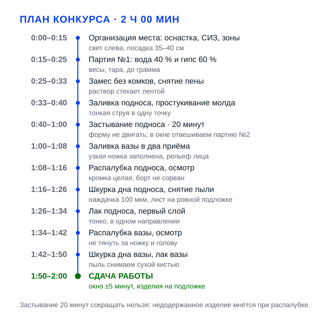
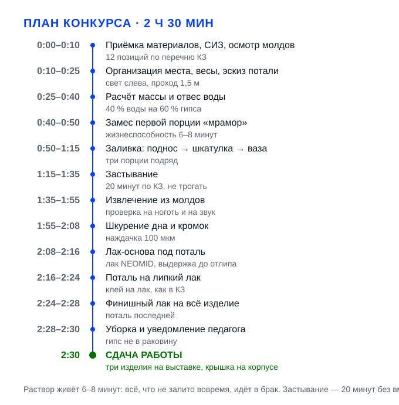
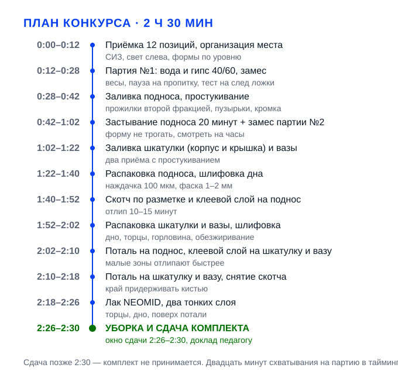

Изготовление предметов интерьера из гипса (ФВ)
Задания ниже — официальные файлы «Абилимпикс» (источник: abilympics-russia.ru), разложенные по категориям. Решения написаны по тексту задания, регламенту и критериям оценки; в них указано, что именно проверяет эксперт.
Школьник
14–16 лет, базовый уровень заданияВ официальном файле категории не разделены отдельными разделами — приводим задание целиком; различия по категориям смотрите в таблице модулей.
Пошаговое решение
Школьникам по конкурсному заданию нужно за два часа отлить из гипса два предмета интерьера — овальный поднос и вазу в виде девушки, — затем вынуть их из форм, зашкурить дно наждачной бумагой зернистостью 100 мкм и покрыть лаком. Вся работа держится на одной цифре: раствор затворяют в пропорции 40 % воды и 60 % гипса по массе, то есть на 480 г холодной воды берут 720 г гипса. Ошибка в пропорции или в температуре воды не исправляется потом ни шкуркой, ни лаком: слишком жидкий раствор даёт хрупкое изделие с раковинами, слишком густой не заполняет узкую ножку вазы и встаёт комом прямо в чаше. Дальше идут два двадцатиминутных ожидания застывания, и всё остальное время вы работаете вокруг них, поэтому тайм-план важнее скорости рук. Пишите решение так, как будете действовать у стола: сначала отмерять, потом замешать, залить, простучать молд, дождаться, вынуть, зашкурить, покрыть лаком и сдать.

Задача 1. Организовать рабочее место и подготовить оснасткуКЗ п. 2.3 · организационный этап · 0:00–0:15
До первого грамма гипса стол должен быть готов к работе: оснастка сверена по перечню, молды осмотрены изнутри, весы проверены, защита надета, зоны разделены, а двести минут конкурса расписаны по операциям с двумя окнами застывания. Этот этап не даёт готового изделия, но именно он определяет, успеете ли вы вообще: пятнадцати минут на организацию хватает с запасом, а если начать с замеса, к первой заливке обязательно выяснится, что молд грязный, весы не тарированы или гипс стоит в комках. Эксперт смотрит на это время как на показатель культуры труда и умения читать задание.
Действие 1.1. Сверить комплектацию и осмотреть молды
Шаг 1.1.1
Берём перечень оснащения из задания и проходим по нему глазами и руками: гипс Фрипласт Аква, холодная вода, ёмкость для замешивания, ложка, молд подноса, молд вазы, наждачная бумага зернистостью 100 мкм, резиновые перчатки, медицинская маска, фартук, кухонные весы — по одной штуке на участника. Каждую позицию не просто находим, а ставим на отведённое место и проверяем состояние: упаковка гипса не подмокшая, ложка жёсткая и не гнётся в руке, наждачка не затёрта до гладкости, перчатки по размеру. Если чего-то нет или предмет сломан, это выясняется сейчас, а не в момент заливки.
Перечень в задании — это граница ваших возможностей: чего нет в списке, вам не выдадут, а замену после старта согласует только главный эксперт и только при уважительной причине. Пятнадцать минут до старта — единственное время, когда недостающее можно получить без потери баллов. Кроме того, осмотренная заранее оснастка экономит самый дорогой ресурс: у вас два часа на два изделия, и любая беготня в середине съедает минуты из окна застывания.
Все десять строк перечня отмечены, каждая вещь лежит на своём месте в пределах вытянутой руки. Проверьте себя просто: закройте глаза и назовите, где лежат весы, ложка и наждачка. Если хотя бы про один предмет вы задумались, положите его туда, где будете искать рукой, а не взглядом.
Типичная ошибка — оглядеть стол, решить, что «примерно всё есть», и начать работать: на третьем шаге выясняется, что наждачка одна и уже использована, а ложка гнётся под весом густого раствора. Второй провал — не проверить упаковку гипса: подмокший порошок уже частично схватился внутри и даёт крупинки, которые видны на поверхности изделия.
Эксперт проходит по рабочим местам в первые минуты и отмечает, сверялся ли участник со списком или импровизировал. Отдельно фиксируется, насколько оснастка разложена по зонам — это видно сразу, без вопросов.
Шаг 1.1.2
Достаём оба молда — овальный поднос и вазу в виде девушки — и осматриваем их изнутри при хорошем свете. Проводим пальцем по внутренней поверхности: она должна быть гладкой, без заусенцев, наплывов и прилипших крупинок гипса от прошлых заливок. Смотрим кромку: у подноса она тонкая и легко деформируется, поэтому проверяем, не загнута ли она внутрь, иначе изделие выйдет с завальцованным бортом. У вазы отдельно осматриваем узкие места — ножку, плечи, линию волос: именно там остаются воздушные пробки и именно там чаще всего скапливается мусор.
Молд — это форма будущего изделия, и все его дефекты переходят на гипс с точностью до наоборот: вмятина на форме станет выступом на подносе, а крупинка на дне даст раковину, которую шкуркой не убрать, не испортив плоскость. Кромка важнее, чем кажется: по ней изделие и вынимают, и оценивают, потому что овальный поднос и ваза-девушка по заданию сдаются как готовый предмет интерьера, а не как заготовка.
Проведите по внутренней поверхности молда ватным диском или белой салфеткой: на ней не должно остаться ни пыли, ни серых следов. Посмотрите на молд на просвет у окна — при боковом свете видны все наплывы и царапины. Кромка лежит ровно, при нажатии пальцем пружинит, а не складывается.
Самая частая ошибка — помыть молд и сразу заливать, не просушив: капли воды на стенках разбавляют раствор у поверхности, и на лицевой стороне появляются бледные пятна и мелкие каверны. Вторая — залить форму с остатком старого гипса на дне: он не схватывается с новым слоем и откалывается вместе с фрагментом лицевой поверхности.
Эксперт смотрит изделие уже после распалубки, но причину дефекта видит по характеру: пятна и каверны на лицевой стороне он читает как небрежность подготовки формы.
Шаг 1.1.3
Ставим кухонные весы на ровную сухую поверхность, подальше от чаши с водой, и проверяем их перед работой: включаем, ждём нулей, ставим пустую тару и обнуляем кнопкой «Тара». Если гирьки или контрольного груза нет, проверьте весы подручным способом — бутылкой воды с известным объёмом: литр воды весит примерно 1000 г, и расхождение больше двадцати граммов на килограмме уже опасно. Чашу для замешивания выбираем так, чтобы раствор занимал не больше половины её объёма: при 1200 г смеси нужен литр с небольшим, иначе при перемешивании раствор пойдёт через край.
Пропорция 40 % воды и 60 % гипса задана по массе, а не по объёму, поэтому без весов она не выполняется: гипс сыпучий, его объём зависит от уплотнения, и стакан гипса у разных людей весит по-разному. Погрешность весов в двадцать граммов на килограмме — это уже три процента, то есть сдвиг пропорции в сторону воды, а вода забирает прочность. Обнулённая тара нужна, чтобы не вычитать вес чаши в уме в самый ответственный момент.
Весы показывают ноль с пустой чашей, при нажатии на платформу пальцем цифры меняются и возвращаются к нулю. Налейте в чашу воду и посмотрите на деление: уровень должен быть заметно ниже половины стенки. Ложка входит в чашу свободно, не задевая стенки при круговом движении.
Классика — взвешивать гипс прямо в чаше, где уже налита вода: гипс мгновенно схватывается на дне комками, а весы показывают суммарную массу, из которой невозможно понять, сколько добавить. Вторая ошибка — работать на весах с севшей батарейкой: они показывают цифры, но врут на десятки граммов, и вы узнаёте об этом только по готовому изделию.
Эксперт может подойти и посмотреть, как участник обращается с весами, — тарирование и порядок взвешивания видны за десять секунд и говорят о понимании процесса больше, чем итоговое изделие.
Действие 1.2. Надеть защиту и разложить зоны
Шаг 1.2.1
Надеваем фартук, резиновые перчатки и медицинскую маску, длинные волосы убираем под резинку. Перчатки нужны не для красоты: гипс сушит кожу до трещин, а в трещины попадает гипсовая пыль. Маску надеваем до того, как откроете мешок с гипсом, а не после первого вдоха пыли: при пересыпании из мешка в чашу поднимается облако тонкой фракции, которое видно на просвет. Если под рукой есть респиратор, при взвешивании используем его, а маску оставляем на замес.
Требования охраны труда в задании прямо говорят о работе в перчатках, маске и фартуке, и это оценивается как часть культуры рабочего места. Гипсовая пыль — мелкодисперсный материал: она не токсична, но раздражает слизистые и при вдыхании оседает в дыхательных путях, поэтому маска на этапе взвешивания обязательна. Кроме того, перчатки защищают изделие: следы от пальцев на свежем растворе остаются навсегда.
Фартук застёгнут и закрывает грудь и колени, перчатки сидят по размеру и не спадают при сжатии кулака, маска прилегает к лицу и закрывает нос, а не висит на подбородке. Волосы не падают вперёд при наклоне над столом — проверьте наклоном к чаше.
Самая частая ошибка — надеть маску на подбородок и сдвинуть её на лоб, когда станет жарко: смысл защиты теряется полностью. Вторая — работать в перчатках не по размеру: большие сползают в раствор, а раствор в перчатке не чувствуется рукой, и вы не замечаете, что гипс уже начал схватываться.
Эксперт фиксирует наличие защиты в самом начале и потом смотрит, остаётся ли она на месте во время пыльных операций — взвешивания и шкурения. Отдельно отмечается, снимает ли участник перчатки, когда они мешают, и надевает ли их обратно перед работой с раствором.
Шаг 1.2.2
Застилаем стол клеёнкой или плотной плёнкой с нахлёстом на край и раскладываем всё по четырём зонам. Сухая зона — весы, мешок с гипсом, мерная ложка: там не должно быть ни капли воды. Мокрая — чаша с водой, чаша для замеса, тряпка. Зона форм — оба молда на ровной подложке, рядом деревянный брусок или ручка для простукивания. Зона готовых изделий — свободный участок стола, застеленный отдельной салфеткой, куда вы поставите поднос и вазу после распалубки. Расстояние между мокрой и сухой зонами — не меньше ширины ладони, чтобы брызги не попали в гипс.
Гипс необратимо портится от воды, попавшей в мешок: схватившиеся крупинки не растворяются и всплывают в изделии твёрдыми точками. Разделение на зоны экономит и движения: за два часа вы подходите к весам и к чаше десятки раз, и каждый лишний шаг отнимает секунды из окна застывания. Клеёнка нужна потому, что капли раствора на столе застывают за минуту и скалываются крошкой, которая летит на изделие.
Прогоните в голове всю цепочку: гипс, вода, замес, заливка, застывание, распалубка, шкурка, лак. Каждая операция должна иметь своё место, и ни одна не должна требовать перестановки других. Проверьте, что до зоны форм можно дотянуться, не обходя стол, и что готовые изделия никому не мешают.
Ошибка новичка — поставить мешок с гипсом рядом с чашей воды: одно неловкое движение, и брызги летят в порошок. Вторая — оставить готовые изделия там же, где шкурили: гипсовая пыль от шкурки садится на свежий лак, и поверхность становится шершавой.
Эксперт смотрит на порядок в зонах и на чистоту стола в процессе. Мокрый и заляпанный раствором стол к концу работы читается как потеря аккуратности, даже если изделия получились.
Шаг 1.2.3
Проверяем свет и посадку до старта. Свет должен падать на работу слева, если вы правша, и не давать резкой тени от вашей же руки на поверхность раствора — иначе вы не увидите пузырьки. Расстояние от глаз до работы по требованиям задания — не менее 35–40 см, сидеть надо прямо, касаясь спиной спинки стула. Стул поднимаем или опускаем так, чтобы кромка молда была на уровне локтя: при заливке рука идёт сверху вниз, а не вбок, и струя получается ровной. Если зрение слабое, заранее достаём лупу с подсветкой и кладём её в зону форм.
Освещение слева и отсутствие тени — не формальность: пузырьки в растворе видны только на косом свете, а на плоском освещении вы их просто не найдёте до распалубки. Посадка на уровне локтя напрямую влияет на точность: чем короче рычаг руки, тем ровнее струя и тем меньше брызг на кромке. Требование про 35–40 см из инструкции по охране труда относится к работе со всей компетенцией и проверяется на месте.
Наклонитесь над столом: тень от головы не должна падать на внутреннюю поверхность молда. Проверьте расстояние до глаз линейкой или на глаз по длине карандаша. Плечи расслаблены, спина касается спинки, ступни стоят на полу.
Работать стоя в наклоне над столом: через двадцать минут начинает тянуть поясницу, руки дрожат на заливке, и струя идёт вкось. Вторая ошибка — включить лампу так, что она бьёт в глаза: зрачок сужается, и мелкие пузырьки в растворе становятся неразличимы.
Эксперт оценивает организацию места и эргономику в начале работы. Для участников с нарушением зрения он отдельно проверяет, пользуется ли участник лупой и работает ли на разрешённом расстоянии.
Действие 1.3. Разобрать задание и расписать два часа
Шаг 1.3.1
Читаем последовательность из задания целиком, до последнего пункта, и выписываем её себе коротко на листок: отмерить гипс и воду, замешать, залить молд и простучать, дать застыть двадцать минут, вынуть изделие, зашкурить дно, покрыть лаком. Рядом записываем требуемый результат: овальный поднос и ваза в виде девушки. Проговариваем про себя, что школьникам поталью ничего не декорируют — этот шаг есть только у студентов и специалистов, и если вы начнёте искать поталь, потеряете время впустую.
Задание построено так, что каждый следующий шаг зависит от предыдущего, и пропуск одного пункта не компенсируется качеством остальных: незашкуренное дно видно сразу, а непросохший лак липнет к рукам эксперта. Двадцать минут застывания сократить нельзя, но их можно использовать для работы с первым изделием. Разница между школьной и студенческой программой важна ещё и потому, что оснастка у вас урезана, и это выясняется заранее.
Перескажите последовательность по памяти вслух — семь пунктов без подсказки. Проверьте, что вы помните оба требуемых изделия, овальную форму подноса и фигуру девушки у вазы, и что в вашем плане нет операций, которых нет в задании. Если хотя бы один пункт выпал, перечитайте его сейчас, а не в середине работы.
Прочитать только первые строки и начать мешать: тогда про наждачку и лак вспоминают за десять минут до сдачи, и работа сдаётся с незашкуренным дном. Вторая ошибка — принять студенческую часть задания за свою и искать поталь, которой вам не выдадут.
Эксперт проверяет соответствие сданных изделий заданию: количество, форма и наличие лакового покрытия. Лишние или недостающие операции трактуются как невыполнение пункта.
Шаг 1.3.2
Раскладываем сто двадцать минут по операциям. На организацию — 15 минут, на партию и замес — 10–12, на заливку подноса — 7–10, на застывание ровно 20 по заданию, на распалубку — до 8. Второй цикл идёт внахлёст: пока поднос застывает, вы отвешиваете и замешиваете гипс для вазы, а пока застывает ваза, шкурите и покрываете лаком поднос. На шкурку, два слоя лака и уборку остаётся около двадцати минут, и шкурить нужно в стороне от формы, чтобы пыль не села на незастывшую поверхность.
Двадцать минут застывания — жёсткая величина из задания, и она не сжимается: если вынуть изделие раньше, оно деформируется или треснет по тонкому борту. Значит, весь запас времени нужно создавать на других операциях, а не на застывании. Параллельная работа в окне ожидания — единственный способ уложиться в два часа без спешки в финале, когда ошибки стоят дороже всего: лак наносится последним и уже не исправляется.
У вас на листке есть время начала и конца каждой операции. Сложите длительности — сумма должна быть около 120 минут с запасом 5–7 минут. Проверьте, что окна застывания не пересекаются с операциями, требующими рук в том же месте.
Планировать последовательно, без перекрытия: тогда шкурка и лак обоих изделий падают в последние пятнадцать минут, и вы торопитесь именно там, где нужна аккуратность. Вторая ошибка — заложить на застывание 15 минут «чтобы успеть»: изделие встанет не полностью, и при распалубке поедет кромка.
Эксперт видит темп работы и понимает, планировал участник или реагировал на события. Спешка в финале читается по подтёкам лака и неубранному столу, а ровный темп — по тому, что изделия стоят на подложке за несколько минут до срока.
Шаг 1.3.3
Договариваемся с экспертом о том, как вы будете сообщать о готовности и как задавать вопросы, — это делается до старта, тридцать секунд. Если у вас нарушение слуха, заранее проговорите с сурдопереводчиком или волонтёром условные сигналы: поднятая рука — вопрос, изделие на подложке в зоне сдачи — работа закончена. Если нарушение зрения, попросите положить оснастку в постоянном порядке и не переставлять её, а надписи на упаковке гипса прочитайте заранее, до старта, чтобы в нужный момент не искать читающего.
Время конкурса идёт непрерывно, и объяснение с экспертом в середине работы не останавливает его. Заранее согласованный сигнал экономит минуты и снимает риск, что вас не поймут: для участников с нарушением слуха в задании прямо предусмотрен переводчик русского жестового языка, а для слабовидящих — доступное текстовое оформление задания. Кроме того, умение организовать коммуникацию оценивается как часть организационных навыков.
Вы знаете, кому и как подать сигнал, и уверены, что вас поймут с первого раза. Проверьте это на простом действии до старта: поднимите руку, поймайте взгляд эксперта, дождитесь кивка. Если ответа нет, сигнал нужно менять сейчас, а не в момент, когда изделие готово.
Рассчитывать, что «сами заметят»: эксперт ведёт несколько участников и не следит за вашим столом непрерывно. Обратная ошибка — звать эксперта по каждому поводу и тратить конкурсное время на разговоры.
Эксперт отмечает, умеет ли участник формулировать вопрос коротко и по делу. Понятный сигнал о готовности ускоряет приёмку работы и снимает спорные ситуации по времени.
Задача 2. Отмерить гипс и воду в пропорции 40 к 60КЗ п. 2.3, шаг 1 · 0:15–0:27
Пропорция из задания — 40 % воды и 60 % гипса по массе — это фундамент всей работы, потому что от неё зависят и текучесть раствора при заливке, и прочность готового изделия после застывания. На этом этапе вы работаете только весами и двумя ёмкостями: сначала холодная вода, потом гипс, и никаких «на глаз», потому что гипс не прощает приблизительности. Заодно вы фиксируете цифры, чтобы вторую партию для вазы замешать точно так же, а не заново угадывать консистенцию.
Действие 2.1. Подготовить воду и оценить гипс
Шаг 2.1.1
Открываем упаковку гипса Фрипласт Аква и оцениваем его состояние до взвешивания: порошок должен быть сыпучим и однородным, без плотных комков, которые не рассыпаются при нажатии ложкой. Проведите ложкой по поверхности — свежий гипс течёт, как мука, а лежалый или подмокший идёт плотными комьями и оставляет на ложке налипший слой. Заодно посмотрите на дату и условия хранения на упаковке: гипс активно впитывает влагу из воздуха, и открытый мешок за пару недель теряет часть активности.
Частично схватившийся гипс ведёт себя непредсказуемо: он забирает больше воды, комкуется и встаёт раньше срока, из-за чего раствор густеет прямо в чаше, не дойдя до формы. Для пропорции 40 к 60 это критично, потому что расчёт делается по сухой массе, а в подмокшем порошке часть массы — уже связанная вода. Если порошок вызывает сомнение, лучше сказать об этом эксперту до старта, чем получить изделие с рыхлой поверхностью.
Возьмите щепотку и разотрите между пальцами в перчатке: она должна рассыпаться, а не мазаться. Просейте небольшую порцию через сито или просто рассыпьте на лист — комков размером с горошину быть не должно. Порошок светлый и однородный, без серых вкраплений.
Самый частый промах — высыпать гипс из подмокшего мешка, не глядя, и потом удивляться, что раствор встал за три минуты. Вторая ошибка — разбивать комки прямо в чаше при замесе: они не разойдутся полностью и останутся в изделии твёрдыми точками на лицевой поверхности.
Эксперт видит комки в готовом изделии и на поверхности: рыхлые светлые крапины читаются как работа с испорченным материалом или как небрежный замес. Отдельно он смотрит, не осталось ли сухого порошка в швах рельефа, где он держится дольше всего.
Шаг 2.1.2
Наливаем холодную воду отдельной ёмкостью — не из-под крана в чашу для замеса, а сначала в мерную тару, чтобы видеть объём. По заданию вода нужна холодная: ориентируйтесь на 15–18 градусов, то есть вода из-под крана, постоявшая полчаса, или вода со льдом, отстоянная до комнатной прохлады. Тёплую воду не используем вообще: она ускоряет схватывание настолько, что раствор встаёт в чаше через две-три минуты, и до формы вы его не донесёте.
Температура воды — главный регулятор скорости схватывания гипса, и в задании она указана не случайно. При холодной воде у вас есть пять-семь минут спокойной работы: замешать без комков, простучать форму, снять пузырьки. Тёплая вода сокращает это окно вдвое, а горячая способна «вскипятить» смесь, и тогда изделие получается пористым и крошливым, потому что гипс схватился раньше, чем занял форму.
Опустите палец в перчатке: вода ощущается прохладной, но не ледяной. Если есть термометр, проверьте — 15–18 градусов. На стенках мерной ёмкости не должно быть конденсата, а сама вода прозрачная, без мути и масляных плёнок.
Налить воду из чайника или из горячей линии «чтобы гипс лучше расходился» — самая дорогая ошибка на этом шаге: раствор схватывается в чаше, и вы теряете и материал, и партию. Вторая — набрать воду прямо в чашу для замеса и потом доливать: объём сбивается, и пропорция уезжает.
Эксперт может потрогать воду или спросить, какая она: холодная вода — признак того, что участник понимает химию процесса, а не повторяет движения. Быстрый ответ с цифрой в градусах он отмечает как понимание технологии.
Шаг 2.1.3
Прикидываем нужную массу раствора под каждую форму. Поднос овальный и неглубокий: на него хватает примерно 500–600 г готовой смеси, то есть около 200–240 г воды и 300–360 г гипса. Ваза в виде девушки объёмнее и имеет узкую ножку, на неё уходит 700–900 г смеси, значит примерно 280–360 г воды и 420–540 г гипса. Считайте не на глаз, а от объёма формы: налейте в молд воду, заметьте, сколько её помещается, и возьмите гипса примерно в полтора раза больше по массе, чем объём формы в миллилитрах.
Готовить одну большую порцию на два изделия нельзя: пока вы зальёте поднос, раствор для вазы уже начнёт густеть. Значит, партий будет две, и каждая должна быть рассчитана так, чтобы её хватило с небольшим запасом. Недолив даёт недозаполненную кромку и брак по форме, а излишек — это гипс, вылитый в ведро, и лишняя минута на уборку в конце, когда времени и так нет.
Запишите на листке две пары цифр — вода и гипс для подноса, вода и гипс для вазы. Проверьте каждую пару по правилу сорока и шестидесяти: масса гипса должна составлять ровно полторы массы воды. Сумма двух масс и есть вес вашей партии.
Смешать сразу всё, что есть в упаковке: часть раствора обязательно останется лишней и застынет в чаше, а вы потратите время на её вычищение, пока форма ждёт. Вторая ошибка — взять порцию «на глаз, побольше»: при густом остатке на дне чаши изделие получается с утяжелённым, неровным дном.
Эксперт смотрит на количество отходов: полная чаша застывшего гипса в конце работы — видимый признак того, что расчёт не делался. Второй признак — недолитая кромка, которая говорит о том, что порцию взяли меньше нужного.
Действие 2.2. Отвесить компоненты и проверить пропорцию
Шаг 2.2.1
Ставим на весы пустую чашу для замешивания, обнуляем тару и наливаем воду первой — ровно столько, сколько записали для этой партии, например 240 г для подноса. Воду наливаем именно в чашу на весах, а не приносим в мерном стакане: так вы видите контрольную цифру и не переносите потери на стенках посуды. Если перелили, отлейте ложкой и убедитесь, что весы вернулись к нужному числу, а не к «примерно».
Вода взвешивается первой, потому что сухой гипс в чаше не даёт налить воду без разбрызгивания, а подсыпать воду к уже засыпанному гипсу означает менять пропорцию на глаз. Кроме того, при обратном порядке часть порошка уже начнёт схватываться у стенок, пока вы довешиваете воду. Цифра на весах до грамма — это и есть ваша гарантия, что 40 % соблюдены.
На весах ровно записанное число, погрешность не больше пары граммов. Проверьте, что на внутренних стенках чаши нет сухого налёта от прошлой работы: он добавит незапланированную массу. Заодно убедитесь, что чаша стоит на платформе целиком, а не на краю.
Наливать воду «по метке на чаше», а потом взвешивать: метка на пластике врёт на десятки миллилитров, и пропорция уезжает в сторону воды. Вторая ошибка — не обнулить тару и потом вычитать вес чаши в уме: при спешке арифметика ломается, и раствор получается жидким.
Порядок взвешивания — вода первой, гипс вторым — эксперт видит сразу и оценивает как понимание технологии, а не как заученную последовательность. Он же отмечает, обнулена ли тара: работа без тарирования говорит о том, что участник не контролирует цифры.
Шаг 2.2.2
Теперь отвешиваем гипс: досыпаем его в ту же чашу с водой небольшими порциями, пока весы не покажут нужную массу, например 360 г при 240 г воды. Сыпем с высоты десяти-пятнадцати сантиметров, ровным слоем по всей поверхности воды, а не в одну горку. Между порциями даём порошку секунду смочиться и только потом досыпаем — так вы сразу видите, не перебрали ли, и не образуете сухой островок в центре.
Пропорция проверяется по массе гипса, и превышение даже на десять процентов делает раствор густым: он перестаёт затекать в узкую ножку вазы и оставляет раковины у стенок. Недосып, наоборот, даёт избыток воды, а лишняя вода испаряется при сушке и оставляет поры, из-за чего изделие становится хрупким. Ровное распределение порошка по поверхности воды — первый шаг к замесу без комков.
На весах ровно расчётная масса с точностью до пяти граммов. Отношение проверяется делением: масса гипса, делённая на массу воды, должна дать 1,5. Сверху на воде виден ровный слой порошка без сухих бугров и без участков, где гипс уже ушёл на дно плотной массой.
Сыпать гипс в одну точку: в центре образуется плотный ком, который потом не разбивается ложкой, а вокруг остаётся вода. Вторая ошибка — пересыпать и пытаться «исправить» досыпанием воды: пропорция окончательно ломается, и вместо 40 к 60 получается 50 на 50, а такой раствор даёт слабое изделие.
Эксперт по готовому изделию видит нарушение пропорции: избыток воды даёт светлую, пористую, лёгкую поверхность, недостаток — тёмные плотные участки и плохое заполнение тонких деталей.
Шаг 2.2.3
Перед замешиванием сверяем обе цифры ещё раз и записываем их на листке рядом с временем. Если для подноса было 240 г воды и 360 г гипса, то для вазы берём ту же пропорцию, только с другим масштабом — например 320 г воды и 480 г гипса, и эти числа тоже пишем. Такой листок снимает главную причину разнобоя: вторая партия получается точно такой же по консистенции, как первая, и ведёт себя предсказуемо.
Две партии делаются с интервалом в полчаса, и к тому времени цифры вылетают из головы: начинается «на глаз», и второе изделие выходит с другой поверхностью, чем первое. Одинаковая пропорция важна и потому, что изделия сдаются вместе, как комплект, и разница в цвете и фактуре между подносом и вазой видна невооружённым глазом. Записанные цифры — это ещё и страховка от волнения: в нужный момент вы просто читаете свою же подсказку.
На листке две строки с числами, и обе дают отношение 1,5. Проверьте арифметику делением на калькуляторе или в уме: 360 разделить на 240 — полтора, 480 разделить на 320 — тоже полтора. Если получается другое, пересчитайте до замеса, а не после.
Полагаться на память и «примерно те же пропорции»: вторая партия почти всегда выходит жиже первой, потому что рука помнит объём, а не вес. Вторая ошибка — считать пропорцию от общего веса смеси, то есть брать 40 % от 600 г вместо 40 % воды к 60 % гипса: это разные числа, и разница доходит до сорока граммов.
Ровная фактура и одинаковый цвет двух изделий — для эксперта прямое доказательство, что пропорция соблюдалась осознанно и повторялась, а не получилась случайно.
Задача 3. Замешать раствор без комковКЗ п. 2.3, шаг 2 · 0:27–0:37
Замес длится меньше двух минут, но именно здесь решается, будет ли поверхность изделия гладкой. Задача — получить однородную массу без комков и без лишнего воздуха, которая течёт в форму как густая сметана и при этом не встаёт в чаше раньше времени. Всё делается быстро, но без суеты: гипс сыплется в воду, выдерживается, перемешивается восьмёркой, а потом проверяется на глаз и на ложку.
Действие 3.1. Смешать воду и гипс в правильном порядке
Шаг 3.1.1
Гипс всегда сыплем в воду, а не воду в гипс: у вас в чаше уже стоит отвешенная вода, вы досыпаете порошок и даёте ему уйти под поверхность самому. Не мешайте сразу — пусть порошок впитает воду в течение тридцати-шестидесяти секунд, за это время уйдёт основная часть воздуха, который иначе останется в растворе пузырьками. Ложку держите наготове, но первое движение делайте не раньше, чем порошок перестанет быть сухим сверху.
Порядок «гипс в воду» — базовое правило затворения: при обратном порядке на поверхности порошка образуется плотная корка, вода не доходит до внутренних слоёв, и комки остаются даже после долгого перемешивания. Выдержка в полминуты тоже работает на результат: сухие частицы успевают смочиться равномерно, и вам потом не приходится разбивать их силой, поднимая в раствор воздух.
Через тридцать секунд на поверхности не остаётся сухих участков, порошок потемнел и осел. Ложка входит в массу без хруста, на дне не прощупывается плотный слой. Если сухие пятна остались, подождите ещё десять секунд, прежде чем мешать.
Насыпать гипс и тут же начать мешать с усилием: комки не успевают смочиться, ложка гонит их по кругу, а воздух замешивается в раствор. Вторая ошибка — лить воду в сухой гипс: смесь идёт коркой, и половина порошка остаётся сухой на дне.
Характер комков в изделии эксперт отличает безошибочно: сухие светлые крупинки — это след нарушения порядка затворения, а не плохого гипса. Такие крупинки он находит и на дне, и в углублениях рельефа, где они держатся крепче всего.
Шаг 3.1.2
Перемешиваем ложкой или венчиком полторы-две минуты, двигаясь восьмёркой по всей чаше: от дальней стенки к ближней и обратно, каждый раз задевая дно и стенки. Скорость средняя, движения непрерывные, но без взбивания — раствор не нужно ни взбивать, ни быстро крутить, потому что ваша задача перемешать, а не нагнать пену. Через минуту пройдитесь по стенкам отдельно: именно там оседает непромешанный гипс, который потом отваливается в форму куском.
Движения восьмёркой захватывают весь объём чаши, включая углы, где при круговом перемешивании остаются непромешанные зоны. Долгое или слишком энергичное перемешивание тоже вредно: оно затягивает воздух, а пузырьки в тонкостенном борту подноса превращаются в раковины, которые шкуркой не убрать. Полутора-двух минут хватает, чтобы масса стала однородной, и при этом она ещё не начала густеть.
Поднимите ложку над чашей: масса стекает ровной лентой и рисунок от неё на поверхности сглаживается за пару секунд. На дне и у стенок нет плотного осадка, по массе не ходят комки. Цвет однородный, без светлых и тёмных разводов.
Мешать круговыми движениями у стенки: в центре остаётся непромешанная воронка сухого гипса. Вторая ошибка — взбивать венчиком на высокой скорости: в растворе появляется пена, и на лицевой стороне изделия потом видны мелкие кратеры.
Пузырьки и кратеры на лицевой стороне эксперт считает дефектом поверхности и отдельно отмечает, что причина — способ замеса. Ровная, без точек, поверхность говорит о том, что раствор перемешивали спокойно и сняли пену перед заливкой.
Шаг 3.1.3
Проверяем консистенцию на ложке. Правильная масса для заливки в молд стекает с ложки широкой лентой, ложится на поверхность и через секунду-две расплывается в лепёшку — это состояние между густой сметаной и мёдом. Если масса держится горкой и не расплывается, она густовата: значит, гипса больше, и заливать её в узкую ножку вазы нельзя. Если стекает струёй и сразу исчезает в общей массе, воды многовато.
Именно консистенция определяет, заполнит ли раствор мелкие детали формы: лицо и волосы вазы требуют текучести, а поднос — способности удержаться на дне без растекания через кромку. Определять это надо до заливки, потому что после начала схватывания исправлять уже нельзя: разбавление водой разрушает структуру, а добавление гипса оставит комки. Ленточка на ложке — самый быстрый домашний тест, который заменяет вискозиметр.
Тест ложкой: поднятая ложка даёт ленту шириной в два-три сантиметра, масса не рвётся на капли. Второй тест — след от пальца в перчатке: углубление заплывает за две-три секунды. Третий — наклон чаши: масса течёт медленно и всей массой.
Доливать воду, чтобы «стало пожиже»: вы теряете прочность, и изделие крошится по тонкому борту. Обратная ошибка — досыпать гипс в уже замешанную массу: он не разойдётся и останется комками, а раствор встанет раньше срока.
По готовому изделию эксперт читает нарушение консистенции: незаполненные детали лица и волос на вазе говорят о слишком густом растворе, а рыхлая поверхность — о слишком жидком.
Шаг 3.1.4
Перед тем как нести чашу к формам, снимаем пену и пузыри с поверхности: проводим ложкой по массе плашмя, сгребая пену к краю, и снимаем её в отдельную посуду. Затем стучим чашей о стол короткими ударами — три-четыре раза с интервалом в секунду, держа её двумя руками, — и смотрим, как пузыри выходят на поверхность. Если пузырей много, повторите простукивание после короткой паузы, но не трясите чашу непрерывно: от тряски раствор только больше пенится.
Пена на поверхности не исчезает сама: она попадает в форму первой и остаётся на лицевой стороне изделия в виде кратеров, которые не закрываются ни шпаклёвкой, ни лаком. Простукивание выводит воздух из толщи к поверхности, где его можно снять ложкой. Это самая дешёвая операция по времени — двадцать секунд, — но она спасает поверхность, которую вы будете оценивать вместе с экспертом.
На поверхности видна гладкая масса без пенных пузырей, на стенках чаши нет пены выше уровня раствора. Постучите ещё раз: новых пузырей почти не появляется, значит воздух вышел. Пену, снятую ложкой, не возвращайте в чашу.
Нести чашу к форме с пенной шапкой — тогда кратеры будут именно там, где смотрит эксперт, на лицевой стороне. Вторая ошибка — трясти чашу долго и сильно: пузыри не только выходят, но и затягиваются обратно, а раствор густеет.
Налитая пена на изделии видна как мелкая рябь и точечные углубления. Эксперт относит это к грубым дефектам поверхности, потому что исправить их уже нельзя.
Шаг 3.1.5
Ставим чашу на подставку рядом с формами, чтобы не нести её через стол, и проверяем время по часам: от момента, когда гипс попал в воду, до начала заливки должно пройти не больше трёх-четырёх минут. Если вы потратили больше, масса уже густеет — тогда заливайте немедленно, не пытаясь довести её до идеала. Дальше действуйте от чаши: сначала поднос, сразу за ним ваза, если в чаше осталась свежая порция.
У гипса есть период, когда он ещё течёт, и после него масса начинает вставать необратимо: у Фрипласт Аква при холодной воде это окно около пяти-семи минут, и тратить его на перестановки нельзя. Чаша рядом с формами экономит не только время, но и точность: нести полную чашу через стол — это капли на столе и риск опрокинуть её. Отсчёт от момента засыпки, а не от начала перемешивания, потому что схватывание уже идёт.
На часах понятно время замеса, до заливки осталось не меньше двух минут запаса. Чаша стоит устойчиво, не на краю стола, под рукой ложка и тряпка для капель. Формы при этом уже открыты и стоят на подложке.
Замешать раствор, потом пойти за молдом или за наждачкой: возвращаетесь к загустевшей массе, которую уже нельзя нормально залить. Вторая ошибка — держать чашу на весу во время разговора с экспертом и ставить её потом на край стола, откуда она падает.
Эксперт по характеру поверхности отличает изделие, залитое свежим раствором, от залитого начавшим схватываться: у второго видны полосы и неровная кромка.
Задача 4. Залить молды, уплотнить раствор и выдержать застываниеКЗ п. 2.3, шаги 3–4 · 0:37–1:05 и 1:17–1:47
Заливка занимает минуту-полторы на форму, но определяет весь внешний вид изделия: от того, куда вы льёте, с какой высоты и как уплотняете, зависит, останутся ли на лицевой стороне раковины и дойдёт ли раствор до кончиков волос на вазе. Затем наступает пауза в двадцать минут, которую по заданию нельзя сокращать, и это время надо использовать для работы с первым изделием, а не для ожидания. Здесь же решается вопрос с кромкой: гипс при схватывании не садится, а слегка расширяется, поэтому заполнять форму нужно ровно до края, без запаса.
Действие 4.1. Поставить формы и подготовить их к заливке
Шаг 4.1.1
Ставим молд на ровную горизонтальную подложку — плитку, дощечку или лист пластика — и проверяем горизонтальность на глаз и по уровню, если он есть: посмотрите на кромку формы относительно края стола с двух сторон. Подложка должна быть шире формы на пару сантиметров, чтобы капли раствора падали на неё, а не на стол. Поднос ставим так, чтобы к нему был свободный подход с двух сторон: заливать удобнее, когда рука идёт по длинной стороне овала.
На перекошенной подложке раствор сам распределяется к низкой стороне: у одного борта его больше, у другого он не доходит до кромки, и изделие получается с волной по краю. Выровнять потом нельзя — застывший гипс не гнётся, а шкуркой кромку не исправить, не нарушив форму овального подноса, которая и есть результат по заданию. Широкая подложка нужна, чтобы капли не прилипали к столу: отковыривать их потом — потерянные минуты.
Приложите к кромке формы линейку или ровную планку: зазора под ней не должно быть видно. Посмотрите на форму сверху — она не качается при нажатии пальцем на угол, звук при постукивании ровный, без дребезга.
Заливать прямо на столешнице с уклоном к сливу — самая незаметная ошибка: перекос в два-три градуса даёт разницу по высоте борта в несколько миллиметров, и это видно на готовом подносе. Вторая — поставить форму на салфетку: ткань тянет влагу из раствора и деформирует кромку.
Разная толщина борта и след от подложки на дне — признаки того, что форма стояла криво. Эксперт оценивает геометрию изделия и видит перекос, не беря его в руки: достаточно поставить поднос на ровный стол.
Шаг 4.1.2
Осматриваем форму ещё раз уже в рабочем положении и решаем вопрос с разделительным слоем. Силиконовый молд в смазке не нуждается: гипс к нему не липнет, а лишняя смазка, наоборот, даёт на поверхности масляные пятна и мешает лаку лечь ровно. Если форма жёсткая пластиковая, действуйте по инструкции к ней: в большинстве случаев достаточно протереть внутреннюю поверхность чуть влажной тряпкой и дать высохнуть. Ни в коем случае не смазывайте форму вазелином или маслом «на всякий случай».
Разделительный слой — самая частая причина брака у новичков именно потому, что его добавляют без необходимости: гипс не прилипает к силикону, а масляная плёнка остаётся на лицевой стороне и потом не даёт лаку схватиться. Пятна на поверхности видны под любым углом и лаком не закрываются. Если же форма действительно требует разделителя, это указано в её паспорте, и тогда слой наносится тонко и высушивается.
Внутренняя поверхность чистая и сухая, без разводов и жирного блеска. Проведите по ней пальцем в перчатке: палец должен идти с лёгким сопротивлением, без скольжения. Углы и узкие места формы не имеют капель воды.
Нанести масло или крем на силиконовую форму: изделие вынется легко, но лицевая сторона пойдёт пятнами, а лак на этих местах соберётся в капли. Вторая ошибка — оставить в форме каплю воды: раствор вокруг неё разбавится, и получится каверна.
Масляные пятна и «отторгнутый» лак на поверхности эксперт читает как ошибку подготовки формы, а не как дефект материала. Он же смотрит, нет ли на лицевой стороне следов от пальцев, оставленных при смазывании.
Шаг 4.1.3
Определяем, откуда удобнее лить: у подноса это самая низкая точка дна, у вазы — отверстие в нижней части или горловина, смотря как устроен молд. Прикиньте траекторию струи заранее: расстояние от ложки до формы должно быть десять-пятнадцать сантиметров, не больше, иначе струя разбивается и захватывает воздух. Поставьте чашу так, чтобы рука с ложкой двигалась свободно и не задевала край формы на весу.
Струя с высоты больше пятнадцати сантиметров падает с ударом, вспенивается и тянет воздух в толщу раствора — а пузыри потом выходят на лицевой поверхности кратерами. Низкая струя в одну точку позволяет раствору растекаться по дну самому, вытесняя воздух впереди себя, а не запечатывая его под слоем. Заранее выбранная траектория экономит главное — секунды, пока раствор ещё текучий.
Проведите ложкой над формой, не заливая: движение получается плавным, локоть не задевает ничего. Расстояние от ложки до дна формы — примерно ладонь. Форма стоит так, что вы видите дно целиком, а не через отражение на стенке.
Лить с высоты тридцати сантиметров «чтобы точнее попасть»: раствор пенится, и половина пузырей остаётся в изделии. Вторая ошибка — держать чашу над формой на весу: рука устаёт, струя дрожит, и на дне остаются полосы.
Характер пузырей в изделии — крупные, у самого дна — эксперт связывает с высотой струи и способом заливки, а не с качеством гипса. Мелкая равномерная рябь говорит уже о другом: о слишком энергичном замесе.
Действие 4.2. Залить поднос
Шаг 4.2.1
Набираем раствор ложкой и льём тонкой непрерывной струёй в одну точку — в самую низкую часть дна подноса, держа ложку почти горизонтально и чуть наклоняя её. Струя не должна рваться: как только она прервалась, в массе остался воздушный карман. Раствор идёт по дну и поднимается по стенкам сам, вытесняя воздух впереди; ваша задача — держать точку подачи на уровне поднимающегося зеркала, а не лить сверху в уже залитое.
Заливка в одну точку с подъёмом зеркала — основной приём, который даёт поверхность без раковин: воздух уходит вперёд фронта раствора, а не запирается под ним. Если лить по всей площади или переставлять струю, поток разбивается на несколько фронтов, между ними остаются воздушные пробки, и после распалубки на лицевой стороне видны гладкие углубления. Тонкая струя нужна и для того, чтобы не разбрызгать раствор по кромке.
Фронт раствора поднимается ровным языком, без островков сухого дна впереди. На поверхности не видно крупных пузырей, она блестит однородно. Кромка формы остаётся чистой, без потеков снаружи, а под формой не появляется лужица.
Лить сразу по всей площади, размахивая ложкой: получается пена и раковины, которые потом видны на лице подноса. Вторая ошибка — лить в угол: раствор поднимается по одной стенке и захлопывает воздух в противоположной.
Ровная, без углублений лицевая сторона — главный признак правильной заливки. Эксперт смотрит на неё под углом к свету, где раковины видны лучше всего.
Шаг 4.2.2
Заполняем форму до самой кромки, добавляя раствор небольшими порциями, и в конце даём массе подняться на один-два миллиметра выше края формы — этот излишек потом снимется. Не пытайтесь оставить «запас на усадку»: гипс при схватывании не садится, а расширяется примерно на 0,2–0,5 %, поэтому заниженный уровень даст недолитый, рваный борт. Доливку делайте сразу, пока раствор текучий: подлить на уже схватившуюся поверхность нельзя, слои не соединятся.
Расширение при твердении — свойство гипса, и именно оно позволяет получать точные оттиски формы: масса вдавливается в мельчайшие детали рельефа, поэтому рисунок на подносе воспроизводится без потери глубины. Именно из-за расширения форму нельзя переполнять сильно: лишний слой придётся срезать, а срезанная кромка выглядит грубее литой. Уровень по кромке — оптимум между недоливом и наплывом.
Раствор виден по всему периметру кромки ровным мениском, без провалов. Наклоните голову к уровню стола: поверхность должна быть горизонтальной, а не с уклоном к одной стороне. Толщина борта одинаковая по всему овалу.
Недолить «на миллиметр, чтобы не перелилось»: после застывания борт получается с раковинами и зализами, а это самая заметная часть подноса. Вторая ошибка — перелить с горкой и потом срезать ножом: срез крошится, и кромка становится щербатой.
Кромка — первое, что берут в руки при оценке: рваный или недооформленный борт эксперт отмечает сразу, ещё до осмотра лицевой стороны. Он же смотрит на толщину борта по периметру, потому что перекос формы виден именно там.
Шаг 4.2.3
Сразу после заполнения проходим по наружной стенке формы и убираем потеки тряпкой, пока раствор не схватился: капли, попавшие на внешнюю поверхность, потом отковыриваются вместе с кусочками формы и мешают ставить её на подложку. Затем коротко проверяем дно снизу — под форму не должен протечь раствор, иначе изделие прилипнет к подложке и при распалубке треснет по тонкому месту. Если протечка есть, подложите под форму полоску плёнки и вытрите каплю.
Потеки и протечки — мелочь на вид, но они дают два реальных последствия: прилипание к подложке и повреждение кромки при отрыве. Кроме того, гипс на внешней стороне формы мешает «простучать» её: вы стучите по слою гипса, а не по стенке, и уплотнение не работает. Убрать капли можно только в первые минуты, потом они застывают в камень.
Внешняя поверхность формы чистая и сухая на ощупь, под формой на подложке нет лужицы. Форма стоит на подложке всей плоскостью, без приподнятого угла. Проведите пальцем по кромке снизу — гипса там быть не должно.
Оставить потеки «потом отковыряю»: к моменту распалубки они уже каменные, и при отковыривании вы давите на форму, деформируя свежий оттиск. Вторая — не заметить протечку под подносом: изделие приклеивается к подложке, и его отрывают вместе со сколом на дне.
Прилипшая крошка на внешней стороне и рваное дно — след неубранных потеков; эксперт фиксирует это как неаккуратность в работе с формой. Отдельно он смотрит, не осталось ли на подложке отпечатка дна, который говорит о протечке.
Действие 4.3. Залить вазу в виде девушки
Шаг 4.3.1
Ваза сложнее подноса, потому что у неё есть узкая ножка и мелкий рельеф — лицо, волосы, складки. Начинаем с самой узкой части: заливаем раствор в ножку или в нижнюю точку формы, наклонив молд на десять-пятнадцать градусов и медленно поворачивая его, чтобы раствор прошёл по внутренней стенке и вытеснил воздух вверх, а не запер его в узком канале. Струя в узком месте должна быть совсем тонкой, почти нитью.
Узкие каналы — место, где воздух запирается чаще всего: если лить сверху широким потоком, масса перекрывает выход, и в ножке остаётся пустой карман, который виден после распалубки как недолитая впадина. Наклон и поворот формы заставляют раствор ползти по стенке, вытесняя воздух вперёд и вверх. Мелкий рельеф лица и волос заполняется только текучей массой, поэтому в этой партии особенно важно не переложить гипса.
Раствор виден в узкой части без пустот и воздушных пробок, при наклоне формы он двигается вместе со стенкой, а не отстаёт. На поверхности нет крупных пузырей. Рельеф лица и волос заполнен, рисунок читается через толщу раствора.
Лить сразу в широкую часть: узкая ножка остаётся с воздушным карманом, и ваза выходит с недоливом точно в самом тонком месте. Вторая ошибка — переложить гипса и получить густую массу: она не заходит в рельеф лица, и черты получаются смазанными.
Недолитая ножка и смазанный рельеф лица — те дефекты, которые эксперт находит первым делом, потому что ваза в виде девушки в задании названа отдельным изделием.
Шаг 4.3.2
Заполняем форму в два приёма: сначала на треть высоты, даём раствору секунду-две улечься и простукиваем форму по внешней стенке, затем доливаем остальное до кромки. Между приёмами не ждём больше пятнадцати-двадцати секунд, иначе первый слой начнёт схватываться и стык будет заметен. Второй приём ведём всё той же тонкой струёй в одну точку на поверхности поднимающегося раствора.
Двухприёмная заливка даёт возможность вывести воздух из рельефа в тот момент, когда он ещё близко к поверхности, и не даёт ему подняться в верхние слои, где он испортит лицо вазы. Стук по стенке между приёмами работает эффективнее, чем стук по полной форме: массе легче сдвинуться, пока её немного. Пятнадцать секунд — практический предел: дальше начинается схватывание, и стык слоёв остаётся видимым после застывания.
Уровень поднимается равномерно, без ступеньки на месте первого приёма. На внешней стенке формы при простукивании видны мелкие пузырьки, выходящие к поверхности. В рельефе лица и волос не остаётся сухих участков, рисунок читается сквозь раствор.
Залить всё одним махом с высоты: пена и воздух в верхних слоях, лицо вазы с кратерами. Вторая ошибка — растянуть приёмы на минуту: между слоями остаётся видимая граница, которую ни шкурка, ни лак не скрывают.
Граница между слоями читается как полоса на просвет и под лаком. Эксперт считает это технологическим дефектом заливки, а не свойством гипса, и на вазе такая полоса заметнее, чем на подносе.
Шаг 4.3.3
Доводим уровень точно по кромке, снимаем излишек ложкой плашмя и сразу убираем потеки с внешней стороны формы. Затем проверяем, что форма стоит ровно: ваза высокая, и даже небольшой перекос даёт заметный наклон фигуры. Если видите, что поверхность стоит не горизонтально, а раствор ещё текучий, аккуратно подложите под низкий край полоску пластика и подождите полминуты — уровень выровняется сам.
Вертикальность фигуры проверяется по центральной оси: у вазы в виде девушки наклон корпуса на пару градусов уже читается как брак, потому что глаз человека хорошо ловит отклонения от вертикали. Выравнивать подложкой надо в первые минуты, пока масса текучая; после схватывания любое движение формы даёт трещину по слабому месту. Снятый излишек с кромки экономит время на распалубке.
Поставьте форму на уровне глаз и посмотрите на неё с двух сторон: ось симметрии вертикальна. Поверхность раствора горизонтальна, излишка над кромкой нет. Внешние стенки чистые, а подложка под формой не подмокла.
Оставить форму с наклоном «само выровняется»: гипс не выравнивается, а застывает как есть, и ваза приходит с заваленным корпусом. Вторая ошибка — поправить форму через десять минут после заливки: внутри уже схватившаяся масса, и смещение даёт трещину.
Наклон корпуса и несимметричность вазы эксперт видит на расстоянии, не беря её в руки, — это один из самых заметных дефектов формы. Рядом стоящий поднос он использует как точку сравнения: оба изделия должны стоять ровно.
Действие 4.4. Уплотнить раствор и выдержать двадцать минут
Шаг 4.4.1
Простукиваем молд по заданию: держим форму двумя руками или прижимаем одной, а второй наносим короткие частые удары ладонью или тыльной стороной ложки по внешней стенке, обходя её по кругу. Удары несильные, но резкие, сериями по пять-семь штук с паузой: от каждого удара пузыри поднимаются к поверхности, где их снимают ложкой. У вазы стучим только по толстым участкам — по корпусу и дну, не по тонким выступам рельефа, чтобы не деформировать лицо и волосы.
Простукивание прямо указано в задании как обязательная операция, и это единственный способ убрать воздух из толщи уже залитого раствора. Без него пузыри остаются на лицевой стороне в виде кратеров, а на тонком борту подноса превращаются в сквозные поры. Резкие короткие удары работают лучше долгой тряски: они дают массе короткий импульс, от которого воздух отрывается от стенок, но не вспенивают раствор.
После серии ударов на поверхности появляются мелкие пузырьки — значит, воздух выходит. Снимите их ложкой и постучите ещё раз: если новых почти нет, уплотнение закончено. На внешней стенке формы не осталось капель, а форма не сдвинулась с подложки.
Трясти форму обеими руками в воздухе: раствор колышется, захватывает новый воздух, а изделие получает волну по кромке. Вторая ошибка — стучать по тонкому рельефу лица: детали деформируются, и ваза приходит с помятым лицом.
Отсутствие пузырьков и кратеров на лицевой стороне эксперт напрямую связывает с уплотнением: это самый наглядный критерий качества заливки. Он же смотрит на кромку — там пузыри выходят заметнее всего и остаются в виде мелких точек.
Шаг 4.4.2
Отмечаем время заливки по часам и оставляем форму в покое на двадцать минут, как указано в задании. Все двадцать минут форма не двигается с места: не переносим её, не поправляем, не трогаем пальцем поверхность «проверить, готово ли». Если рядом работают другие участники, отодвиньте форму к дальнему краю стола и предупредите, что здесь залито. Гипс в это время греется — это нормально, тепло от формы означает, что идёт реакция схватывания.
Двадцать минут — время, за которое масса набирает достаточную прочность, чтобы держать форму при распалубке; раньше она ещё пластична, и любое движение оставляет вмятину или трещину. Пальцем поверхность тоже не проверяют: на схватывающемся гипсе остаётся вмятина, которая после застывания превращается в дефект лицевой стороны, и затереть её нечем. Тепло — это признак нормального хода реакции, а не повод для беспокойства.
Часы показывают, сколько прошло от заливки. Форма стоит на том же месте, на поверхности нет отпечатков пальцев. Через десять минут потрогайте внешнюю стенку формы: она тёплая, и это нормально, а вот отсутствие тепла говорит о том, что раствор замешан слишком жидким.
Проверять готовность пальцем каждые две минуты: к моменту распалубки лицевая сторона покрыта вмятинами. Вторая ошибка — перенести форму на другое место «чтобы не мешала»: при переносе масса сдвигается относительно стенок, и на изделии появляются задиры.
Отпечатки и вмятины на лицевой стороне ничем не маскируются, и эксперт сразу понимает их происхождение — проверка пальцем на схватывающемся гипсе. Такие следы он находит под косым светом быстрее, чем любые другие дефекты.
Шаг 4.4.3
К концу выдержки проверяем готовность без нажатия: смотрим на излишек раствора на кромке — он должен заматоваться и приподняться, а при постукивании по нему ложкой звук становится глухим вместо влажного шлепка. Проверку на прочность делаем на этом излишке, а не на изделии: сковырните уголок застывшей кромки ногтем, он должен крошиться, а не тянуться. Если к двадцатой минуте масса всё ещё липнет, дайте ещё три-пять минут, но не больше: пересохший гипс становится хрупким и при распалубке крошится по тонким местам.
Проверка по излишку — безопасный способ узнать о готовности: всё, что вы там сломаете, всё равно снимается. Матовая поверхность и глухой звук означают, что гипс перешёл из пластичного состояния в камневидное, и теперь изделие можно вынимать, не боясь деформации. Передежка тоже опасна: изделие начинает отдавать влагу форме и при извлечении цепляется за стенки, а тонкая кромка подноса скалывается.
Излишек на кромке матовый, ложка стучит глухо, скол крошится. Поверхность изделия не липнет к сухой салфетке, приложенной без нажима. Общее время от заливки — около двадцати минут, и дальше каждый лишний час работает против вас.
Начать распалубку по ощущению «вроде застыло» на десятой минуте: изделие выходит, но кромка тянется и мнётся. Вторая ошибка — продержать форму сорок минут «для надёжности»: гипс пересыхает у стенок, и при извлечении срывается поверхностный слой.
Смятая, тянутая кромка и задиры на боковой поверхности — признаки преждевременной распалубки; эксперт отличает их от дефектов заливки без затруднений.
Задача 5. Распалубить изделия, зашкурить дно, покрыть лаком и сдать работуКЗ п. 2.3, шаги 5–7 · 0:57–2:00
Финальная часть работы состоит из четырёх операций, и каждая из них видна эксперту в готовом изделии: аккуратная распалубка сохраняет кромку, шкурка делает дно ровным и не липким на вид, лак даёт ровный блеск без подтёков, а порядок на столе и правильная сдача закрывают весь цикл по заданию. Работать надо в обратном порядке от заливки: сначала вынуть то, что уже застыло, потом заняться шкуркой и лаком, пока застывает второе изделие. Спешка здесь обиднее всего, потому что три четверти работы уже сделано и потерять всё можно на последних минутах.
Действие 5.1. Извлечь изделие из формы
Шаг 5.1.1
Начинаем с освобождения кромки: проводим пальцем в перчатке по внутреннему периметру формы и аккуратно отводим борт от изделия, начиная с угла или с самой широкой части овала и постепенно обходя всю форму. Силикон тянется, поэтому отводим его не вверх, а в сторону, под углом к стенке изделия, и держим отведённым, пока проходит воздух. Ничего металлического — ни ножа, ни шпателя — в форму не заводим, иначе на лицевой стороне останется царапина, которую не убрать.
Воздух должен попасть между гипсом и стенкой формы, иначе вы отрываете изделие рывком: тонкая кромка подноса в этом случае скалывается, а у вазы страдает рельеф. Отведение борта в сторону создаёт ту самую воздушную прослойку по всей высоте, а не в одной точке, и снимает вакуум постепенно. Металл в силиконовой форме опасен вдвойне: он и царапает изделие, и режет саму форму, а испорченный молд второй раз уже не даст нормальный оттиск.
Кромка изделия отошла от стенки по всему периметру, при легком покачивании формы изделие двигается вместе с ней без натяжения. На поверхности не появилось светлых полос и вмятин от пальцев. Звук при постукивании по дну формы — глухой, изделие держится свободно.
Поддеть изделие ножом или ложкой: на лицевой стороне остаётся борозда, а кромка выкрашивается кусками. Вторая ошибка — тянуть форму вверх, не отводя борта: гипс держится за счёт вакуума, и отрыв идёт рывком с трещиной по тонкому месту.
Царапины, сколы кромки и задиры — следы грубой распалубки. Эксперт осматривает кромку и лицевую сторону прежде всего остального, потому что именно эти места нельзя исправить никакой последующей обработкой.
Шаг 5.1.2
Вынимаем изделие, подставив ладонь: переворачиваем форму вместе с ним над рукой, положенной плашмя, и, отгибая борт, даём изделию лечь на ладонь целиком, без точек опоры на тонкие части. Поднос берём за дно двумя руками, вазу — за корпус у основания, никогда за ножку или за голову фигуры. Кладём на подготовленную салфетку в зоне готовых изделий, лицевой стороной вверх, и только после этого убираем руки.
Гипс набирает полную прочность за сутки, а через двадцать минут после заливки он держит форму, но остаётся хрупким на тонких сечениях: ножка вазы и борт подноса ломаются от точечной нагрузки. Подставленная ладонь распределяет вес по всей площади дна, а не по одному пальцу. Лицевой стороной вверх изделие кладут потому, что любая крошка на столе отпечатается на поверхности, пока гипс ещё влажный.
Изделие лежит на салфетке устойчиво, не качается, лицевая сторона обращена вверх. В руках не осталось отломившихся фрагментов. На поверхности нет свежих вмятин от пальцев, а салфетка под изделием осталась сухой.
Вынимать вазу за голову или за ножку: тонкое место не выдерживает, и фигура приходит с трещиной или отломанной деталью. Вторая ошибка — положить изделие лицевой стороной вниз «чтобы просохло»: на поверхности остаются отпечатки салфетки и пыли.
Сломанная ножка или трещина у основания вазы означают, что изделие не соответствует заданию, — эксперт фиксирует это как брак, а не как дефект поверхности.
Шаг 5.1.3
Осматриваем изделие сразу, пока не начали шкурку: смотрим лицевую сторону под углом к свету, потом кромку по всему периметру, потом дно. Отмечаем всё, что видно: раковины, крошки гипса, следы от пальцев, неровности кромки. Если на лицевой стороне остались капли застывшего гипса, их снимают ногтем или деревянной палочкой, а не наждачкой, потому что шкурка оставит матовое пятно на глянцевой поверхности.
Осмотр до шкурки нужен, чтобы не испортить лицевую сторону там, где дефект можно убрать сухим способом. Мелкие наплывы на лицевой стороне снимаются деревянной палочкой под углом, а наждачка на этом месте оставляет пятно другого тона, которое под лаком становится заметным. Одновременно вы решаете, что вообще можно исправить: дно зашкуривается, кромка подравнивается, а раковины на лицевой стороне уже не исправляются ничем.
Вы можете назвать все дефекты изделия и их расположение. Под углом к окну лицевая сторона читается однородной, без тёмных точек и матовых пятен. Кромка ровная по всему периметру, без заусенцев и без следов от формы.
Сразу хвататься за наждачку и тереть всё подряд: на лицевой стороне появляются матовые пятна, которые под лаком выглядят как потёртости. Вторая ошибка — не заметить капли гипса на поверхности и залакировать их: под лаком они видны как бугорки.
Эксперт осматривает изделие под косым светом, поэтому матовые пятна от шкурки на лицевой стороне он находит сразу и отличает их от заводского рельефа.
Действие 5.2. Зашкурить дно изделия
Шаг 5.2.1
Готовим наждачную бумагу зернистостью 100 мкм: отрезаем лист по размеру больше изделия и кладём его абразивом вверх на ровную твёрдую поверхность — плитку, стекло или металлическую линейку-пластину. Работать «на весу», держа лист в руке, нельзя: в этом случае плоскость определяется вашей рукой, а не столом. Наждачку лучше закрепить по краям малярным скотчем, чтобы она не ездила под изделием.
Зернистость 100 мкм — мелкое зерно, примерно уровень P120–P150: оно снимает тонкий слой и не вырывает крупные куски гипса, поэтому дно получается гладким, а не бороздчатым. Ровная твёрдая подложка — главное условие плоскостности: дно должно стать плоским и устойчивым, иначе поднос будет качаться на столе, а ваза — стоять с наклоном. Закреплённый лист не сминается и не рвётся под нажимом.
Лист лежит ровно, без складок и пузырей, приклеен по углам и не ездит под изделием. Зерно на ощупь шершавое, но не крупное, как у напильника. Под листом нет крошек и песка, иначе они продавят борозды в дне изделия и оставят светлые полосы.
Шкурить, держа лист в руке: дно получается скруглённым, изделие качается. Вторая ошибка — взять первую попавшуюся крупную наждачку: она выдирает гипс кусками, и на дне остаются глубокие борозды, которые потом видны под лаком.
Качающееся изделие — прямой признак неплоского дна; эксперт проверяет устойчивость, просто поставив поднос на стол. Он же смотрит на следы от наждачки: ровный матовый рисунок говорит о работе на подложке, а хаотичные борозды — о шкурке на весу.
Шаг 5.2.2
Шкурим, перемещая само изделие по листу: берём его двумя руками за боковины, ставим дном на наждачку и делаем восемь-десять круговых движений по часовой стрелке, затем столько же против, слегка прижимая. Нажим умеренный: гипс мягкий, и лишнее усилие только снимет больше, чем нужно. Движения держим в одной плоскости, не наклоняя изделие на ребро, — иначе собьёте фаску на кромке и получите перекос дна относительно корпуса.
Круговые движения в обе стороны снимают материал равномерно и не дают «односторонней» шлифовки, при которой одна сторона дна стачивается сильнее. Перемещение изделия, а не наждачки, автоматически удерживает плоскость: изделие скользит по ровному листу, и дно принимает его форму. Умеренный нажим нужен потому, что гипс снимается быстро, а переусердствовать — значит уменьшить толщину дна и получить просвечивающее тонкое место.
Дно матовое и ровное по всей площади, без борозд и светлых пятен. Поставьте изделие на стол и нажмите поочерёдно на края: качания нет. Кромка дна не сточена до острого ребра, фаска ровная по всему периметру.
Тереть с сильным нажимом в одном направлении: дно стачивается клином, изделие начинает качаться, а на одном краю появляется тонкое место. Вторая ошибка — шкурить, наклонив изделие на ребро: фаска уходит, кромка становится острой и крошится.
Равномерность дна и ровная фаска — то, что эксперт проверяет рукой, поворачивая изделие: острые, крошащиеся края он отмечает отдельно. Перекошенное дно он находит, поставив изделие на стекло и нажав на угол.
Шаг 5.2.3
Снимаем пыль с изделия: сухой мягкой кистью или щёткой проходим по дну и по всей поверхности, затем продуваем или стряхиваем пыль в сторону от рабочей зоны. Влажной тряпкой не протираем: вода поднимает ворс на зашкуренном гипсе, и после высыхания дно становится шершавым, как до шкурки. Если пыль осталась в углублениях рельефа, выдуйте её резиновой грушей или снимите сухой кистью с жёстким ворсом.
Пыль — главный враг лака: он ложится на пылинки, а не на гипс, и после высыхания поверхность получается шершавой на ощупь и мутной на вид. Влажная протирка кажется логичной, но работает против вас: тонкая гипсовая пыль с водой превращается в кашицу, которая забивает поры и после высыхания даёт светлые разводы. Сухая кисть убирает пыль без риска размыть поверхность.
Проведите по дну пальцем в перчатке: палец остаётся чистым. На тёмной салфетке, которой вы протёрли изделие, нет серого следа. Поверхность на ощупь гладкая и сухая, без шершавых участков у кромки и без белых разводов, которые остаются после влажной протирки.
Протереть изделие влажной тряпкой «для чистоты»: дно становится шершавым, а разводы проступают под лаком белыми пятнами. Вторая ошибка — сдувать пыль в сторону незастывшего второго изделия: пыль оседает на влажном гипсе и остаётся там навсегда.
Мутные пятна и шершавость под лаком эксперт читает как плохо подготовленную поверхность — самый частый дефект финишной отделки. Пыль в рельефе он находит под косым светом, наклоняя изделие к лампе.
Действие 5.3. Покрыть изделия лаком
Шаг 5.3.1
Готовим лак и кисть: акриловый лак для камня (в оснащении указан NEOMID) хорошо перемешиваем в банке круговыми движениями, не взбалтывая, чтобы не нагнать пузырей, и наливаем небольшое количество в отдельную плошку — столько, чтобы хватило на два изделия. Кисть берём мягкую, флейц или широкую плоскую, и до первого мазка проверяем её на сухой салфетке: из кисти не должны вылезать волоски. Пробный мазок делаем на дне изделия, там, где он всё равно зашкуривается.
Лак из банки с осадком даёт неравномерный блеск, поэтому перемешивание обязательно, а вот взбалтывание вредно: в лаке появляются пузыри, которые переносятся кистью на поверхность и остаются в плёнке. Отдельная плошка нужна, чтобы не лакировать прямо из банки и не тащить туда пыль и крошки гипса. Проверка кисти на волоски экономит нервы: один потерянный волосок в свежем лаке — это борозда, которую придётся снимать вместе со слоем.
Лак однородный по цвету и густоте, без сгустков на дне плошки. Кисть держит форму, не лезет, при взмахе не оставляет волосков на салфетке. Пробный мазок на дне лёг ровно, без пузырей и без белых разводов.
Лакировать из банки, не перемешав: первый слой получается жидким, второй густым, и блеск выходит пятнами. Вторая ошибка — взболтать банку: пузыри в плёнке видны как мелкая рябь, и убрать их можно только полной перешлифовкой.
Рябь и пузырьки в лаковой плёнке эксперт видит на просвет; это считается дефектом отделки, даже если поверхность под лаком ровная. Он же смотрит на цвет плёнки: мутный оттенок говорит о взболтанном лаке или о пыли под слоем.
Шаг 5.3.2
Наносим первый слой тонко: макаем кисть на треть ворса, снимаем излишек о край плошки и ведём по поверхности в одном направлении — у подноса вдоль длинной оси, у вазы сверху вниз по корпусу. Не возвращаемся по уже пройденному месту и не растираем лак до полного высыхания: тонкая плёнка сохнет ровнее и не даёт подтёков. Труднодоступные места рельефа проходим кончиком кисти, не набирая лак, — там подтёк образуется быстрее всего.
Тонкий слой — главное правило лакировки гипса: гипс пористый и впитывает первый слой почти сразу, поэтому толстый мазок не ложится ровно, а собирается в лужицы по низу рельефа. Движение в одном направлении даёт одинаковую толщину плёнки и ровный блеск; возвратные движения оставляют полосы, которые видны под углом к свету. В углублениях рельефа лак стекает, и подтёк там застывает в виде капли, которую уже не разгладить.
Плёнка блестит ровно, без полос и «апельсиновой корки». Поставьте изделие на уровень глаз и посмотрите вдоль поверхности: отражение окна не должно ломаться на подтёках. В углублениях рельефа нет скоплений лака.
Набрать полную кисть и пройтись дважды по одному месту: получаются подтёки по низу изделия и мутные пятна. Вторая — гонять кисть туда-сюда до липкости: лак начинает схватываться под кистью и скатывается комочками.
Подтёки по нижней кромке и полосы вдоль поверхности эксперт отмечает как нарушение технологии нанесения, даже при хорошем глянце в центре. Отдельно он проверяет углубления рельефа, где лак скапливается быстрее всего.
Шаг 5.3.3
Даём первому слою высохнуть по инструкции на банке — обычно это тридцать-шестьдесят минут при комнатной температуре, на сквозняке быстрее, — и только после этого наносим второй слой, тоже тонкий и в том же направлении. Пока сохнет, изделие не трогаем и не переставляем: пыль садится на липкую плёнку и остаётся в ней. Если по времени конкурса второй слой не успевает высохнуть, сдавайте изделие с одним слоем, но ровным, потому что липкий второй слой хуже, чем аккуратный один.
Второй слой по сырому первому не ложится, а размывает его: плёнка собирается в складки, и поверхность идёт волной. Полная полимеризация акрилового лака занимает до суток, но для оценки важно, чтобы поверхность не липла к пальцу и не пачкала руки эксперта, который будет брать изделие. Один ровный слой всегда оценивается выше, чем два слоя с потёками, потому что критерий здесь — качество поверхности, а не толщина покрытия.
Через указанное на банке время плёнка не липнет к сухой салфетке, приложенной без нажима. Второй слой лёг без размывания первого, блеск ровный. Отпечатков пальцев на поверхности нет, и пылинок под слоем тоже.
Наносить второй слой через пять минут: первый размывается, и на поверхности остаются мутные полосы. Вторая ошибка — сдавать изделие с липким лаком: эксперт берёт его в руки и оставляет след, а виноват будет участник.
Эксперт проверяет покрытие тактильно, проводя пальцем по кромке: липкость и отпечатки читаются как незавершённая отделка. На просвет он ищет мутные участки, которые остаются там, где слой нанесли слишком толсто.
Действие 5.4. Убрать рабочее место и сдать работу
Шаг 5.4.1
Остатки гипсового раствора выливаем в ведро или плотный пакет с мусором, но ни в коем случае не в раковину и не в унитаз: гипс схватывается в трубе и закупоривает её намертво. Чашу и ложку моём сразу, пока гипс не встал: наполняем чашу водой и оставляем на минуту, затем снимаем размокший слой ложкой и промываем. Если гипс уже схватился, не скоблите пластик ножом — размочите водой и снимите мягкой щёткой.
Гипс в канализации — это не абстрактная угроза: он твердеет в сифоне и в стояке, и площадку придётся останавливать для прочистки, а участнику это зачтётся как грубое нарушение. Посуда, вымытая сразу, отходит за минуту, а через полчаса её приходится отбивать, и на это уходит время из финального этапа, когда каждая минута нужна на лак и сдачу. Засохший гипс на ложке снимается только с потерей поверхности инструмента, который ещё пригодится.
В раковине нет гипсовой взвеси, вода уходит свободно и не булькает в сифоне. Чаша и ложка чистые, без налёта на стенках и на дне, ложка не шершавая под пальцем. Мусорное ведро закрыто, пакет не протекает, а пол рядом со столом сухой.
Слить остатки в раковину «немного, ничего не будет»: именно из таких порций и образуется пробка, а виновника находят по рабочему месту. Вторая ошибка — отложить мытьё посуды на конец: к моменту сдачи чаша стоит с каменным дном, и её приходится отмачивать.
Чистота рабочего места и обращение с отходами входят в оценку организации труда; санкции за слив гипса в канализацию предусмотрены правилами площадки.
Шаг 5.4.2
Проходим по столу и раскладываем всё по местам: наждачку складываем и убираем в отведённое место, кисти промываем в воде с мылом до полного удаления лака и сушим ворсом вверх, банку с лаком закрываем, перчатки и маску снимаем и выбрасываем, фартук снимаем и вешаем. Клеёнку протираем влажной тряпкой от гипсовых капель и капель лака, стол вытираем насухо. Молды промываем водой и сушим, не оставляя в них воды.
Кисть, не промытая сразу, через двадцать минут превращается в камень: акриловый лак в волосе полимеризуется, и инструмент можно только выбросить. Чистый стол нужен и вам самим — на заляпанной поверхности нельзя аккуратно выставить изделия на подложку для сдачи. Молды промывают и сушат потому, что остатки гипса в форме портят следующую заливку, а вода в закрытой форме даёт плесень и запах.
Стол сухой и чистый, клеёнка без гипсовых нашлёпок, тряпка прополоскана. Кисти промыты до чистой воды, ворс не слипшийся и сушится вверх. Молды чистые и сухие, наждачка и инструменты на своих местах, перчатки и маска в мусоре, а не на столе.
Оставить кисть в банке с лаком «до следующего раза»: она застывает в один комок, и второй слой наносить нечем. Вторая ошибка — промыть молд и поставить мокрым: в узких местах остаётся вода, и следующая заливка даёт каверны.
Состояние инструмента после работы эксперт видит сразу: слипшаяся кисть и гипсовые нашлёпки на столе говорят о том, что участник не владеет культурой труда.
Шаг 5.4.3
Выставляем готовые изделия на сдачу: поднос и вазу ставим на чистую светлую подложку рядом друг с другом, лицевой стороной к эксперту, на расстоянии ладони между ними, чтобы их можно было осмотреть по отдельности. Рядом кладём номер участника или этикетку, если они выданы. Проверьте, что изделия не касаются друг друга и ничего не стоит перед ними: эксперту нужно подойти и взять каждое в руки.
Порядок на подложке — первое, что видит эксперт: два изделия, выставленные с расстоянием и лицевой стороной вперёд, читаются как комплект, а сваленные в кучу — как черновик. Ваза и поднос по заданию сдаются вместе, поэтому их сопоставляют друг с другом, и одинаковая фактура видна только когда они стоят рядом. Номер участника исключает путаницу при оценке.
Оба изделия на подложке, лицевой стороной вверх, не соприкасаются. Под ними чисто, подложка сухая. Номер участника на месте и читается без наклона, а перед подложкой есть свободное место, чтобы эксперт подошёл.
Поставить изделия вплотную друг к другу: при осмотре эксперт задевает одно, и оно падает или царапает второе. Вторая ошибка — оставить изделия на заляпанной клеёнке, где видны следы гипса и лака, и поставить их на край стола.
Эксперт подходит к подложке с уже сложившимся первым впечатлением: аккуратная выкладка работает на участника ещё до того, как он взял изделие в руки. Он же сверяет номер участника с подложкой, чтобы оценка не ушла чужой работе.
Шаг 5.4.4
Уведомляем эксперта об окончании работы, как требует задание: поднимаем руку и спокойно говорим, что оба изделия готовы и выставлены на подложке. Дальше коротко, в трёх-четырёх фразах, называем главное: пропорция раствора, время выдержки, что делали с дном и сколько слоёв лака. Вопросы эксперта слушаем до конца и отвечаем по существу, не оправдываясь и не приукрашивая: если на поверхности есть раковина, о ней лучше сказать самому.
Уведомление об окончании — отдельный пункт последовательности в задании, и без него работа может считаться несданной, даже если изделия стоят готовыми. Короткий отчёт по делу показывает, что участник понимает технологию, а не просто выполнял движения: эксперт слышит, осознанно ли соблюдались пропорция и выдержка. Честный ответ про дефект вызывает доверие, а попытка выдать работу за безупречную при видимом недостатке читается как непонимание.
Эксперт подтвердил приёмку работы, время сдачи зафиксировано. Вы можете назвать пропорцию, время застывания, зернистость наждачки и число слоёв лака без подсказки. Изделия при этом остаются на подложке, а не в руках.
Молча сидеть и ждать, пока заметят: время конкурса идёт, и опоздание к сдаче грозит тем, что работу не примут. Вторая ошибка — начать длинно рассказывать всю историю работы: эксперт ограничен по времени и оценивает по изделию, а не по рассказу.
Эксперт фиксирует время сдачи и задаёт один-два вопроса по технологии. Уверенные ответы с цифрами он отмечает как понимание процесса, а не как заученный текст.
Студент
учащиеся колледжей и техникумовВ официальном файле категории не разделены отдельными разделами — приводим задание целиком; различия по категориям смотрите в таблице модулей.
Пошаговое решение
Задание категории «Студенты» сложнее школьного не количеством изделий, а техникой: нужно залить поднос круглой формы, шкатулку с крышкой и вазу под сухоцветы гипсовым раствором в «мраморной» технике, дать застыть, вынуть из молдов, зашкурить дно наждачкой зернистостью 100 мкм, задекорировать поталью и полностью покрыть акриловым лаком NEOMID для камня. На всё задание отводится 2 часа 30 минут, и внутри этого времени есть один жёсткий отрезок — 20 минут застывания, которые нельзя ни сократить, ни растянуть. Пропорция раствора задана в задании жёстко: 40 % воды и 60 % гипса, то есть на 600 г гипса 400 г воды. Главные риски здесь не эстетические, а технологические: перестоявший раствор схватывается комками, недостуканный молд даёт раковины на лицевой стороне, а поталь на недосушенном лаке рвётся и уходит пятнами. Ниже — сорок три шага в том порядке, в котором их надо делать, с цифрами из конкурсного задания.

Задача 1. Организовать рабочее место и принять материалыПодготовка · 10–20 минут из 2 ч 30 мин
До первого замеса площадка должна быть готова полностью: сухой стол, свет слева, три молда осмотрены, средства защиты надеты, гипс и вода проверены и отмерены. В конкурсном задании организация рабочего места стоит отдельной строкой в последовательности выполнения работы и оценивается раньше, чем качество изделий, поэтому первые десять минут экономят потом полчаса. На этом этапе вы не делаете красивое — вы убираете всё, что может испортить заливку: пыль, сквозняк, лишние предметы на столе, тёплую воду.
Действие 1.1. Подготовить место и надеть средства защиты
Шаг 1.1.1
Обходим свой участок и первым делом проверяем столешницу: она должна быть сухой, без крошек гипса и капель воды, потому что на мокром столе молд подтаскивает влагу снизу и раствор в нём перекашивается. Свет по требованиям охраны труда падает на работу слева — если лампа или окно справа, тень от правой руки закрывает борт молда, и вы не увидите, как раствор поднимается по кромке. Садимся прямо, касаясь корпуса спинки стула, и проверяем расстояние от глаз до столешницы: 35–40 см, ближе — начнёте сутулиться над вазой и потеряете контроль над струёй.
Это первая строка в последовательности выполнения задания — «организовать рабочее место», и её оценивают до того, как вы возьмёте ложку. Площадь рабочего места по заданию 3000×1900 мм при проходе 1,5 м, и на ней должны разойтись три молда, весы, ёмкость с водой, наждачка и зона сушки. Если стол качается или заставлен лишним, каждый замер идёт с погрешностью, а к моменту шкурения она превращается в перекошенное дно подноса.
Стол сухой и пустой, на нём только то, что нужно для работы. Проверьте три вещи: наклоняетесь — тень не закрывает центр стола; качаете стол ладонью — он не отзывается; проводите рукой по столешнице — на ладони нет гипсовой пыли, значит, её уже протёрли.
Оставить на столе лужу от пробного замеса: молд встаёт на неё и «плывёт», дно подноса получается с уклоном, а шкатулка не садится на крышку. Вторая ошибка — сесть так, что свет падает с правой стороны: границу заливки вы не видите и переливаете раствор через борт.
Эксперт проходит по площадке до старта и смотрит именно на стол: сухой ли он, свободен ли, падает ли свет слева. Второй раз он возвращается к этому при заливке — по тени от руки видно, соблюдено ли расстояние 35–40 см до работы.
Шаг 1.1.2
Надеваем фартук, медицинскую маску и резиновые перчатки — весь комплект идёт по перечню оборудования на одного участника. Фартук завязываем так, чтобы он закрывал грудь и живот и не свисал на колени: свисающая ткань попадает в раствор и в готовое изделие. Маску надеваем до того, как откроем пакет с гипсом, а не после первой порции, потому что пыль поднимается в момент засыпки. Перчатки — на обе руки, плотно по размеру, без складок на пальцах: в складках раствор скатывается в комки и потом эти комки попадают на лицевую поверхность.
Гипс — щелочной материал, и сухая пыль раздражает слизистые, поэтому маска и перчатки входят в обязательный перечень по заданию, а не выдаются «для красоты». Задача категории «Студенты» включает работу с лаком NEOMID для камня и с поталью, то есть ещё два источника раздражения кожи, и перчатки придётся надевать заново после шкурения — одноразовые, свежие.
Перчатки сидят без складок, маска закрывает рот и нос, фартук не свисает ниже колен. Поднимите руки: если фартук тянет за шею или сползает с плеча, перевяжите завязки — во время заливки поправлять его будет нечем.
Начать замешивать без маски и через минуту закашляться от пыли — часть гипса уже в воздухе, часть на столе, и недовес в порции. Вторая ошибка — работать в перчатках с длинными свободными пальцами: раствор затекает внутрь, рука скользит, ложка уходит в стенку молда.
Эксперт фиксирует наличие средств защиты на входе и отдельно смотрит, меняются ли перчатки после шкурения — перед лаком и поталью они должны быть новыми.
Шаг 1.1.3
Раскладываем инструмент по одной линии слева направо в порядке работы: кухонные весы с ровной площадкой, ёмкость для замешивания, ложка, три молда, наждачка, лак, поталь, кисть или губка. Ёмкость берём такую, где раствор при замешивании занимает не больше половины объёма, иначе при первом же круге ложкой он пойдёт через край. Наждачку проверяем на маркировку: в задании указана зернистость 100 мкм, и подменять её мелкой «на всякий случай» нельзя — мелкая засаливается о свежий гипс и не снимает облой.
Порядок на столе — это не про эстетику, а про скорость: жизнеспособность гипсового раствора 6–8 минут, и если ложку приходится искать в этот момент, порция уходит в брак. Задание перечисляет на одного участника 12 позиций, включая весы и наждачку конкретной зернистости, и каждая позиция должна быть на своём месте до старта. Проверка инструмента до работы — отдельное требование охраны труда: неисправное меняется до начала, а не в процессе.
Проведите рукой по линии раскладки: до каждого предмета вы дотягиваетесь, не вставая, и не переставляете локоть через молд. Наждачка лежит ворсом вверх и не скомкана. На весах горит ноль, площадка чистая и сухая.
Положить наждачку листом под молд «чтобы не скользил»: она намокает, забивается гипсом и перестаёт шкурить. Вторая ошибка — поставить ёмкость для замешивания слишком маленькой: раствор в ней не промешивается до дна, и на дне остаётся сухой гипс, который потом всплывает комками.
Эксперт смотрит на раскладку в момент старта: всё ли из перечня на месте, соответствует ли наждачка заявленной зернистости 100 мкм. Потом он отмечает, приходится ли участнику искать инструмент в середине замеса, — такие паузы видны и стоят дороже любого отдельного балла.
Действие 1.2. Принять материалы и проверить гипс с водой
Шаг 1.2.1
Берём пакет с гипсом «Фрипласт Аква», вскрываем и проверяем содержимое: порошок сыпучий, без плотных комков и без следов влаги на стенках пакета. Комки берём в руку и растираем — свежий материал рассыпается, схватившийся остаётся плотным зерном, и такой комок в растворе уже не разойдётся, а выйдет бугром на лицевой стороне подноса. Заодно смотрим на дату изготовления: у гипсовых вяжущих срок хранения ограничен, и старый материал схватывается быстрее заявленного.
Из перечня оборудования по заданию на участника выдаётся один вид вяжущего — гипс «Фрипласт Аква», и замены в процессе не предусмотрено. Комки и затёкший материал дают неравномерное схватывание: часть изделия встаёт раньше, часть позже, и при извлечении из молда изделие трескается по границе этих зон. Проверка занимает минуту и снимает главную причину брака, который потом невозможно исправить.
Гипса в пакете не меньше, чем нужно на три изделия с запасом на подмес. Порошок однородный по цвету, комков нет, пакет сухой внутри. Если видите хотя бы два плотных комка — сразу говорите эксперту и просите замену, дальше будет поздно.
Замешать первым, что нашлось на столе, не глядя в пакет: комки выходят наверх уже в молде, когда исправлять нечего. Вторая ошибка — досыпать в порцию «ещё немного» из другого пакета: другая партия схватывается иначе, и вся серия из трёх изделий получается разной по цвету.
Эксперт может проверить пакет вместе с вами на приёмке, и это входит в оценку организации работы с материалом. Отдельно он смотрит, что участник сделал, обнаружив комки: попросил замену до замеса или всыпал материал как есть и начал работать.
Шаг 1.2.2
Наливаем воду заранее и только холодную: по заданию вода холодная, температура примерно 15–18 °C, на ощупь заметно прохладная. Тёплая вода ускоряет схватывание гипса в полтора-два раза, и вместо 6–8 минут работы у вас остаётся 4, а этого не хватает даже на один поднос с простукиванием. Воду отмеряем весами, а не на глаз стаканом: 40 % воды на 60 % гипса — это отношение два к трём, то есть на 600 г гипса 400 г воды, и «примерно» здесь не работает.
Гипсовое тесто — стехиометрия, а не кулинария: лишняя вода даёт рыхлую, меловую структуру с усадкой и трещинами при сушке, недостаток воды делает раствор густым, он не заполняет тонкие части молда и не отдаёт пузыри. Пропорция 40/60 задана в конкурсном задании дважды — и в структуре, и в последовательности, значит, отклонение от неё эксперт заметит по весу и по плотности готового изделия.
Вода в ёмкости стоит до замеса не меньше десяти минут и на стенке ёмкости не потеет. Весы показывают ровно расчётную массу с точностью до грамма. Опустите палец — вода холодная; если палец чувствует тепло, воду надо заменить.
Налить воду из-под крана «как есть», когда она ещё тёплая после прогрева труб: раствор схватывается на глазах, и вы не успеваете простучать второй молд. Вторая ошибка — доливать воду в уже замешанный раствор: это единственный способ гарантированно испортить порцию, потому что вода не вмешивается обратно.
Эксперт смотрит на ёмкость с водой в момент замеса и на весы: отмерено ли и холодная ли вода. Тёплую воду он определяет и по поведению раствора — если порция встаёт на глазах, объяснение про «налил из крана» уже не поможет.
Задача 2. Отмерить гипс и воду в пропорции 40 к 60 и замешать «мраморный» растворЗамес · 15–20 минут · три порции подряд
Раствор — это 80 % результата: из правильно замешанной порции изделие выходит плотным, гладким и одинаковым по тону, из неправильной — рыхлым, с раковинами и разводами. Пропорция задана жёстко, 40 % воды и 60 % гипса, но этого мало: важно, в каком порядке смешивать, сколько секунд мешать и как получить «мрамор» без колера. Здесь же решается вопрос партий — три изделия замешиваются тремя порциями, потому что одна большая порция не доживёт до третьего молда.
Действие 2.1. Отмерить порции весами
Шаг 2.1.1
Ставим ёмкость для замешивания на весы и обнуляем показания кнопкой «Тара» — тогда весы показывают только материал, без веса самой чаши. Сыпем гипс ложкой, а не из пакета: из пакета за одну секунду уходит лишние сто граммов, и вернуть их обратно уже нельзя, потому что гипс впитал влагу из воздуха. Считаем вслух: первая порция на поднос — 600 г гипса, вторая на шкатулку с крышкой — 500 г, третья на вазу — 700 г.
Весы в перечне оборудования стоят не для порядка: пропорция 40/60 работает только при точной массе, а «стакан гипса» — это плюс-минус 30 % в зависимости от влажности и помола. Разница в плотности между изделиями сразу читается на выставке: поднос выходит светлее и легче шкатулки, хотя оба должны быть одной серией. Точный вес — это ещё и предсказуемое время схватывания, а оно у вас расписано по минутам.
Тара обнулена, на дисплее ноль. Порция отвешена с точностью до 5 г, излишки сняты ложкой обратно в пакет, а не в чашу. Проверьте, что гипс не прилип к бортам чаши выше уровня, — там он не промешается, а потом отвалится сухим куском.
Сыпать гипс прямо из пакета: на весах плюс сто граммов, раствор получается густым, не доходит до кромки молда, и ваза выходит с недолитыми краями. Вторая ошибка — не обнулить тару: вес чаши прибавляется к гипсу, и вы отмеряете на треть меньше нужного.
Эксперт подходит к весам во время отвеса и смотрит на дисплей: точность видна сразу, как и то, пользуется ли участник тарой. Отдельно он отмечает, не отвешивает ли участник весь гипс одной порцией на три изделия.
Шаг 2.1.2
Отдельно отвешиваем воду под каждую порцию: на 600 г гипса — 400 г, на 500 г — 333 г, на 700 г — 467 г. Удобно налить воду сразу в три чашки и поставить их в ряд, тогда замес идёт без пауз: пока вторая порция схватывается в молде, руки уже свободны для третьей. Воду наливаем в ту же ёмкость, где будет замес, только после этого добавляем гипс, а не наоборот.
Три отдельные порции вместо одной большой — прямое следствие жизнеспособности раствора: 6–8 минут, и всё, что не залито, превращается в камень в чаше. Задание требует залить три разных молда, и по времени это как раз три подхода. Заранее отмеренная вода убирает главную потерю времени в замесе — поиск и взвешивание, когда раствор уже начал вставать.
Три ёмкости с водой стоят в ряд, на каждой весы показывали нужную массу. Вода холодная, на ощупь заметно прохладная. Рядом лежат ложка и сухая тряпка на случай брызг, а сами ёмкости не стоят на краю стола, где их легко опрокинуть локтем.
Налить всю воду сразу в одну большую чашу и мешать по чуть-чуть: первая порция схватывается, пока вы отвешиваете вторую, и её приходится выбрасывать. Вторая ошибка — налить воду после гипса: порошок сбивается в комки, которые не расходятся даже при интенсивном перемешивании.
Эксперт отмечает, работает ли участник партиями: это видно по количеству испачканной посуды, по ритму и по тому, не приходится ли выливать схватившийся раствор. Разлив воды на столе он тоже фиксирует.
Шаг 2.1.3
Перед первым замесом готовим «мраморную» добавку: если в наборе есть колер, отливаем в отдельную чашку 50–80 г воды и добавляем в неё колер на кончике ложки — насыщенный серый или графитовый тон, не больше, потому что гипс светлый и краситель работает очень активно. Если колера нет, работаем на двух порциях одного материала: вторую замешиваем чуть плотнее и с крошкой от подшкуривания, и этот приём даёт тот же эффект прожилок.
«Мраморная» техника заявлена в задании отдельно от простой заливки, и именно она отличает студенческое изделие от школьного. Мрамор в гипсе делается не кистью, а неполным смешением двух масс: рисунок должен идти в толще, а не лежать на поверхности, иначе при шкурении дна и кромок он сойдёт вместе с верхним слоем. Плотность добавки и её количество определяют, будет ли рисунок читаться или растворится в белом.
Добавка размешана полностью, комочков колера нет. Капните ложкой на белую салфетку: тон должен быть заметно темнее основного, но не чёрным. Если получилось почти чёрное — разбавьте водой и добавьте немного основной массы.
Всыпать колер в сухой гипс: он ложится пятнами и не распределяется. Вторая ошибка — положить колер «щедро, чтобы уж точно было видно»: изделие выходит грязно-серым, а не мраморным, и поталь на таком фоне не читается.
Эксперт смотрит на цвет добавки до заливки и на то, повторяется ли рисунок на всех трёх изделиях серии. Ему важно увидеть, что техника понимается, а не имитируется: полосы должны читаться в толще, а не лежать поверх белой массы.
Действие 2.2. Замешать раствор и собрать мраморный рисунок
Шаг 2.2.1
Гипс всыпаем в воду, а не наоборот, и делаем это ровной струёй по всей площади чаши, за 20–30 секунд, не сбиваясь в одну точку. Порошок должен уйти под воду сам, без перемешивания: пока он тонет, вы видите, сколько ещё не смочилось. Только после того, как весь гипс ушёл под воду и на поверхности не осталось сухих островков, берём ложку и начинаем мешать.
Порядок «гипс в воду» — базовое правило работы с вяжущими: при обратном порядке вода не проникает в комки, и они остаются внутри массы. Задание даёт пропорцию 40/60 и требует замешать раствор в чаше для замешивания — то есть предполагает равномерную массу без сухих включений. Комок, не смоченный в первые секунды, уже не разойдётся: он выйдет на лицевую сторону вазы белым бугром.
Опустите ложку до дна и проведите по нему: сухого гипса на дне нет, масса однородная по всей глубине. Если ложка упирается в плотное — не мешайте через силу, а поднимите комок и разомните его о стенку чаши.
Всыпать весь гипс в одну точку: там образуется плотная пробка, вода стоит вокруг, и при перемешивании в массе остаются сухие сгустки. Вторая ошибка — начать мешать сразу, пока гипс ещё сыплется: пыль поднимается, часть материала уходит в воздух и порция недобирает массу.
Эксперт смотрит на технику засыпки: по ней сразу видно, работал ли участник с гипсом раньше. Сыплет по площади — значит, понимает, что происходит с порошком в воде; высыпает в одну точку — значит, будет бороться с комками весь замес.
Шаг 2.2.2
Мешаем ложкой 60–90 секунд, движениями от центра к бортам и обратно, разбивая комки о стенку чаши; ложку держим почти вертикально, чтобы не загонять воздух. Готовая масса по консистенции как густая сметана: стекает с ложки тяжёлой лентой и след от неё выравнивается за две-три секунды. Если масса стоит горкой и не расплывается — воды мало, если растекается как кефир — много.
Время и консистенция определяют, дойдёт ли раствор до кромки молда и отдаст ли пузыри. Недомешанная масса — это сухие зёрна внутри изделия, они дают раковины при извлечении. Перемешанная сверх меры — захваченный воздух, та же пористость, но уже по всей площади. Густая масса не заполняет мелкие детали вазы и крышки шкатулки, жидкая даёт прочность ниже и усадку при сушке.
Ложка, поднятая над чашей, стекает лентой, а не каплями и не струёй. На поверхности массы нет сухих крупинок и нет крупных пузырей. Через 30 секунд после остановки на поверхности появляется лёгкая матовость — это начало схватывания, значит, состав нормальный.
Мешать слишком долго «для верности»: масса начинает густеть прямо в чаше, и на молд её уже не хватает. Вторая ошибка — компенсировать густоту доливом воды: плотность падает, изделие получается рыхлым, крошится по кромке при шкурении.
Эксперт оценивает консистенцию визуально и по тому, как раствор ложится в молд при заливке: густая масса не доходит до кромки, жидкая выплёскивается. Он же смотрит, не доливает ли участник воду в уже замешанную порцию.
Шаг 2.2.3
Мраморный рисунок собираем в последние 15 секунд замеса: выливаем в белую массу тёмную добавку и проводим ложкой два-три широких движения, не добиваясь однородности. Масса должна остаться полосатой — белёсые и графитовые полосы толщиной от нескольких миллиметров до сантиметра. Дальше рисунок дорисует сам молд: пока раствор течёт по стенке, полосы вытягиваются в прожилки.
Если перемешать до однородного серого, мрамора не будет — будет ровный цвет, и это самая обидная потеря баллов, потому что техника заявлена в задании. Неполное смешение — единственный способ получить рисунок в толще, который сохранится после шкурения. Важно и то, что рисунок повторяется: три изделия серии должны выглядеть родными, а не собранными из разных наборов.
Посмотрите на массу сверху: видно не меньше трёх-четырёх полос, границы между ними размытые, а не резкие. Нанесите ложкой пробный мазок на край молда — прожилки должны читаться, но не превращаться в кашу.
Перемешать до однородного цвета, увлёкшись «красотой»: изделие выходит однотонным, и пункт «мраморная техника» фактически не выполнен. Вторая ошибка — добавить слишком много тёмного: рисунок получается грязным, а поталь на тёмном фоне теряется.
Эксперт подходит к чаше в момент заливки и смотрит именно на характер полос — это ключевой признак техники. Ровный серый цвет вместо прожилок он читает как невыполненный пункт «мраморная техника», каким бы аккуратным ни было литьё.
Шаг 2.2.4
Перед заливкой проверяем готовность по часам и на ощупь: с момента засыпки прошло не больше двух минут, чаша снаружи ещё прохладная, масса тянется за ложкой. Если чувствуете, что чаша потеплела, а масса держит форму и не стекает с ложки, — заливать уже поздно, начинайте новую порцию сразу, не пытаясь развести старую водой и не надеясь, что «ещё чуть-чуть успею».
Гипс схватывается с выделением тепла, и потеплевшая чаша — это точный физический признак, доступный без приборов. Именно поэтому в задании работа построена на трёх порциях: как только началось схватывание, любые добавки и переливания только разрушают структуру. Время, потраченное на вторую порцию, всегда меньше, чем потери от испорченного изделия.
Чаша прохладная, масса стекает с ложки, след от неё выравнивается за две-три секунды. На поверхности нет плёнки. Если провести ложкой по массе, борозда заплывает, а не остаётся рваной канавой с плотными краями.
Пытаться спасти схватившуюся порцию, добавив воды и перемешав заново: структура уже разрушена, изделие получится с трещинами и рыхлым дном, а время уйдёт вдвое. Вторая ошибка — долить в старую порцию свежий раствор: два разных срока схватывания в одном молде дают расслоение.
Эксперт засекает время от засыпки до заливки: цикл короткий, и работа «на грани» видна. Ему важно, чтобы при этом не страдала аккуратность, — быстрая заливка с брызгами на бортах не считается хорошей работой.
Задача 3. Залить поднос, шкатулку с крышкой и вазу и убрать воздухЗаливка · 25–30 минут · три молда
Заливка — самый короткий и самый необратимый этап: пока раствор течёт, ещё можно что-то исправить, через две минуты уже нет. Задание требует три изделия: поднос круглой формы, шкатулку с крышкой и вазу под сухоцветы, и у каждого молда своя логика заполнения. Отдельно в задании названо простукивание молда для удаления пузырьков — это не ритуал, а операция, от которой зависит, будет ли лицевая поверхность чистой или пойдёт рябью. Работаем порциями: одна порция — один молд, без попыток залить всё из одной чаши.
Действие 3.1. Залить три молда порциями
Шаг 3.1.1
Перед заливкой осматриваем каждый молд изнутри: поверхность должна быть сухой, чистой, без пыли и без остатков прошлых заливок на бортах. Протираем молд сухой мягкой тряпкой, а не влажной — влага на стенке разбавляет первый слой раствора, и на лицевой стороне появляется полосатистость, которую потом не убрать никакой шкуркой. Ставим молды на ровную сухую поверхность и проверяем, что они не качаются: перекошенный молд даёт изделие с разной толщиной стенки.
Три молда из перечня оборудования — поднос, шкатулка и ваза — должны дать товарные изделия, а не заготовки, и первое, что влияет на товарность, это чистота формы. Пыль в молде связывается с раствором и остаётся на поверхности тёмными вкраплениями; перекос даёт тонкое дно с одной стороны, которое ломается при извлечении. Проверка занимает полминуты и сохраняет изделие.
Проведите пальцем по внутренней стенке: палец остаётся чистым. Наклоните молд — он не шатается на столе. На бортах нет застывших капель от предыдущих заливок; если есть, снимайте их ногтем или деревянной палочкой, но не металлом.
Залить в молд, с которого не сняли остатки прошлой заливки: новый слой не сцепится со старым, и при извлечении изделие расслоится по этому шву. Вторая ошибка — протереть молд мокрой тряпкой: разбавленный первый слой даёт на лицевой стороне светлые разводы.
Эксперт осматривает молды до заливки и отмечает, работает ли участник с формой бережно. Молд, протёртый насухо и выставленный по уровню, он видит сразу, как и следы прошлых заливок на бортах.
Шаг 3.1.2
Заливаем с одной точки, тонкой струёй, ведя ложку вдоль борта и давая раствору стекать по стенке, а не падать в центр. Струя не должна рваться: рваная струя захватывает воздух, и эти пузыри остаются в толще, откуда их уже не выгонишь простукиванием. Наполняем молд не до самого верха, а оставляем 2–3 мм до кромки, чтобы было куда выгнать воздух и выровнять поверхность.
Способ заливки прямо влияет на количество пузырьков, которые задание требует удалить простукиванием: чем аккуратнее льём, тем меньше их придётся выгонять. Струя по стенке ещё и распределяет мраморные полосы вдоль формы — рисунок вытягивается, как в натуральном камне. Недолив до кромки — это технологический запас на выравнивание, а не экономия материала.
Струя ровная, без разрывов и без брызг на бортах. Раствор идёт по стенке и поднимается снизу вверх, а не растекается по поверхности. В молде нет участков, где раствор стоит выше соседних, и на наружной стороне формы нет потёков.
Лить в центр молда с высоты: раствор падает, разбрызгивается, захватывает воздух и оставляет на стенках капли, которые потом видны как наплывы. Вторая ошибка — лить быстро, чтобы «успеть»: пузырей становится вдвое больше, а простукивание уже не спасает.
Эксперт смотрит на характер струи: по ней видно, понимает ли участник, как ведёт себя гипс. Литьё с высоты в центр он читает как работу без опыта, даже если изделие потом вышло удачным.
Шаг 3.1.3
Первым заливаем поднос — самый простой молд с большой открытой плоскостью. На 600 г гипса с 400 г воды раствор заполняет круглый поднос среднего диаметра примерно на 8–12 мм толщины; если после заполнения остаётся лишнее, не выливайте его в следующий молд, а снимите ложкой. Поверхность подноса выравниваем одной плоскостью ложки или шпателем, ведя от центра к борту.
Поднос идёт первым не случайно: у него самая большая площадь и самое короткое время до схватывания, а ошибки на плоскости заметнее всего. Ровная плоскость — это будущее дно изделия, которое потом шкурится наждачкой 100 мкм, и если сейчас там волна, шкурить придётся долго и всё равно останется перепад. Именно на подносе отрабатывается техника, которая потом повторяется на двух других молдах.
Толщина по всей площади одинаковая, край ровный, поверхность без воронок от струи. Поставьте молд на уровень стола и посмотрите на отражение света: плоскость должна блестеть одинаково по всей площади.
Выравнивать поверхность, надавливая на ложку: гипс прилипает к инструменту и тянется за ним, оставляя борозды. Вторая ошибка — залить с краями «с горкой», рассчитывая срезать потом: срезанный слой обнажает пузыри.
Эксперт оценивает плоскость подноса сразу после заливки и на готовом изделии: волну видно по отражению света. Отдельно он смотрит, не срезал ли участник излишек после схватывания — тогда на поверхности открылись пузыри.
Шаг 3.1.4
Второй идёт шкатулка с крышкой: сначала заливаем корпус, затем отдельной небольшой порцией — крышку. Корпус заполняем по стенке до нужного уровня, крышку — почти до кромки, потому что у неё тонкая плоскость и при недоливе получится вогнутость. Между корпусом и крышкой обязательно оставляем паузу: если заливать одновременно, вы не успеете простучать оба и не сможете проверить посадку.
Шкатулка — единственное изделие серии, где важна не только форма, но и сопряжение двух деталей: крышка должна лечь на корпус без зазора и без перекоса. Задание перечисляет шкатулку с крышкой как отдельный результат, значит, оценивается пара, а не два предмета по отдельности. Раздельная заливка даёт контроль над каждым элементом и позволяет снять облой с посадки до того, как он застынет.
Корпус заполнен равномерно по всем стенкам, дно не просвечивает. Крышка плоская, без воронки в центре. Приложите крышку к корпусу после извлечения — зазор не больше миллиметра по всему периметру, а линия стыка ровная.
Залить корпус и крышку одной порцией, торопясь: одна из деталей остаётся недолитой, и пара не собирается. Вторая ошибка — залить крышку толстым слоем «чтобы прочнее»: она тяжелее корпуса, садится с перекосом и давит на борта.
Эксперт проверяет шкатулку на посадку крышки — это самый наглядный критерий качества литья в этой компетенции. Пару он смотрит только вместе: корпус и крышку по отдельности не оценивают.
Шаг 3.1.5
Третьей заливаем вазу под сухоцветы: у неё высокая форма с узким горлом, поэтому раствор ведём по внутренней стенке медленно, порциями по 100–150 г, давая каждой порции осесть, прежде чем доливать следующую. На 700 г гипса с 467 г воды ваза заполняется до нужного уровня за три-четыре приёма. Наклоняем молд по ходу заливки на 15–20 градусов, чтобы раствор выгонял воздух из-под горла.
Высокая форма — главный источник раковин: воздух скапливается под сужением и выходит только при наклоне и простукивании. Если залить вазу одним махом, пузыри останутся в самом узком месте, и при извлечении горло получится ноздреватым. Ваза под сухоцветы — третье изделие в перечне результата, и именно она чаще всего идёт в брак на этом этапе.
После заполнения уровень в горле ровный, стенки снаружи не вспотели. Проведите ложкой по внутренней стенке — раствор однородный, без провалов. При наклоне молда на поверхности не появляются новые пузыри.
Залить вазу одним движением до верха: в горле остаётся воздушная пробка, изделие выходит с раковиной ровно в узком месте. Вторая ошибка — наклонять молд после того, как раствор уже начал схватываться: он отходит от стенки, и на лицевой поверхности остаётся ступенька.
Эксперт осматривает вазу на просвет и на ощупь по внутренней стенке — ноздреватость видна сразу. Он же смотрит, наклонял ли участник молд во время заливки: ровный уровень в горле без наклона почти не получается.
Действие 3.2. Простучать молды и выгнать воздух
Шаг 3.2.1
Сразу после заливки берём молд двумя руками и простукиваем боковые стенки ладонью или тыльной стороной ручки ложки — короткими частыми ударами по наружной стенке по всему периметру, 20–30 секунд на молд. Удары не сильные: задача — заставить пузыри всплыть, а не сбить раствор с места. Вазу и шкатулку простукиваем снизу и по бокам, поднос — только по борту, потому что у него большая открытая плоскость.
Простукивание прямо названо в задании отдельным пунктом последовательности — «залить молд, простукать его, удалить пузырьки», и это единственный способ выгнать воздух из толщи, не разбавляя раствор. Пузырь на лицевой стороне — это раковина, которую не убрать ни наждачкой, ни лаком: лак проваливается в неё и блестит иначе. Тридцать секунд простукивания дают больше, чем полчаса последующей заделки.
На поверхности раствора появляются и лопаются мелкие пузыри, их видно на свету. Через 20–30 секунд новых пузырей уже нет — значит, воздух вышел. Постучите ещё раз через минуту: если поверхность чистая, этап закончен.
Стучать сильно, как по барабану: раствор отходит от стенки, и на изделии остаются следы-ступеньки. Вторая ошибка — простучать только один раз в начале: часть пузырей поднимается позже, вместе с оседающим раствором.
Эксперт смотрит, простукивает ли участник каждый молд, а не только первый. Второй признак — сколько пузырей осталось: рябь на лицевой стороне он относит к недостаточному выгону воздуха.
Шаг 3.2.2
Дополнительно покачиваем молд на столе плавными круговыми движениями, по 5–10 секунд, с амплитудой не больше сантиметра: раствор встряхивается и пузыри поднимаются к поверхности быстрее, чем от простукивания. Приём особенно нужен на вазе и на шкатулке, где стенки тонкие. Трясти нельзя после того, как раствор перестал стекать с ложки: в этот момент он уже держит структуру.
Покачивание работает как мягкая вибрация: воздух в вязкой среде поднимается медленно, и механическое встряхивание ускоряет его выход. Для вазы это принципиально, потому что узкое горло само по себе не даёт пузырям выйти. Приём занимает секунды, а разница между ноздреватым и гладким горлом — это разница между товарным изделием и браком.
При покачивании на поверхности выходят новые пузыри, поверхность массы остаётся ровной, раствор не выплёскивается через борт. Кромка по всему периметру на одном уровне, а мраморные полосы не перемешались в однородное пятно.
Трясти резко или с большой амплитудой: мраморные полосы перемешиваются и рисунок теряется, а раствор выплёскивается на стол. Вторая ошибка — покачивать молд тогда, когда раствор уже матовый: на лицевой стороне появляется наплыв.
Эксперт оценивает поверхность изделия после извлечения: рябь от плохого выгона воздуха видна сразу. Он же смотрит, не тряс ли участник молд после начала схватывания.
Шаг 3.2.3
Выравниваем кромку: снимаем ложкой излишек, если он поднялся выше борта, и проходим по кромке пальцем в перчатке, смоченным водой, чтобы борт был ровным. Верхнюю плоскость подноса выводим шпателем или ложкой от центра к краю, движениями в одну сторону, без возвратов. После выравнивания ещё раз стучим по борту — под срезанным слоем часто остаётся воздух.
Кромка — то, что эксперт увидит первым и потрогает пальцем: рваный борт выдаёт спешку и не даёт изделию лечь на поверхность ровно. На подносе от плоскости зависит, будет ли он стоять без качания. Если не снять излишек вовремя, он застынет наплывом, и убирать его придётся наждачкой, рискуя сделать скол.
Кромка ровная по всему периметру, без ступенек и наплывов на наружной стороне. Приложите ладонь к борту — она не цепляется за неровности. Уровень массы одинаковый с четырёх сторон, и на наружной стенке молда нет потёков.
Разглаживать кромку сухим пальцем: гипс липнет и вытягивается за рукой, остаётся гребешок, который потом не снимается наждачкой без скола. Вторая ошибка — срезать излишек ножом по застывшему гипсу: скол идёт в глубину, и кромка выкрашивается.
Эксперт проводит пальцем по кромке готового изделия — это стандартная проверка чистоты литья. Он же смотрит, снят ли излишек до схватывания: срезанная кромка выглядит иначе, чем ровная от формы.
Задача 4. Выдержать застывание, извлечь изделия и зашкурить дноЗастывание 20 мин · извлечение · шкурение
Задание отводит на застывание 20 минут и отдельным пунктом ставит извлечение из формы, а затем шкурование дна наждачной бумагой. Это самый дешёвый по усилиям и самый дорогой по последствиям этап: изделие, вынутое на две минуты раньше, ломается по кромке, а изделие, вынутое на десять минут позже, приходится выбивать и оно трескается по слабым местам. Здесь же появляется первая возможность испортить мраморный рисунок, сняв его вместе с лишним слоем при шкурении.
Действие 4.1. Выдержать 20 минут и не трогать молды
Шаг 4.1.1
Сразу после выравнивания ставим таймер на 20 минут — ровно столько задание отводит на застывание гипса — и убираем молды с рабочего края стола в зону, где их никто не заденет. Молды не накрываем плёнкой и не ставим под поток воздуха: гипс твердеет за счёт кристаллизации, и ему нужен спокойный микроклимат. В эти двадцать минут мы не делаем с изделиями ничего: ни подправляем кромку, ни проверяем пальцем, ни переносим.
Двадцать минут — единственная жёсткая цифра по времени внутри задания, кроме общих 2,5 часов, и она дана не для перестраховки. Гипс набирает прочность постепенно: через 10 минут изделие уже кажется твёрдым, но внутри ещё тёплое и сырое, и при извлечении кромка крошится. Эти минуты можно потратить с пользой — на подготовку наждачки и эскиз потали, — но не на контакт с молдами.
Таймер стоит и тикает, молды отодвинуты в безопасную зону, на них ничего не лежит. Пока идёт выдержка, вы успели разложить наждачку и продумать, где будет поталь. Время до извлечения не сокращено ни на минуту.
Достать изделие через 10–12 минут, «потому что уже твёрдое»: кромка подноса выходит рваной, у вазы отламывается горло, и восстановить это невозможно. Вторая ошибка — трогать поверхность пальцем в перчатке, чтобы проверить: остаётся вмятина, которая после застывания превращается в раковину.
Эксперт фиксирует время заливки и время извлечения: выдержка видна по часам, и это одна из немногих проверяемых цифр в задании. Заодно он смотрит, заняты ли руки участника подготовкой следующего этапа, а не попытками поправить изделие пальцем.
Шаг 4.1.2
Пока идёт выдержка, наблюдаем за молдами на расстоянии: через 5–7 минут поверхность раствора теряет блеск и становится матовой, через 10–12 минут молд снаружи заметно теплеет, а по кромке появляется светлая полоса. Это признаки нормального схватывания, и по ним видно, что процесс идёт, не вмешиваясь в него. Если через 15 минут поверхность всё ещё блестит и течёт — порция была разбавлена водой, и изделие надо держать дольше 20 минут.
Признаки схватывания дают вам управление процессом без приборов: потепление молда — это экзотермическая реакция, а матовость поверхности — начало кристаллизации. Понимая, на какой стадии изделие, вы не вынете его рано и не передержите. Разбавленный раствор схватывается дольше и держит меньше, поэтому по этим же признакам видно, что пропорция 40/60 была нарушена.
Через 10 минут поверхность матовая, молд тёплый на ощупь снаружи, кромка светлеет. Вода на поверхности не выступает. Если видите капли воды сверху — раствора было слишком много в воде, изделие будет рыхлым.
Принять блестящую поверхность за готовность и начать извлечение: внутри изделие ещё пластичное, стенки проминаются от пальца. Вторая ошибка — увидеть выступившую воду и промокнуть её салфеткой: этим вы снимаете верхний слой и обнажаете пузыри.
Эксперт может подойти и посмотреть на молды в середине выдержки, оценивая, не вмешивается ли участник в процесс. Матовая поверхность и тёплый борт — то, что он ожидает увидеть через десять минут после заливки.
Шаг 4.1.3
В эти же двадцать минут готовим следующий этап: отрезаем два куска наждачной бумаги зернистостью 100 мкм размером с ладонь, кладём их ворсом вверх на ровную сухую поверхность и рядом ставим сухую тряпку для обеспыливания. Одновременно продумываем эскиз потали: какие зоны подноса, шкатулки и вазы получат металл — обычно это борт подноса, кромка крышки и горло вазы, то есть линии, которые читаются в интерьере.
Подготовка следующего этапа внутри выдержки — это и есть та экономия времени, из-за которой в задании всего 2,5 часа на три изделия с декором. Ровная поверхность под наждачкой важна: шкурить на весу нельзя, плоскость дна получится волной. А эскиз потали, продуманный заранее, не даёт метаться с кистью в руке, когда лак уже начал подсыхать.
Два куска наждачки нарезаны и лежат ровно, тряпка сухая. Вы можете словами описать, где именно будет поталь на каждом из трёх изделий, и это описание совпадает с тем, что вы сделаете через полчаса. До момента извлечения осталось не меньше пяти минут.
Искать наждачку и придумывать декор в момент, когда изделия уже вынуты: лак наносится на подготовленную поверхность, а непродуманный рисунок потали выглядит случайным. Вторая ошибка — резать наждачку на весу и сминать её: мятый лист шкурит неравномерно.
Эксперт оценивает организацию времени: успевает ли участник готовить следующий этап заранее. Простой в ожидании застывания он читает как непонимание того, что 2,5 часа на три изделия — это плотный график.
Действие 4.2. Извлечь изделия из молдов
Шаг 4.2.1
Перед извлечением проверяем готовность: надавливаем ногтем у кромки в незаметном месте — след не остаётся; стучим костяшкой пальца по борту молда — звук звонкий, а не глухой; молд остыл после тепла. Три этих признака вместе означают, что изделие можно вынимать. Если хоть один не сходится, даём ещё 3–5 минут, потому что сломанную кромку уже не восстановить.
Проверка на ноготь и на звук — стандартный приём гипсового литья: глухой звук говорит о том, что внутри ещё есть влага, и прочность ниже номинальной. Задание даёт 20 минут, но 20 минут — это норматив для нормальной температуры и нормальной воды; фактическая готовность проверяется руками. Ошибка на этом шаге стоит целого изделия, а не балла.
Ноготь не оставляет вмятины, звук звонкий, кромка не липнет к пальцу. Проверьте все три молда по очереди, начиная с подноса: он заливался первым и готов раньше остальных, а вазу придётся держать дольше всех.
Вынимать изделие «по часам», не проверяя: таймер сработал, а гипс ещё держит влагу — кромка крошится, и у вазы отламывается горло. Вторая ошибка — проверять готовность на лицевой стороне: вмятина от ногтя останется навсегда и лак её только подчеркнёт.
Эксперт смотрит, проверяет ли участник готовность перед извлечением или действует наугад. Звонкий звук при простукивании борта он слышит и сам, а глухой отзывается у него отметкой о слишком раннем извлечении.
Шаг 4.2.2
Молд раскрываем без перекоса: если форма разборная, сначала освобождаем замки, затем разводим половинки строго параллельно, по чуть-чуть с каждой стороны, а не отгибаем одну половину. Пальцы ставим на борта, не на лицевую поверхность. Если молд цельный, переворачиваем его на ладонь и подгибаем стенки по кругу, начиная с угла, давая изделию выйти самому.
Гипс на изгиб не работает совсем: любой перекос молда передаётся изделию, и оно трескается по самому слабому сечению — обычно по тонкому дну или по горлу вазы. Параллельное разведение половинок распределяет усилие по всей кромке. Три изделия серии означают, что испорченное одно уже не спасти переливкой: время на новую заливку с застыванием в задание не заложено.
Половинки расходятся без сопротивления, изделие выходит целиком, без прилипших кусочков. Кромка по всему периметру целая, без сколов. На лицевой стороне нет отпечатков пальцев и следов от ногтей, а на самой кромке не осталось липких комочков гипса.
Разводить половинки рывком, «чтобы скорее»: изделие остаётся в одной из них и ломается по кромке. Вторая ошибка — тянуть изделие за выступающую деталь (горло вазы, угол подноса): оно отламывается именно там.
Эксперт присутствует при извлечении — это самый показательный момент для оценки аккуратности работы с формой. Рывок ему слышно по звуку, а скол на кромке он видит без лупы.
Шаг 4.2.3
Поднос и вазу вынимаем первыми, потому что они заливались первыми и уже готовы; кладём их на сухую мягкую подложку лицевой стороной вверх, не на кромку. Поднос держим двумя руками за края, вазу — за дно и нижнюю часть стенки, никогда за горло. Сразу после извлечения снимаем с кромки облой — тонкую полоску гипса по линии разъёма, пока она ещё мягкая и сходит ногтем.
Пока гипс свежий, облой снимается пальцем, а через полчаса его придётся срезать наждачкой, рискуя сделать скол на кромке. Подложка нужна потому, что свежее изделие мягче, чем кажется: царапина от стола останется на лицевой стороне навсегда. Ваза под сухоцветы — самое хрупкое изделие серии, её горло не держит никакой нагрузки на изгиб.
Кромка чистая, облой снят по всему периметру, изделие стоит на подложке без качания. На лицевой стороне нет отпечатков и царапин. Горло вазы целое, без трещин у основания, и на подложке не осталось крошки.
Поставить изделие на кромку или на жёсткий стол: свежий гипс мнётся и царапается, а под весом изделия кромка проминается. Вторая ошибка — оставить облой: он застынет и при шкурении даст ступеньку по краю.
Эксперт осматривает кромку сразу после извлечения — именно на этом этапе видно качество литья. Облой, застывший на кромке, он отмечает как неснятый вовремя.
Шаг 4.2.4
Шкатулку вынимаем последней и отдельно проверяем пару: крышку прикладываем к корпусу и смотрим на просвет по периметру. Если крышка качается, снимаем причину — облой по кромке или наплыв на борту корпуса — ногтем или мелким кусочком наждачки, и только после этого ставим крышку на место. Свежие детали подгоняются легко, застывшие — только шкурением.
Шкатулка с крышкой в задании — единый результат, а не два предмета, и оценивается именно посадка: зазор, качание, ровность линии стыка. Подгонка по свежему гипсу занимает секунды, по застывшему — минуты и почти всегда портит геометрию: кромка стачивается неравномерно, и крышка садится ещё хуже. Это же и есть проверка того, что облой сняли вовремя.
Крышка ложится без качания, зазор по периметру не больше миллиметра, линия стыка ровная. Нажмите на один угол — противоположный не поднимается. Проведите ногтем по стыку: он не цепляется за ступеньку.
Подгонять крышку наждачкой уже после застывания: снимается лишнее, зазор становится неравномерным, и пара теряет товарность. Вторая ошибка — давить на крышку, чтобы она «села»: тонкая плоскость ломается по центру.
Эксперт открывает и закрывает шкатулку несколько раз: качание чувствуется рукой, и это отдельный критерий. Зазор он смотрит на просвет, а ровность стыка — ногтем по периметру.
Действие 4.3. Зашкурить дно и кромки наждачкой 100 мкм
Шаг 4.3.1
Берём наждачную бумагу зернистостью 100 мкм — ровно ту, что указана в перечне оборудования на одного участника, — и кладём лист ворсом вверх на ровную сухую поверхность стола. Изделие шкурим по сухому, без воды: мокрый гипс забивает абразив и размягчается под ним. Работаем в маске и перчатках, потому что гипсовая пыль от шкурения поднимается мелкая и остаётся в воздухе.
Шкурение дна — обязательный пункт задания, общий для школьников, студентов и специалистов, и оно решает сразу две задачи: убирает следы литья и выводит плоскость, чтобы изделие стояло без качания. Зернистость 100 мкм дана в задании не случайно: более мелкая засаливается о свежий гипс, более крупная оставляет борозды, которые лак не скрывает, а подчёркивает.
Лист лежит ровно, ворс смотрит вверх, складок нет. Наждачка сухая и не забитая белой пылью. Маска и перчатки надеты заново, после извлечения изделий, а не те же, в которых вы работали с раствором, — иначе гипс с перчаток попадёт на отшкуренную поверхность.
Шкурить влажное изделие: абразив мгновенно забивается, и вместо съёма материала вы размазываете гипсовую кашу по дну. Вторая ошибка — взять наждачку мельче, «чтобы глаже»: она скользит по свежему гипсу и не снимает неровности.
Эксперт проверяет, та ли зернистость в работе: 100 мкм указаны в перечне оборудования, и подмена на мелкую считается нарушением. Он же смотрит, шкурит ли участник по сухому или мочит изделие.
Шаг 4.3.2
Кладём изделие дном на наждачку и шкурим круговыми движениями с небольшим нажимом, поворачивая изделие на четверть оборота каждые 10–15 движений, чтобы съём шёл равномерно по всей плоскости. Дно подноса шкурим до появления ровной матовой поверхности без блестящих пятен; у вазы и шкатулки сначала проходим плоскость, потом снимаем фаску по наружной кромке дна под углом примерно 45 градусов, шириной 1–2 мм.
Круговые движения с поворотом изделия — единственный способ получить плоскость, а не конус: если шкурить в одном положении, снимается центр и дно становится выпуклым. Матовость — признак того, что снят поверхностный слой с остатками молда. Фаска по кромке дна убирает самую хрупкую часть изделия и заодно даёт ему устойчивость на поверхности.
Дно матовое по всей площади, без блестящих участков и без борозд. Поставьте изделие на стол и нажмите по очереди на противоположные края: качания нет. Проведите пальцем по фаске — она ровная и не режет кожу.
Шкурить, нажимая на одно место: появляется вмятина, которую видно на просвет и которая снова даёт качание. Вторая ошибка — не снять фаску: кромка дна остаётся острой, скалывается при первом же касании и царапает мебель.
Эксперт проводит ладонью по дну и ставит изделие на стол — качание проверяется мгновенно. Фаску по кромке дна он тоже смотрит: её отсутствие читается как незавершённая обработка.
Шаг 4.3.3
После шкурения снимаем пыль: проходим по изделию сухой мягкой тряпкой или кистью, затем продуваем или слегка обмахиваем, чтобы пыль не осталась в порах. Особое внимание — кромкам, стыку шкатулки и горлу вазы, где пыль забивается в мелкие углубления. С наждачки стряхиваем белую пыль и убираем её со стола, прежде чем доставать лак и поталь. Маску при этом не снимаем: пыль от шкурения мелкая и держится в воздухе несколько минут.
Пыль под лаком превращается в мутные разводы, а под поталью — в серые пятна, потому что металл ложится только на чистую поверхность. Кроме того, гипсовая пыль на столе при нанесении лака поднимается и садится на мокрый слой, и убрать её оттуда уже нельзя. Чистота на этом шаге напрямую определяет, насколько читаемым будет декор.
Проведите по изделию белой салфеткой: след остаётся чистым. В углублениях кромки нет белых точек, а на стыке шкатулки салфетка не цепляется за пыль. Стол протёрт, наждачка убрана в сторону, кисти лежат ворсом вверх.
Наносить лак на запылённое изделие: слой получается мутным, а поталь приклеивается пятнами и отслаивается. Вторая ошибка — сдувать пыль ртом: слюна и влага оставляют на гипсе следы, которые лак закрепляет навсегда.
Эксперт смотрит на поверхность изделия перед лаком: запылённость видна на свету под углом. Пыль под первым слоем лака он читает как мутные разводы и снижает оценку за качество отделки.
Задача 5. Задекорировать поталью и покрыть лаком NEOMIDДекор · поталь на лак · 15–20 минут
Декор в этом задании идёт в два прохода, и оба названы в последовательности: сначала покрыть изделие поталью, причём задание прямо уточняет способ — клеем на лак, — затем покрыть полностью изделие лаком. Порядок нельзя менять местами, и нельзя объединять: поталь держится на лаке только в узком окне липкости, а финишный слой защищает и гипс, и металл. Здесь же решается, будет ли работа выглядеть как серия или как три разных предмета.
Действие 5.1. Нанести лак-основу и положить поталь
Шаг 5.1.1
Лак NEOMID для камня — акриловый, работаем им в проветриваемом месте, в маске и свежих перчатках. Кисть берём мягкую, узкую, и набираем лак так, чтобы с неё не капало. Наносим тонким слоем только по тем зонам, где будет поталь: у подноса — борт по наружному краю, у шкатулки — кромка крышки и тонкая полоса по борту, у вазы — горло и два-три вертикальных мазка по корпусу. Слой должен быть ровным, без лужиц и без пропусков.
Поталь садится только на липкую поверхность, и в этом задании липким слоем служит именно лак — другого клея в перечне оборудования нет. Пропуск в слое означает, что металл там не приклеится и отвалится уже на выставке. Лужица лака хуже пропуска: она не высохнет до отлипа, поталь в неё провалится, и получится мятая фольга вместо золотой линии.
Слой лака тонкий и ровный, рисунок зон читается без объяснений. Поднимите изделие к свету: мокрый лак блестит одинаково по всей зоне, без матовых пятен, — матовое пятно и есть пропуск. У границы зоны нет лужиц, лак не потёк по борту.
Нанести лак толстым слоем «чтобы лучше держалось»: он не сохнет до отлипа, поталь всплывает и сдвигается, а сушка съедает время из финишного этапа. Вторая ошибка — намазать лаком всё изделие целиком: поталь ляжет пятном, и мраморный рисунок пропадёт под металлом.
Эксперт смотрит на эскиз декора: читается ли замысел, не случайны ли зоны. Он же проверяет, наносился ли лак только под поталь или участник залил им всё изделие целиком.
Шаг 5.1.2
Даём лаку подсохнуть до состояния отлипа: при касании пальцем в перчатке лак слегка тянется за пальцем, но не мажет и не пачкает. При комнатной температуре это 10–15 минут; пока поднос сохнет, наносим лак на шкатулку, потом на вазу — так три изделия доходят до кондиции по очереди, и руки не простаивают. Проверяем готовность не на видном месте, а на кромке дна.
Окно липкости — самое узкое место всей задачи: на недосушенном лаке поталь съезжает и рвётся, на пересушенном не приклеивается вовсе и сдувается кистью. Именно поэтому в задании лак идёт и как клей, и как финиш — материал один, а состояния у него разные. Терпение на этом шаге даёт ровную золотую линию, спешка — рваные пятна.
Палец в перчатке при касании чувствует лёгкую липкость, но на коже не остаётся блестящего следа. На поверхности нет сухих островков. Проверяем на кромке дна: там след от пальца не видно, а состояние лака такое же, как на лицевой стороне.
Начать класть поталь на мокрый лак: она тонет, прилипает комками, и спасти зону уже нельзя — только смывать всё и начинать заново. Вторая ошибка — передержать лак до полного высыхания: поталь не прилипнет вообще, и вы получите проплешины.
Эксперт подходит именно в момент нанесения потали и видит, проверял ли участник липкость. Поталь, положенная на мокрый лак, выдаёт себя комками и сдвинутым металлом.
Шаг 5.1.3
Поталь берём сухим пинцетом или сухой кистью, не пальцами: жир с кожи убивает сцепление. Кладём листочек на липкую зону и прижимаем мягкой кистью или ватным тампоном от центра к краям, без трения. Работаем короткими участками по 5–7 сантиметров: приклеили — прижали — перешли дальше. Тонкая поталь рвётся от любого движения воздуха, поэтому окно закрываем, а дыхание держим в стороне.
Поталь — металлическая фольга толщиной в микроны, и она не прощает небрежности: любое трение превращает лист в пыль, а пыль уже не приклеить. Прижим от центра к краям выгоняет воздух из-под листа и даёт плотное прилегание без пузырей. Задание ставит декор поталью отдельным пунктом, и именно аккуратность этого шага отличает работу студента от ученической.
Поталь лежит без пузырей и разрывов, границы зоны читаются, металл блестит одинаково. Посмотрите на изделие под углом к свету: под листом не должно быть тёмных пятен — это воздух или пыль под фольгой.
Прижимать поталь с нажимом и тереть: лист рвётся, остаётся рваная кромка, а на лаке — металлическая пыль, которую потом придётся снимать. Вторая ошибка — брать поталь влажными руками: она прилипает к пальцам и не доходит до изделия.
Эксперт оценивает ровность золотой линии и чистоту края — это видно с расстояния метра. Он же смотрит, берёт ли участник поталь пинцетом или сухой кистью, а не пальцами: отпечаток на фольге не убрать.
Шаг 5.1.4
Через 5–7 минут после прижатия проходим по краям зоны сухой мягкой кистью и снимаем неприклеившиеся обрывки: они держатся только на липких точках и при финишном лаке поднимутся и засохнут гребешком. Край потали слегка приглаживаем ватным тампоном, чтобы он не топорщился. Сдувать обрывки ртом нельзя — на лаке останутся капли, а на гипсе следы. Работаем в перчатках: поталь липнет к коже и уходит с рук мимо изделия.
Незакреплённые обрывки — главная причина того, что декор выглядит грязным: под финишным лаком они поднимаются, лак стекает по ним, и поверхность получается бугристой. Приглаженный край держит чёткую границу, а именно граница и создаёт впечатление аккуратной работы. Операция занимает минуту, но её отсутствие видно на готовом изделии сразу.
Край потали ровный, отдельных блестящих точек и обрывков рядом нет. Проведите по границе пальцем в перчатке — ничего не прилипает и не осыпается. На свободном от потали поле нет металлической пыли, а сама фольга не топорщится.
Оставить обрывки и залить их финишным лаком: под слоем они выглядят как мусор, а лак вокруг них не ложится ровно. Вторая ошибка — снимать обрывки влажной тряпкой: вода размягчает лак и поднимает уже приклеенный металл.
Эксперт осматривает край потали вблизи — именно там видны небрежность и спешка. Обрывки, залитые лаком, он читает как мусор под плёнкой и снижает оценку за качество декора.
Действие 5.2. Покрыть изделия лаком полностью
Шаг 5.2.1
Финишный слой наносим на всё изделие целиком — этого требует задание, — но первый проход делаем тонким: кисть слегка отжимаем о край банки и ведём длинными движениями в одном направлении, сначала по лицевой стороне, потом по бортам и дну. Поталь покрываем последней, легко, без нажима, чтобы не сдвинуть лист. Толщина первого слоя — примерно как у лака на ногте, не больше.
Лак в этом задании выполняет две роли: клей под поталь и защитное покрытие готового изделия, причём финишное покрытие названо отдельным, восьмым пунктом последовательности. Тонкий первый слой сохнет быстро и не течёт; толстый даёт потёки на бортах вазы, которые после высыхания выглядят как наплывы и не убираются. Акриловый лак для камня держит гипс от влаги и пыли, то есть это ещё и практическая защита интерьерного предмета.
Слой ровный, без потёков и без белых мутных участков. Поднимите изделие на уровень глаз: на свету не должно быть полос от кисти. Поталь под лаком не сдвинулась и не помутнела, а на дне лак лежит такой же плёнкой, как на лицевой стороне.
Нанести лак толстым слоем за один раз: на вертикальных стенках вазы появляются потёки, а у их нижней границы скапливается лак и сохнет мутным валиком. Вторая ошибка — тереть кистью по потали: лист сдвигается, и золотая линия рвётся.
Эксперт смотрит на равномерность блеска: потёки и полосы видны под углом к свету. Мутные участки он относит к спешке при нанесении, а не к свойствам лака.
Шаг 5.2.2
Второй слой наносим после того, как первый перестал липнуть — обычно через 20–30 минут, — тем же движением и в том же направлении, что и первый. Второй проход закрывает поры гипса, которых после первого слоя ещё много: гипс впитывает лак, и один слой на нём выглядит полуматовым. На поталь второй слой идёт совсем тонко, только чтобы закрыть металл от окисления и от касаний.
Гипс — пористый материал, и первый слой лака частично уходит в поры; без второго покрытие остаётся матовым и не защищает от влаги, что для предмета интерьера важно. Задание требует покрыть изделие лаком полностью, а полностью означает и лицевую сторону, и дно, и внутренние поверхности — у вазы, например, горло изнутри. Второй слой — это то, что делает разницу между «покрыто» и «покрыто полностью».
Поверхность после второго слоя ровно блестит, пор не видно, поталь перекрыта плёнкой. Проведите пальцем в перчатке — нет ощущения шершавости. Дно и внутренние поверхности тоже покрыты, а на горле вазы лак не собрался валиком.
Нанести второй слой на липкий первый: слои смешиваются, сохнет дольше, и внутри остаётся мягкий лак, который потом отпечатывает следы. Вторая ошибка — забыть про дно и внутренние поверхности: эксперт их тоже видит, когда берёт изделие в руки.
Эксперт переворачивает изделие и смотрит дно — это стандартная проверка полноты покрытия. Непокрытые участки он находит и на внутренней стороне горла вазы.
Шаг 5.2.3
Сушим изделия в тепле, без сквозняка и без прямого солнца, лицевой стороной вверх, на подложке, к которой лак не прилипает: подойдут обрезки плёнки, пергамент или просто сухие чистые подставки под края. Полная полимеризация акрилового лака занимает часы, но состояние «не липнет» наступает за 20–30 минут, и именно в этот момент изделие можно брать в руки и переносить на выставочный стол.
Сквозняк и солнце дают неравномерную сушку: на подсохшей корке появляются матовые пятна, а внутри лак остаётся мягким. Подложка, к которой лак не прилипает, спасает дно от отпечатков — а дно в этой компетенции смотрят всегда. Правильная сушка — последняя возможность сохранить всё, что вы сделали за два с половиной часа.
Через 20–30 минут при касании пальцем в перчатке на поверхности не остаётся следа и лак не тянется. Изделие не прилипает к подложке. На свету нет матовых пятен, а под дном нет отпечатка подложки. Если подушечка пальца всё ещё прилипает — сушите ещё пять минут.
Сушить на газете или на картоне с печатью: текст отпечатывается на дне навсегда. Вторая ошибка — поставить изделия друг на друга «чтобы не мешали»: лак слипается, и на лицевой стороне остаются вмятины.
Эксперт берёт изделие в руки на выставке: липкость и отпечатки фиксируются сразу. Он же смотрит, не сушились ли изделия друг на друге, — слипшийся лак оставляет вмятины.
Задача 6. Привести рабочее место в порядок и сдать работуУборка и сдача · 5–8 минут
Последовательность выполнения задания заканчивается двумя пунктами: привести рабочее место в порядок и уведомить педагога об окончании работы. Оба пункта оцениваются, и оба теряются чаще всего — не потому, что участник не умеет убирать, а потому, что время уходит на декор. Убрать нужно так, чтобы гипс не попал в раковину, а инструмент и весы вернулись в состояние, в котором их выдали.
Действие 6.1. Убрать рабочее место без вреда для сантехники
Шаг 6.1.1
Остатки гипсового раствора собираем ложкой в мусорный пакет, а не выливаем в раковину: гипс в трубе схватывается и намертво закупоривает слив. Ёмкость для замешивания и ложку очищаем сразу, пока гипс не встал: даём остаткам застыть и выстукиваем их в мусор, затем протираем сухой тряпкой. Если гипс уже схватился на стенках, размачивать его в общей раковине нельзя — только в своей ёмкости и с последующим выносом.
Гипс в канализации — это авария площадки: труба забивается за считанные минуты, и работа останавливается у всех участников, а не только у вас. Требования охраны труда и правила работы с вяжущими прямо говорят об этом, и эксперт смотрит на утилизацию не менее внимательно, чем на изделие. Чистая ёмкость и ложка нужны и вам: их сдают по перечню.
В ёмкости нет застывшего гипса, ложка чистая, в раковине нет белых следов и слив не забит. На стенках ёмкости не осталось белого налёта, в мусорном пакете нет жидкого раствора. Стол протёрт сначала влажной, потом сухой тряпкой, чтобы не осталось разводов.
Вылить остатки раствора в раковину «тонкой струёй, чтобы не засорилось»: гипс оседает в сифоне и схватывается там. Вторая ошибка — оставить ёмкость с остатками на столе: к сдаче она превращается в камень, и её приходится выбрасывать вместе с тарой.
Эксперт проверяет раковину и ёмкости при приёмке рабочего места — это отдельный пункт. Слив, в котором осел гипс, он находит сразу, и разговор идёт уже не о баллах.
Шаг 6.1.2
Убираем пыль со стола и с инструмента: протираем весы, складываем наждачку так, чтобы она не сыпала абразивом, кисти промываем в воде с мылом и сушим ворсом вверх, банку с лаком закрываем плотно и протираем горло. Поталь убираем в закрытую тару — она разлетается от малейшего движения воздуха и оседает на чужих изделиях. Инструмент раскладываем так, как он лежал в начале работы.
Пыль и блестящие обрывки потали на столе — это след, который остаётся после вас и переносится на изделия следующего участника, если площадка общая. Промытая кисть — условие нормального нанесения лака в следующий раз: засохший лак превращает кисть в скребок. Возвращённый в исходное состояние инструмент — это то, что делает сдачу работы формально полной.
Стол чистый и сухой, инструмент на своих местах, кисти промыты и сушатся ворсом вверх, банка с лаком закрыта, поталь в таре. Пройдите по столу взглядом с края: ничего лишнего не осталось, наждачка не рассыпана.
Оставить на столе капли лака и гипсовую пыль: при сдаче это читается как незавершённая работа. Вторая ошибка — бросить кисть в лак: она приходит в негодность, ворс размягчается, а лак мутнеет и уже не даёт ровной плёнки.
Эксперт оценивает состояние рабочего места в момент сдачи, вместе с изделиями. Чистый стол и промытые кисти он отмечает как завершённость работы, а не как формальность.
Действие 6.2. Разложить изделия и уведомить педагога
Шаг 6.2.1
Выставляем три изделия — поднос, шкатулку с крышкой на корпусе и вазу — лицевой стороной к эксперту, на расстоянии ладони друг от друга, так, чтобы зоны потали читались и не бликовали. Крышку ставим на корпус, а не рядом: пара сдаётся вместе. Рядом оставляем рабочие материалы, если это требуется по регламенту площадки, и ничего больше. На край стола изделия не ставим.
Композиция выкладки — это первое, что видит эксперт, и она влияет на оценку внешнего вида: три изделия должны читаться как серия одного автора. Крышка на корпусе нужна потому, что шкатулка оценивается в собранном виде. Свет под углом убивает блеск лака, поэтому изделия разворачиваем так, чтобы поталь была видна, а не слепила.
Все три изделия на месте, крышка на корпусе, зоны потали видны с рабочего расстояния. Изделия не касаются друг друга, а свет падает так, что блик не закрывает рисунок. На столе нет инструмента, который перекрывает обзор.
Поставить изделия вплотную, чтобы «всё влезло в кадр»: они цепляют друг друга и на лаковой поверхности остаются царапины. Вторая ошибка — оставить крышку отдельно: пара сдана не полностью, и часть баллов за шкатулку теряется.
Эксперт осматривает выставку целиком, прежде чем начать детальную оценку: композиция из трёх предметов должна читаться как серия. Он же отмечает, сдана ли шкатулка в собранном виде.
Шаг 6.2.2
Уведомляем педагога об окончании работы — этого требует последний пункт последовательности в задании. Говорим коротко и по делу: работа закончена, изделия выставлены, материалы убраны, есть ли замечания по площадке. Если что-то не получилось — например, в горле вазы видна раковина — лучше сказать об этом самому, чем ждать, пока эксперт обнаружит это на осмотре.
Уведомление — формальная точка, после которой работа считается сданной, и она названа в задании прямым текстом. Честный и точный доклад работает на коммуникативную часть оценки: участник, который знает состояние своей работы, выглядит уверенно. Молчание до конца отведённого времени, наоборот, читается как неуверенность.
Педагог или эксперт подтвердил, что уведомление принято, и назвал время. Вы можете перечислить, что именно сделано по каждому изделию, и объяснить, чем отличается техника на подносе, шкатулке и вазе. Вопросов по рабочему месту к вам нет.
Молча доделывать декор до последней минуты и не уведомить: работа не считается сданной, а время уже вышло. Вторая ошибка — начать объяснять недостатки раньше, чем вас спросили: вы сбиваете осмотр и выглядите неуверенно.
Эксперт фиксирует факт и время уведомления — по нему определяется, уложился ли участник в 2 часа 30 минут. Короткий и точный доклад он оценивает как понимание собственной работы.
Специалист
работающие профессионалыВ официальном файле категории не разделены отдельными разделами — приводим задание целиком; различия по категориям смотрите в таблице модулей.
Пошаговое решение
Задание категории «специалисты» — залить гипсом три предмета интерьера: поднос круглой формы, шкатулку с крышкой и вазу под сухоцветы, выполнив всё в «мраморной» технике, зашкурить дно наждачной бумагой 100 мкм, задекорировать поталью и покрыть акриловым лаком NEOMID для камня. По п. 2.2 КЗ на всё отведено два с половиной часа, гипс — «Фрипласт Аква», пропорция жёсткая: 40% холодной воды и 60% гипса по весу, схватывание — 20 минут на партию. Из этого и складывается тайминг: три партии, три заливки, три распаковки, и всё это с наложением этапов, потому что пока одно изделие застывает, вы уже замешиваете следующее. Внутри пять этапов — организация места, замес, заливка, шлифовка и декор со сдачей. Два риска: нарушенная пропорция, из-за которой изделие садится трещинами, и поздний декор — если поталь ложится в последние пять минут, лак не успевает схватиться, и работа сдаётся липкой.

Задача 1. Организовать рабочее место и принять материалыЭтап 1 · 0:00–0:12 из 2 ч 30 мин · 12 баллов
Первые двенадцать минут не дают ни одного балла за изделие, но определяют, получится ли оно вообще: гипс «Фрипласт Аква» начинает схватываться с первой секунды контакта с водой, и искать поталь или наждачку в тот момент, когда раствор уже стоит в чаше, поздно. Здесь вы принимаете двенадцать позиций по перечню КЗ, надеваете средства защиты, ставите свет слева и разводите место на три зоны — замес, заливку и отделку. К 0:12 на весах должна стоять тарированная чаша, а на ровной плоскости — вымытая и проверенная форма подноса.
Действие 1.1. Принять и проверить двенадцать позиций
Шаг 1.1.1
Раскладываем на столе всё выданное и сверяем с перечнем КЗ для специалистов по пункту 3.1: гипс «Фрипласт Аква», холодная вода, ёмкость для замешивания, ложка, форма подноса, наждачная бумага 100 мкм, лак NEOMID для камня, поталь, перчатки, маска, фартук и кухонные весы — ровно двенадцать позиций. Каждую строку отмечаем галочкой прямо на листе задания: пока список не закрыт, замес не начинаем, потому что раствор схватывается независимо от того, нашли вы поталь или ещё нет. Чего-то не хватает — сразу идём к эксперту и называем позицию точно, а не сообщаем, что «выдали не всё».
Приёмка — единственный момент, когда недостающее можно получить без потери баллов: после старта замена идёт только через главного эксперта. Перечень из п. 3.1 КЗ — это одновременно и чек-лист оценки организации рабочего места, поэтому закрытый список читается как готовность к работе. И главное: поталь и наждачка нужны в конце, и найти их отсутствие на отметке 2:10, когда три изделия уже залиты, значит потерять декорирование вместе с его баллами.
Все двенадцать строк отмечены, и каждая позиция лежит на столе в поле зрения. Отдельно посмотрите на две вещи, которые чаще всего подменяют: наждачка должна быть именно 100 мкм, а на банке с лаком должно быть написано «для камня» — оба параметра прямо зафиксированы в КЗ, и на глаз их не отличить.
Типичная ошибка — начать с замеса «пока раствор свежий» и только потом искать поталь: к декору её не окажется, а найденная в спешке ляжет на необезжиренную поверхность и отойдёт вместе с лаком. Вторая — принять гипс, не прочитав название: смесь с другим сроком схватывания встанет в чаше раньше, чем вы донесёте её до формы, и партия уйдёт в брак.
Эксперт обходит места до старта и смотрит, совпадает ли разложенное с перечнем; закрытый список позиций он читает как профессиональную привычку работать по регламенту, а не как формальность отчёта.
Шаг 1.1.2
Берём упаковку гипса и проверяем три вещи: она целая и не подмокла, внутри нет плотных комков и затвердевших «катышей», а срок годности не истёк. Пробуем гипс пальцем через перчатку — сухой порошок должен течь, как мука, а не сбиваться в крупинки. Если упаковка уже открыта и стояла в помещении, дополнительно смотрим, не набрал ли порошок влаги: он холодит ладонь и липнет к пальцам.
Комки в порошке — это уже начавшаяся гидратация: такие зёрна в растворе не размешиваются, а остаются внутри изделия раковинами и белыми точками, которые вылезут после шлифовки. Просроченный или отсыревший гипс теряет прочность и даёт срок схватывания короче, чем двадцать минут по п. 2.3 КЗ, — а весь ваш тайминг построен именно на этих двадцати минутах.
Порошок сыпучий, комков нет, упаковка сухая и целая. Насыпьте немного гипса в ладонь и разотрите: однородная пыль без крупинок — норма, крупка и комки — основание заменить упаковку, не дожидаясь замеса.
Самый частый промах — работать тем, что уже открыто и стоит на столе с прошлого раза: такой гипс схватывается рывком, и половина партии остаётся в чаше. Второй — пытаться «распустить» комки в воде: они не растворяются и превращаются в раковины.
Эксперт открывает упаковку вместе с участником на приёмке и смотрит, сухой ли порошок и нет ли комков: работа с отсыревшим гипсом видна потом по раковинам и по тому, как быстро встала партия.
Шаг 1.1.3
Проверяем измерительный и отделочный инструмент до первого замеса: весы включаем, ждём нуля и тарируем пустую чашу, воду набираем заранее в отдельную ёмкость — холодную, как требует п. 3.1 КЗ, потому что тёплая вода ускоряет схватывание. Наждачный лист кладём рядом с зоной шлифовки, клей и поталь — в зону отделки, а лак оставляем закрытым до момента нанесения. Форму подноса осматриваем на просвет под лампой: в ней не должно быть остатков старого гипса и заусенцев по кромке.
Гипс не прощает спешки в подготовке: пока вы отвешиваете воду, стоя у раковины, раствор в чаше уже набирает густоту, и на заливку остаётся меньше времени, чем вы планировали. Заранее набранная вода и тарированные весы экономят те самые полторы-две минуты, которые на этом задании решают, успеете ли вы залить вазу второй партией до 1:20.
Весы показывают ноль с пустой чашей, вода стоит в отдельной ёмкости, наждачка и поталь лежат на своих местах, форма чистая и сухая. Проверьте кромку формы пальцем в перчатке — ни шероховатости, ни наплыва гипса быть не должно.
Ошибка — тарировать весы вместе с ложкой и потом удивляться, что пропорция сорок на шестьдесят «плывёт». Вторая — оставить форму мокрой после мытья: вода на стенках меняет соотношение у самой поверхности, и лицо изделия получается пористым.
Эксперт отмечает готовность инструмента до старта: включённые и тарированные весы — признак того, что участник собирается работать по пропорции, а не «на глаз».
Действие 1.2. Надеть средства защиты и поставить рабочую позу
Шаг 1.2.1
Надеваем фартук, медицинскую маску и резиновые перчатки — все три позиции прямо перечислены в оснащении специалиста по п. 3.1 КЗ. Маска нужна не формально: при отвешивании сухого гипса пыль стоит в воздухе, и вдохнуть её — значит получить раздражение дыхательных путей на весь оставшийся день. Перчатки надеваем до первого контакта с водой и гипсом, а не после того, как руки уже покрылись серой коркой: гипс сушит кожу до трещин за один замес.
Средства защиты — часть требований охраны труда по п. 5.1 КЗ, и их отсутствие фиксируется экспертом отдельно от качества изделия. Кроме того, перчатки защищают работу: жир и пот с пальцев на поверхности гипса дают пятна, которые проявляются только после лака, когда исправлять уже нечего. Маска же защищает от пыли при шлифовке — самом пыльном этапе задания.
Фартук застёгнут и закрывает грудь и колени, маска сидит по лицу и не сползает при наклоне, перчатки целые и по размеру — в слишком больших вы не почувствуете толщину раствора на пальцах. Проверьте, что нигде не осталось порезов и что вам удобно работать кистью руки.
Работать без маски при отвешивании и шлифовке — самая частая потеря баллов по охране труда, причём эксперт видит её сразу. Вторая ошибка — снять перчатки «чтобы чувствовать поверхность» на этапе шлифовки: пыль с наждачки попадает на кожу и в трещины, а жирные отпечатки остаются на изделии под лаком.
Эксперт отмечает полноту комплекта средств защиты на входе и следит, не снимает ли участник маску на пыльных операциях, — это отдельная строка в листе оценки.
Шаг 1.2.2
Ставим рабочий стул и лампу так, чтобы свет падал на работу слева, как требует п. 5.1 КЗ, и чтобы тень от правой руки не ложилась на поверхность формы. Садимся прямо, касаясь спиной спинки стула, а расстояние от глаз до работы держим 35–40 см — на этом расстоянии видно и пузырьки в растворе, и микропоры на поверхности. Если при вашей нозологии рабочее место оснащено столом с регулируемым наклоном, выставляем наклон так, чтобы зеркало раствора было видно целиком, не наклоняясь над формой.
Свет слева — это не традиция, а требование техники безопасности и качества одновременно: при боковом свете на поверхности гипса видна каждая неровность, которую при верхнем освещении вы не заметите. Посадка с опорой на спинку снимает нагрузку с поясницы: заливать три изделия подряд, наклонившись над столом, — верный способ к концу работы потерять точность руки.
Тень не падает на форму, блик от лампы лежит слева, спина касается спинки, локти не висят. Проверьте, что вам видно дно формы до самого края: если приходится тянуться — переставьте форму ближе, а не наклоняйтесь.
Работать при свете сзади или справа: блики и тень скрывают пузырьки, и вы узнаёте о них только после распаковки, когда исправлять поздно. Вторая ошибка — поставить лампу вплотную, чтобы «видеть лучше»: от нагрева поверхность свежего гипса сохнет неравномерно.
Эксперт проверяет направление света и позу в первые минуты, до замеса: свет слева и расстояние до работы 35–40 см прямо прописаны в п. 5.1 КЗ и вынесены в отдельную строку листа оценки по охране труда.
Шаг 1.2.3
Застилаем стол клеёнкой или плотной плёнкой с запасом по краям не меньше десяти сантиметров и ставим формы так, чтобы каждая стояла на ровной горизонтальной плоскости — от этого зависит, будет ли дно подноса плоским. Сразу готовим место под капли: гипс, попавший на стол, схватывается за минуты, и оттереть его потом можно только шпателем с риском поцарапать поверхность. Проверяем, что до раковины и до зоны отделки можно дойти, не переступая через провода и вёдра: проход между рабочими местами по п. 4 КЗ — полтора метра, и он должен оставаться свободным.
Ровная плоскость — главный технический секрет: поднос и крышка шкатулки схватываются в том положении, в котором стоят, и перекос в два-три градуса превращается в «пропеллер», который потом не исправит никакая шлифовка. Свободный проход — требование охраны труда: с ведром воды в руках и формой с раствором обходить препятствия опасно и для работы, и для вас.
Стол застелен с запасом, все три формы стоят без качания — проверьте нажатием пальца на угол: форма не должна «кивать». Вокруг каждой формы остаётся не меньше ладони свободного места под инструмент и под пролитый раствор.
Поставить формы на газету в один слой: бумага намокает и коробится, и дно изделия получается с волной. Вторая ошибка — занять весь стол формой подноса и оставить шкатулку с крышкой на краю, где её заденут локтем.
Эксперт нажимает на угол формы при обходе и смотрит, не качается ли она: устойчивость подложки он читает как понимание того, что перекос уже не исправить, а застеленный стол — как готовность к грязной работе.
Действие 1.3. Развести место на три рабочие зоны
Шаг 1.3.1
Зона замеса — это весы, чаша, ложка, ёмкость с холодной водой и открытая упаковка гипса, собранные в одном месте и в таком порядке, в котором вы будете ими пользоваться: сначала весы, справа от них чаша, слева вода, гипс под рукой. Чашу ставим на нескользящую подкладку, чтобы она не поехала в момент, когда вы мешаете густой раствор. Гипс держим закрытым до момента взвешивания и закрываем сразу после: открытая упаковка набирает влагу из воздуха.
Порядок в зоне замеса — это скорость. Раствор «Фрипласт Аква» живёт считанные минуты, и каждое движение в поисках ложки или весов отнимает время у заливки. Собранная зона позволяет сделать всё одной серией: отвесить воду, отвесить гипс, всыпать, размешать, залить — без шагов в сторону. Это же и критерий организации рабочего места в оценке эксперта.
Всё нужное достаётся рукой, не вставая со стула, на столе нет ничего лишнего. Проверьте последовательность: вода уже набрана, весы включены, ложка лежит рядом с чашей, упаковка гипса открыта и под рукой.
Ставить гипс за спиной или на соседнем столе: пока вы за ним поворачиваетесь, раствор в чаше уже начинает густеть. Вторая ошибка — держать открытую упаковку весь конкурс: порошок тянет влагу и к третьей партии схватывается рывком.
Эксперт осматривает зону замеса в начале работы и возвращается к ней на второй партии: если участник снова ищет ложку и весы по всему столу, порядок был случайным, и в оценке организации это видно.
Шаг 1.3.2
Зона заливки и сушки — отдельная плоскость, где стоят формы и куда изделия переезжают после распаковки. Здесь же держим шпатель или правило для снятия излишка, тряпку для кромки и деревянную палочку для простукивания. Свободное место рассчитываем на три изделия сразу: поднос, шкатулку с крышкой и вазу, плюс площадку под сушку после шлифовки, потому что мокрое изделие нельзя класть на мокрое.
Зона заливки должна быть неподвижной: гипс набирает прочность первые двадцать минут, и любое сотрясение стола в это время даёт трещины, которые проявятся уже на готовом изделии. Заранее размеченное место под три формы избавляет от перестановок с полной формой в руках — самой опасной операции на этом задании.
Три посадочных места размечены и свободны, инструмент лежит в стороне от форм, тряпка под рукой. Убедитесь, что до каждой формы можно дотянуться, не задевая соседнюю. Свободного места вокруг каждой формы — не меньше ладони.
Свободная ошибка — ставить форму с раствором на шаткую подставку или на край стола: вибрация и перекос дают трещину по дну. Вторая — переносить полную форму через всё помещение, держа её одной рукой. Ставить форму на подоконник или на наклонную полку — то же самое.
Эксперт смотрит, размечены ли посадочные места под три формы и хватает ли вокруг них свободного места: продуманная раскладка экономит минуты на перестановках и входит в оценку организации рабочего места.
Шаг 1.3.3
Зону отделки — поталь и лак — выносим на противоположный край стола или на отдельный поднос, подальше от гипсовой пыли и брызг. Кладём туда кисть, салфетку, тампон для потали и закрытую банку лака NEOMID; клей готовим позже, когда изделия будут отшлифованы. Наждачку и шлифовальный блок тоже держим в отдельной зоне, чтобы пыль от шлифовки не садилась на подсыхающий лак.
Пыль и лак несовместимы: гипсовая пыль, осевшая на клеевой слой или на первый слой лака, даёт шершавую матовую поверхность, и поталь на ней держится пятнами. Разнесение зон — это то, что отличает работу специалиста от работы школьника, где декора вообще нет. Кроме того, отдельная зона не даёт пролить лак на формы с ещё сырым раствором.
Зона отделки физически отделена, кисть и тампон лежат на чистой салфетке, банка лака закрыта до момента работы. Проведите по поверхности салфеткой: на ней не должно остаться серого следа гипсовой пыли.
Класть поталь и лак рядом с наждачкой: пыль от шлифовки осядет на клеевом слое, и поталь ляжет пятнами, а под лаком останутся серые крупинки. Вторая ошибка — открыть банку лака заранее: за полтора часа работы в неё набьётся пыль.
Эксперт проводит пальцем по зоне отделки или смотрит на салфетку после протирки: серый след гипсовой пыли рядом с открытым лаком он отмечает как нарушение технологии, которое даст брак на последнем этапе.
Задача 2. Отвесить и замешать раствор по пропорции 40/60Этап 2 · 0:12–0:28 из 2 ч 30 мин · 18 баллов
Пропорция из п. 2.2 КЗ — сорок процентов воды и шестьдесят процентов гипса по весу — это не рекомендация, а единственная формула, при которой раствор успевает заполнить форму и не садится усадкой. На этом этапе вы отвешиваете воду и порошок на кухонных весах, всыпаете гипс в воду, размешиваете до состояния густой сметаны и отливаете вторую, более плотную фракцию для мраморных прожилок. За шестнадцать минут нужно получить раствор, который держит след ложки, но ещё течёт.
Действие 2.1. Отмерить воду и гипс на весах
Шаг 2.1.1
Ставим на весы пустую чашу для замешивания, нажимаем тару и ждём нуля. Наливаем холодную воду так, чтобы её вес был ровно сорок процентов от общего веса партии: если вы собираете партию на шестьсот граммов, воды будет двести сорок, а гипса триста шестьдесят. Воду набираем из отдельной ёмкости ложкой или стаканчиком, а не под краном над весами — брызги на платформе сбивают показания.
Вода в гипсовом тесте — не наполнитель, а реагент: именно она уходит в кристалл, и её количество определяет и текучесть, и прочность. Перелив воды на десять процентов даёт изделие, которое сохнет с усадкой и трещинами по тонким стенкам, недолив — раствор, который не заполнит рельеф формы. Весовой способ вместо объёмного нужен потому, что гипс насыпается с разной плотностью: два стакана могут весить по-разному.
На дисплее ровно ваша цифра с точностью до грамма, на платформе сухо, чаша стоит устойчиво. Проверьте воду на ощупь: она должна быть холодной, как сказано в п. 3.1 КЗ, — тёплая ускоряет схватывание и сокращает ваши минуты на заливку.
Лить воду «на глаз по стаканам»: объём и вес не совпадают, и партия уходит из пропорции на десять-пятнадцать процентов, что для тонкой крышки шкатулки означает трещину. Вторая ошибка — набрать тёплую воду из-под крана: раствор встанет в чаше за три минуты.
Эксперт подходит к весам в момент набора воды и сверяет цифру с пропорцией 40/60 из п. 2.2 КЗ: взвешивание вместо отмеривания стаканами он считает базовым признаком профессиональной работы с гипсом.
Шаг 2.1.2
Гипс отвешиваем вторым: добавляем порошок в ту же чашу с водой, пока весы не покажут шестьдесят процентов от общего веса партии. Сыпем ложкой небольшими порциями и каждый раз ждём, пока цифра перестанет расти, — если высыпать сразу горкой, порошок ложится неравномерно и часть его остаётся сухой внутри. Чашу при этом не трясём и порошок не утрамбовываем: утрамбованный гипс занимает меньше объёма и обманывает и глаз, и весы.
Взвешивание гипса вторым нужно потому, что вода — единственная составляющая, которую легко долить, а порошок забрать обратно невозможно. Порядок «сначала вода, потом гипс» заодно соответствует правилу смешивания, о котором речь в следующем действии. Отклонение в весе гипса меняет плотность: недосып даёт рыхлую поверхность с порами, пересып — раствор, который не дойдёт до кромки формы.
На весах ровно шестьдесят процентов, порошок лежит в воде ровным слоем и не утрамбован. Проверьте, что сухого гипса не осталось на бортике чаши — при размешивании он упадёт в готовый раствор и даст комок.
Сыпать гипс на глаз и «досыпать до густоты»: так уходит и пропорция, и предсказуемое время схватывания. Вторая ошибка — утрамбовать порошок ложкой, чтобы «влезло больше»: весы показывают нужную цифру, но плотность теста уже другая.
Эксперт смотрит на порядок засыпки и на весы: гипс в воду, а не наоборот, и вес ровно 60% — эти два признака он проверяет и на второй партии, потому что именно здесь чаще всего теряется пропорция.
Шаг 2.1.3
Записываем партию на листе или на стикере: вес воды, вес гипса, время начала замешивания. Для трёх изделий партий будет минимум две-три, и через час вы уже не вспомните, сколько граммов шло в поднос. Рядом пишем время, когда форма должна быть распакована: к моменту замеса плюс двадцать минут по п. 2.3 КЗ, — и эту цифру держим перед глазами до конца этапа.
Две-три партии за конкурс — это две-три возможности ошибиться в пропорции, и запись даёт вам точку возврата: если вторая партия повела себя иначе, вы сравните числа и поймёте причину. Время распаковки, записанное заранее, защищает от главной ошибки новичка — открыть форму раньше двадцати минут и потереть ещё мягкое изделие пальцем.
Запись сделана до начала размешивания, в ней есть вес, время замеса и время распаковки. Проверьте, что время распаковки вы поставили по часам конкурса, а не «примерно через полчаса». Время распаковки запишите цифрой, а не словами.
Держать всё в голове: на третьей партии участник путает, сколько воды было в первой, и получает изделия разной плотности в одной работе. Вторая ошибка — открыть форму по внутреннему ощущению «уже застыло», не сверяясь с часами.
Эксперт видит записи и отмечает их как признак технологической дисциплины; кроме того, по ним удобно проверить, соблюдены ли двадцать минут на схватывание.
Действие 2.2. Замешать раствор до однородности
Шаг 2.2.1
Всыпаем взвешенный гипс в воду ровным слоем по всей площади чаши и даём ему уйти под воду — на это нужно от тридцати секунд до минуты. В это время ложкой не работаем: порошок должен равномерно пропитаться, а не собраться в ком на дне. Правило простое и жёсткое: гипс всегда в воду, а не вода в гипс — если лить наоборот, на дне остаётся сухая пробка, которую потом невозможно размешать без комков.
Засыпка в воду даёт равномерную гидратацию: каждая частица получает свою долю воды одновременно, и тесто получается однородным по всей толще. Если сыпать гипс горкой и сразу мешать, часть порошка схватывается комками, которые потом видны на лицевой поверхности как белые пятна и раковины. Эти дефекты не исправляются ни шлифовкой, ни лаком.
Порошок полностью ушёл под воду, на поверхности не осталось сухих островков, комков не видно. Если сухой гипс остался по краям чаши, аккуратно сдвиньте его ложкой в воду, но не начинайте мешать раньше времени. Если сухой порошок остался у бортика, снимите его ложкой.
Лить воду в гипс: на дне образуется сухая корка, а при размешивании в тесте остаются крупинки, которые дают раковины на лицевой стороне. Вторая ошибка — начать мешать сразу после первой ложки, до того как порошок пропитался.
Эксперт смотрит, как участник засыпает порошок и сколько ждёт до первого движения ложкой: пауза на пропитку и ровный слой гипса в воде — признаки, по которым он судит о владении технологией замеса.
Шаг 2.2.2
Мешаем ложкой энергично, но без фанатизма: круговыми движениями от центра к стенкам и обратно, проходя по всему объёму, включая углы чаши. На размешивание уходит от шестидесяти до девяноста секунд — за это время тесто становится однородным и блестящим, а по стенкам не остаётся сухого порошка. Ложку держим погружённой, чтобы не взбивать воздух: быстрые движения с выниманием ложки затягивают в раствор пузыри, которые потом окажутся в теле изделия.
Однородность — это прочность: непромешанные участки имеют другую плотность, и именно по ним идёт трещина при сушке. Блестящая поверхность теста — простой признак того, что вода распределилась равномерно. Скорость мешает по-разному: слишком медленно — остаются комки, слишком быстро с взбиванием — воздух, и оба дефекта видны на готовом изделии.
Тесто однородное, без комков и сухих вкраплений, поверхность блестит, ложка идёт по всей толще с одинаковым усилием. Проведите ложкой по дну: там не должно быть плотного осадка. Ложка должна идти с одинаковым усилием и в центре, и у стенок.
Взбивать раствор, как тесто для блинов: в тесто затягивается воздух, и на поверхности изделия появляются мелкие поры, которые придётся шпаклевать. Вторая ошибка — мешать только по центру, оставляя нетронутыми края и дно.
Эксперт оценивает тесто на глаз и на слух: однородное, блестящее, без чавканья воздуха под ложкой. Пузыри, затянутые при размешивании, он потом находит на поверхности изделия и относит к этому шагу.
Шаг 2.2.3
Если после размешивания тесто кажется густоватым, воду не доливаем: любая добавка воды после начала гидратации ломает пропорцию и снижает прочность. Правильный ход — два-три энергичных движения ложкой, чтобы тесто разошлось, и сразу заливка. Если наоборот, тесто слишком жидкое, выходит только один вариант: вылить его, вымыть чашу и замешать новую партию по весам, потому что досыпать гипс в уже работающий раствор бессмысленно — он не успеет размешаться.
Вода, добавленная в схватывающийся гипс, не вступает в реакцию, а остаётся свободной: изделие получается пористым и хрупким, а поверхность после лака выглядит «рябой». Понимание того, что раствор не восстанавливается, экономит вам время: попытка спасти жидкую партию досыпкой порошка отнимает минуты и всё равно даёт брак с комками.
После двух-трёх движений ложкой тесто однородно и держит форму, но ещё течёт. Если вы уже добавили воду — считайте партию браком и начинайте заново, не тратя время на попытки её вытянуть. Если вода всё же добавлена, отметьте партию как брак и не тратьте на неё время.
Доливать воду «чтобы легче лилось»: тесто текучее, но изделие потом крошится по кромке, а на подносе остаются высолы. Вторая ошибка — спасать жидкую партию досыпкой гипса: комки останутся, а пропорция всё равно уйдёт.
Эксперт следит, не тянется ли участник к бутылке с водой после начала гидратации: добавка воды в работающий раствор — прямое нарушение пропорции 40/60, и он отмечает её даже при внешне удачной заливке.
Действие 2.3. Проверить готовность и отлить фракцию для прожилок
Шаг 2.3.1
Проверяем готовность теста простым тестом на следе: погружаем ложку и вынимаем её — след должен заплывать медленно, за две-три секунды, а тесто, стекающее с ложки, ложиться лентой и не рваться. Второй признак — тесто начинает «теплеть»: реакция гидратации идёт с выделением тепла, и ладонь через стенку чаши это чувствует. Как только тепло пошло, счёт идёт на минуты, и заливать нужно сразу.
Этот тест заменяет секундомер и работает точнее: скорость заплывания следа напрямую показывает, сколько у вас осталось рабочих секунд. Ориентироваться только на время от замеса нельзя, потому что оно зависит от температуры воды, количества партии и свежести порошка. Понимание этой связи — разница между участником, который заливает спокойно, и тем, кто выливает застывший комок обратно в чашу.
След от ложки заплывает медленно, лента теста держится, чаша тёплая. Если тесто стекает струёй и не держит форму — оно жидкое, если не стекает вовсе — уже поздно, заливать нельзя. Разница между «ещё течёт» и «уже стоит» — около минуты, поэтому пробу делайте сразу после размешивания.
Ждать «пока погустеет, чтобы не текло через край»: тесто густеет неравномерно, и в форме оно схватывается раньше, чем вы дойдёте до дальнего угла. Вторая ошибка — лить, не проверив тест: слишком жидкое тесто даёт расслоение, и тяжёлые частицы оседают на дне формы.
Эксперт подходит к чаше именно в этот момент и смотрит на след от ложки и на ленту стекающего теста: по консистенции он понимает, выдержана ли пропорция, и заодно видит, не упущено ли время заливки.
Шаг 2.3.2
Отливаем вторую фракцию для мраморного рисунка: пока основное тесто ещё подвижно, перекладываем две-три ложки в отдельную небольшую чашку и оставляем её чуть подольше — эта порция станет плотнее и светлее, потому что в тонком слое отдаёт воду быстрее. Пигментов в перечне оснащения специалиста нет, и это важно понимать: «мраморная» техника здесь строится на разнице плотности и оттенка двух фракций одного замеса, а не на краске. Если организатор дополнительно выдал тонирующий состав, его вводят именно в эту вторую чашку, а не в основной объём.
Мраморность в гипсе без красителя — это игра двух оттенков: плотная фракция ложится белее и ярче, жидкая даёт сероватую глубину. Разделение замеса на две фракции позволяет получить рисунок, который невозможно подделать шлифовкой, и при этом не нарушает перечень материалов из п. 3.1 КЗ. Осознанный выбор техники и есть то, что отличает работу специалиста от работы школьника, где декора нет.
Вторая чашка стоит рядом, тесто в ней заметно гуще основного, оттенок отличается на глаз. Проверьте, что в неё не попала пыль и что ложка для неё отдельная — иначе вы смешаете фракции обратно. Ложку для второй чашки держите отдельно, чтобы не смешать фракции обратно.
Смешать фракции обратно, «чтобы не путаться»: рисунок получится однородным, и мраморной техники в работе не будет вовсе. Вторая ошибка — ввести тонирующий состав в основную чашу: всё изделие станет ровного цвета, и прожилки исчезнут.
Эксперт ищет в работе читаемый мраморный рисунок: КЗ требует «мраморную» технику, и однородная белая заливка этот критерий не закрывает — две фракции одного замеса он считает минимальным условием.
Шаг 2.3.3
Если раствор в чаше всё-таки встал — схватился, стал горячим и не течёт, — выбрасываем его и замешиваем новую партию, а не пытаемся разбавить или разбить ложкой. Застывший гипс не возвращается в рабочее состояние ни водой, ни перемешиванием: кристаллы уже выстроились. Засохшую чашу вычищаем сразу, до того как гипс наберёт полную прочность, иначе он останется в ней навсегда и будет давать комки в следующих партиях.
Понимание необратимости схватывания — базовое для этой компетенции и главный аргумент в пользу тайминга: если вы закладываете на заливку четыре минуты, раствор не успеет встать. Каждая лишняя минута, потраченная на разговоры и поиски, оплачивается браком партии, а на всё задание отведено два с половиной часа, и резерва на переделку в них нет.
Чаша вымыта дочиста, в ней нет застывших корок, новая партия замешана по весам и записана. Проверьте время: если до конца этапа осталось меньше десяти минут, заливку придётся начинать во время застывания предыдущего изделия.
Спасать схватившийся раствор водой: тесто становится крупитчатым, и изделие рассыпается по кромке. Вторая ошибка — оставить чашу с застывшим гипсом «на потом»: следующая партия пойдёт с комками. Засохшую корку в чаше потом выбивают шпателем, теряя время на следующей партии.
Эксперт смотрит на реакцию участника на схватившийся раствор: спокойный перезамес по весам вместо попыток разбавить брак он отмечает как профессиональный ход, а не как потерю времени на конкурсе.
Задача 3. Залить три формы: поднос, шкатулку с крышкой и вазуЭтап 3 · 0:28–1:22 из 2 ч 30 мин · 28 баллов
Самая весомая часть работы: из жидкого теста нужно получить круглый поднос, шкатулку с крышкой и вазу под сухоцветы — три изделия с ровным дном, чистой кромкой и читаемым мраморным рисунком. Каждое изделие заливается своей партией, и каждая партия живёт считанные минуты, поэтому порядок здесь жёсткий: сначала поднос как самый крупный, пока раствор максимально текучий, потом шкатулка с крышкой, потом ваза. Ошибки этого этапа — пузыри, недолив и перекос — исправляются только переливкой, а времени на неё в тайминге нет.
Действие 3.1. Подготовить формы к заливке
Шаг 3.1.1
Осматриваем каждую форму изнутри при боковом свете: на стенках не должно быть остатков старого гипса, пыли и заусенцев по кромке. Проводим пальцем в перчатке по дну и по борту — любая шероховатость отпечатается на лицевой стороне изделия. Трещины и задиры на форме ищем на просвет: тонкая трещина в силиконе не видна сверху, но даст на изделии гребешок, который придётся срезать ножом. Форму после мытья обязательно просушиваем — вода на стенках меняет пропорцию у поверхности.
Чистота формы — это чистота изделия, и другого пути здесь нет: гипс повторяет рельеф с точностью до десятых долей миллиметра, включая пылинку. Трещина в форме опаснее, чем кажется: тесто затекает в неё, и после распаковки на кромке остаётся тонкий наплыв, который при срезании уносит с собой кусок поверхности. Сухая форма обеспечивает ровный, без пор, лицевой слой.
Форма чистая, сухая, без трещин и заусенцев, кромка ровная на ощупь. Проверьте углы и внутренний радиус — именно там остаётся старый гипс, который снаружи не видно. Форму с трещиной отложите и покажите эксперту до заливки, а не после.
Заливать в непросушенную форму: у поверхности изделия появляются мелкие поры и «рябь», которые не убираются шлифовкой. Вторая ошибка — не заметить трещину и потом срезать наплыв вместе с кромкой. Работать с формой, у которой стёрта кромка, — то же самое: наплыв гарантирован.
Эксперт осматривает формы до заливки вместе с участником и потом сверяет дефект изделия с дефектом формы: совпадение он видит сразу, а привычку проверять форму на просвет относит к качеству подготовки.
Шаг 3.1.2
Разделительный слой наносим только в том случае, если он предусмотрен организатором для этой формы, и тогда — тонко, кистью или тампоном, без луж и пропусков. Если форма силиконовая и разделитель не выдан, ничего не мажем: лишняя смазка впитывается в первый слой гипса и оставляет на изделии жирные пятна, которые проявятся под лаком. Наносим слой за пять-десять минут до заливки, чтобы он успел схватиться и не собирался в капли на дне.
Разделительный слой решает одну задачу — изделие должно выйти из формы целиком, не потеряв кромку. Но у него есть цена: избыток смазки снижает сцепление первого слоя с формой, и на лицевой поверхности остаются пятна, которые поталь и лак только подчеркнут. Поэтому правило простое: либо тонкий слой по регламенту организатора, либо ничего.
Слой тонкий, равномерный, без капель на дне, излишки сняты тампоном. Проведите пальцем по борту: должно быть ощущение сухой гладкости, а не скольжения. Излишки снимите тампоном и дайте слою постоять пять минут до заливки.
Налить смазку «побольше, чтобы точно вышло»: изделие выйдет, но лицевая сторона будет с масляными разводами и не примет лак ровно. Вторая ошибка — нанести смазку перед самой заливкой, когда она ещё не легла плёнкой.
Эксперт проверяет, нет ли на изделии масляных разводов от разделителя: они проявляются под лаком как тёмные пятна, и в оценке поверхности это идёт отдельным минусом, потому что исправить их уже нельзя.
Шаг 3.1.3
Ставим форму на ровную горизонтальную плоскость и проверяем её строительным уровнем в двух направлениях — вдоль и поперёк. Если уровня нет, используем любую ровную рейку и воду в прозрачной крышке: пузырёк должен стоять по центру. Под клин подкладываем сложенную бумагу или деревянный брусок и добиваемся, чтобы форма не качалась при нажатии пальцем на угол. Поднос и крышку шкатулки заливаем именно в том положении, в котором они стоят, — плоскость потом не исправить.
Ровная плоскость определяет главное потребительское свойство подноса — он должен стоять на столе без качания, а крышка шкатулки должна ложиться без зазора. Перекос в два градуса на диаметре двести миллиметров даёт разницу по высоте около семи миллиметров, и никакая шлифовка это не выправит: вы просто сточите дно до тонкого. Проверка уровнем занимает минуту и сохраняет баллы за качество изделия.
Пузырёк уровня стоит в центре в обоих направлениях, форма не качается, под ней не осталось мокрой тряпки. Проверьте ещё раз перед самой заливкой — подложенная бумага иногда сползает. Отклонение больше миллиметра на диаметре подноса — это уже перекос.
Заливать на столе, который «вроде ровный»: поднос получается с волной, и на стекле это видно сразу. Вторая ошибка — подложить под форму мягкую тряпку: она проседает под весом раствора, и перекос появляется уже после заливки.
Эксперт ставит готовое изделие на стекло и проверяет качание: плоскость дна зависит от того, как стояла форма в момент заливки, поэтому проверку уровня он относит именно к этому шагу, а не к шлифовке.
Действие 3.2. Залить поднос круглой формы
Шаг 3.2.1
Заливаем поднос первым, пока тесто максимально текучее: наливаем в одну точку — в самую низкую часть формы или в центр, если форма плоская, — тонкой струёй, не отрывая её от поверхности. Льём так, чтобы раствор растекался сам и поднимался по стенкам равномерно, а не перекатывался волной через борт. Заполняем до кромки, оставляя бортик, и сразу переходим к простукиванию, не давая тесту схватиться в чаше.
Струя в одну точку даёт равномерный фронт: воздух вытесняется вперёд, а не запирается под слоем теста. Если лить по всей площади, тесто перекрывает выход воздуху, и в теле подноса остаются крупные каверны, которые вылезут при шлифовке дна. Поднос — самое крупное изделие задания, и он же самое заметное: именно по нему эксперт судит о качестве заливки.
Раствор поднялся до кромки равномерно, без обрывов и «островов», на поверхности не видно крупных пузырей. Проверьте, что тесто не перелилось за борт и не затекло под форму — подтёки поднимают её и создают перекос.
Лить по кругу, заливая сразу всю площадь: воздух не успевает выйти, и в дне остаются раковины. Вторая ошибка — наливать слишком высоко, с высоты: струя разбивается и затягивает воздух, как миксер. Доливать поднос из чаши, когда тесто уже густеет, — путь к волне по краю.
Эксперт смотрит на характер струи при заливке подноса: спокойное наливание в одну точку он читает как понимание того, что воздух должен выходить вперёд, а не запираться под слоем теста.
Шаг 3.2.2
Как только основа подноса залита и поверхность ещё подвижна, наносим мраморные прожилки второй фракцией: берём ложку плотного теста из отдельной чашки и льём его тонкими линиями по поверхности, а затем деревянной палочкой или кончиком ложки протягиваем линии в одном направлении, слегка сдвигая слои. Работаем быстро — на весь рисунок уходит не больше минуты, потому что фракция густеет первой. Жидкая основа при этом должна оставаться зеркальной: если палочка рвёт поверхность, значит тесто уже схватилось.
Именно этот приём и даёт «мраморную» технику, которую требует п. 2.1 КЗ: две фракции одного замеса имеют разную плотность и разный оттенок, и при протягивании они образуют прожилки, которые невозможно получить покраской. Рисунок получается не повторяемым, что и есть ценность гипсового декора. Слишком позднее протягивание оставляет борозды, которые потом придётся зашлифовывать и тем самым уничтожать рисунок.
Прожилки читаются как рисунок, а не как случайные пятна; переходы плавные, поверхность не разорвана палочкой. Посмотрите на поднос под углом к свету: граница фракций должна быть видна как тонкая линия, а не как ступенька.
Протягивать рисунок, когда тесто уже начало схватываться: палочка рвёт поверхность, остаются борозды и наплывы. Вторая ошибка — вылить всю вторую фракцию в центр: получится белое пятно вместо прожилок.
Эксперт рассматривает рисунок на подносе под углом к свету: прожилки должны читаться как линии, а не как случайные пятна, и «мраморная» техника оценивается отдельной строкой по п. 2.1 КЗ.
Шаг 3.2.3
Сразу после заливки простукиваем форму: берём её двумя руками и коротко, частыми ударами поднимаем и опускаем на стол либо постукиваем деревянной палочкой по борту по всей окружности — так из раствора выходят пузырьки воздуха. Затем снимаем излишек шпателем или правилом, ведя его по кромке под небольшим углом к себе, и заглаживаем кромку влажным пальцем в перчатке, чтобы не осталось гребешка. Всё это занимает не больше минуты: тесто ещё подвижно.
«Простучать» форму прямо требует п. 2.3 КЗ, и это не ритуал: без простукивания пузыри остаются в теле изделия, а после распаковки выходят наружу порами, которые придётся шпаклевать и шлифовать, теряя рисунок. Снятие излишка по кромке определяет чистоту торца — а торец виден на изделии в первую очередь. Приглаживание кромки влажным пальцем убирает микрогребешок, который после схватывания срезается только наждачкой.
Пузырьки на поверхности лопаются при простукивании, рисунок при этом не смещается. Кромка ровная, без наплыва, излишка нет. Проверьте торец пальцем по кругу — ни бугров, ни ямок. На поверхности не должно остаться следа от шпателя: под лаком он читается как полоса.
Стучать по форме с силой, «чтобы точно вышли все пузыри»: рисунок смещается, а форма может треснуть по борту. Вторая ошибка — снимать излишек шпателем после того, как тесто схватилось: кромка выкрашивается.
Эксперт проводит пальцем по торцу подноса и смотрит на кромку на просвет: гребешок и наплыв он относит к заливке, а не к шлифовке, потому что снять их наждачкой уже нельзя без потери геометрии.
Действие 3.3. Залить шкатулку: корпус и крышку
Шаг 3.3.1
Корпус шкатулки заливаем новой партией, тонкой струёй в одну точку, доводя раствор до кромки борта и не переливая через него: стенка шкатулки тонкая, и лишний слой на дне потом придётся стачивать, рискуя пробить дно. Если форма корпуса составная, сначала заполняем углы и узкие места, наклоняя форму, и только потом даём тесту подняться по стенкам. Сразу простукиваем и снимаем излишек по кромке тем же движением, что на подносе.
Шкатулка — изделие, которое берут в руки, открывают и закрывают, поэтому равномерная толщина стенки здесь важнее, чем на подносе: у толстой стенки усадка идёт иначе, чем у тонкой, и корпус ведёт винтом. Недолив опаснее перелива: недолитая стенка рвётся при распаковке, и корпус приходится переливать, а это минус двадцать минут из тайминга.
Раствор дошёл до кромки по всему периметру, стенки заполнены без разрывов, на дне нет воздушных карманов. Проверьте узкие углы: там чаще всего остаётся недолив, который виден только после распаковки. Особенно смотрите на узкие углы формы.
Лить как в поднос, не считаясь с объёмом: лишний гипс на дне даёт тяжесть и перекос, а стачивать его придётся наждачкой по живому. Вторая ошибка — заливать корпус последним, когда тесто уже густеет: узкие углы не заполнятся.
Эксперт смотрит шкатулку на просвет и проверяет стенку на равномерность: недолитая стенка видна как светлое пятно, и это отдельный минус за качество заливки, который не компенсируется хорошим декором.
Шаг 3.3.2
Крышку заливаем отдельной порцией той же партии, если её хватает по объёму, или отдельным замесом, если партия уже кончилась. Форму крышки ставим строго по уровню и заливаем так же — струёй в одну точку, с простукиванием. Отдельно следим за плоскостью: крышка — самое тонкое изделие задания, и любой перекос стола превращает её в «пропеллер», который не ляжет на корпус.
Крышка — парная деталь: её оценивают вместе с корпусом, и зазор виден сразу. Тонкая деталь быстрее отдаёт тепло и схватывается раньше толстой, поэтому заливать её надо в первую половину жизни раствора, а не в последние секунды. Если крышку поведёт, исправить это можно только шлифовкой плоскости по стеклу, и на это уйдёт время, которого в тайминге нет.
Плоскость крышки ровная, при наложении на стекло она не качается и не просвечивает по краю. Толщина по всей площади одинаковая — проверьте пальцем через борт формы, пока тесто подвижно. Разница толщины больше миллиметра по площади крышки уже даёт перекос.
Заливать крышку на весу или на неровной подложке: получается дуга, и крышка садится на корпус с зазором в несколько миллиметров. Вторая ошибка — лить крышку последней, из уже густеющего теста: поверхность выходит с волнами.
Эксперт накладывает крышку на корпус и смотрит на зазор по периметру: это самая наглядная проверка работы, и её он делает сразу после распаковки, до того как поталь закроет кромку.
Шаг 3.3.3
Пока тесто в корпусе подвижно, проверяем посадочный паз: зеркало раствора не должно подниматься выше линии, по которой садится крышка, иначе крышка ляжет на гипс и не закроется до конца. Отмечаем маркером или зубочисткой линию посадки на борту формы, чтобы после распаковки сразу видеть, где стачивать. Если паз залит, снимаем излишек ложкой или шпателем вдоль борта, не разрушая стенку.
Посадка крышки — потребительское свойство изделия: шкатулка, которая не закрывается, не выполняет свою функцию, как бы красиво она ни была залита. Отметка линии посадки экономит время на этапе подгонки, когда изделия уже распакованы и его в обрез. Понятие посадочного размера — то, что отличает работу специалиста от простой заливки формы.
Паз свободен, линия посадки отмечена, зеркало раствора ниже неё на два-три миллиметра. Проверьте пальцем по борту: ступеньки и наплыва в зоне паза быть не должно. Если паз залит, снимите излишек ложкой вдоль борта, не задевая стенку.
Залить паз «до полного борта»: после схватывания крышка садится на гипс, и при подгонке приходится стачивать кромку корпуса, теряя геометрию. Вторая ошибка — не отметить линию посадки и потом подгонять на глаз.
Эксперт открывает и закрывает шкатулку: посадка крышки заподлицо и свободный ход — потребительское свойство изделия, и проверяется оно на месте, без инструментов, прямо в момент оценки комплекта.
Действие 3.4. Залить вазу под сухоцветы
Шаг 3.4.1
Вазу заливаем третьей партией, когда поднос и шкатулка уже схватываются. Оцениваем объём формы на глаз и замешиваем партию с запасом примерно в десять процентов: недолив вазы исправить нельзя, а излишек просто останется в чаше. Если форма вазы высокая, ставим её так, чтобы до горловины было удобно дотянуться ложкой, и подкладываем под дно подкладку, чтобы не перекосить при заливке.
Ваза — самое высокое изделие, и здесь ошибка в объёме партии видна сразу: не хватило теста — стенка недолита, и после распаковки в ней дыра. Запас в десять процентов стоит копейки по времени и снимает риск перелива. Устойчивое положение формы важно потому, что вазу заливают дольше всех, и любое смещение в процессе даёт волну на стенке.
Партии хватает с запасом, форма стоит устойчиво, до горловины удобно дотянуться. Проверьте объём формы, налив в неё воду заранее и измерив её количество, — это самый точный способ рассчитать партию. Запас в десять процентов лучше, чем недолив на сто граммов.
Замешивать партию «на глазок»: на высокой вазе недолив обнаруживается только после распаковки, и переделывать уже нечем. Вторая ошибка — заливать вазу первой, когда поднос и шкатулка ещё не начаты. Ставить высокую форму у края стола: одно неловкое движение — и ваза лопнула.
Эксперт осматривает вазу на просвет и на ощупь: недолив, волна на стенке и каверны в теле он видит при боковом свете, а равномерность толщины проверяет пальцем через открытую горловину.
Шаг 3.4.2
Заливаем в два приёма: сначала до половины высоты, простукиваем форму и даём тесту осесть, затем доливаем до кромки второй половиной. Струю держим у стенки, а не по центру, чтобы тесто стекало по форме и не затягивало воздух на глубину. После второго приёма простукиваем ещё раз, короткими ударами по борту по всей окружности, и снимаем излишек по кромке горловины.
Двухприёмная заливка высокой формы — стандартный приём: за один раз тесто опускается по стенкам и оставляет воздушные карманы у дна. Простукивание между приёмами выпускает воздух, пока он ещё может подняться. Струя у стенки работает как направляющая: тесто сползает по форме, не разбиваясь и не вспениваясь.
После второго приёма на поверхности нет пузырей, стенка заполнена равномерно, горловина ровная. Проверьте форму на просвет: тёмных пятен воздуха в теле стенки быть не должно. Простукивайте короткими ударами по борту, а не по дну формы.
Залить вазу одним приёмом «чтобы быстрее»: у дна остаются каверны, и после распаковки в стенке видна раковина. Вторая ошибка — лить по центру с высоты: струя вспенивает тесто. Простукивать форму по дну: изделие прилипает к столу и получает трещину.
Эксперт обращает внимание на то, заливалась ли высокая форма в два приёма с простукиванием: каверны у дна вазы он находит на просвет и относит их к технологии заливки, а не к свойствам гипса.
Шаг 3.4.3
Контролируем уровень и горловину: тесто должно дойти до кромки, но не образоваться шапкой выше неё. Если ваза имеет внутреннюю полость под сухоцветы, следим, чтобы раствор не перекрыл её — при необходимости придерживаем вкладыш формы и снимаем излишек по кругу. Кромку горловины заглаживаем влажным пальцем в перчатке, убирая гребешок, и оставляем форму в покое до истечения двадцати минут с момента замеса.
Горловина — то место, куда смотрят в первую очередь, когда ставят в вазу сухоцветы: гребешок и наплыв на кромке видны сразу и портят впечатление от всей работы. Свободная полость определяет, выполнит ли ваза свою функцию. Двадцать минут покоя — требование п. 2.3 КЗ, и в это время форму лучше не трогать вообще: любое движение стола даёт трещину по ещё слабому дну.
Кромка горловины ровная и гладкая, полость свободна, форма стоит неподвижно. Запишите время замеса этой партии: распаковка вазы — последняя в очереди и самая рискованная по времени. Проверьте горловину пальцем по кругу: ступеньки и наплыва быть не должно.
Поправлять кромку пальцем, когда тесто уже схватилось: кромка выкрашивается, и ваза получает скол на самом видном месте. Вторая ошибка — переносить форму с ещё мягким изделием, чтобы «освободить место».
Эксперт смотрит кромку горловины и проверяет, свободна ли полость под сухоцветы: скол на видном месте и перекрытая полость означают, что ваза не выполняет функцию, как бы хорошо она ни была залита.
Задача 4. Распаковать изделия, зашкурить и подготовить к декоруЭтап 4 · 1:22–2:02 из 2 ч 30 мин · 18 баллов
Изделие выходит из формы не готовым предметом, а заготовкой: на дне остаётся след формы, по кромке — микрогребешок, в теле — пузыри, вышедшие наружу. Здесь вы извлекаете три изделия, не потеряв кромку, зашкуриваете дно наждачной бумагой 100 мкм до плоскости, снимаете фаску и обеспыливаете поверхность. К концу этапа все три предмета должны стоять на стекле без качания, а поверхность — быть готовой принять клеевой слой и поталь.
Действие 4.1. Извлечь изделия из форм без потерь
Шаг 4.1.1
К распаковке приступаем не раньше двадцати минут с момента замеса, как сказано в п. 2.3 КЗ, и проверяем готовность по двум признакам: изделие холодное на ощупь и при постукивании ногтем по борту звучит глухо, а не отдаёт мягко. Тёплое изделие означает, что реакция ещё идёт, и трогать его нельзя — отпечаток пальца на таком гипсе остаётся навсегда. Если по таймингу вы подошли раньше, займите это время подготовкой зоны отделки, а не формой.
Двадцать минут — минимальный срок набора прочности, и он не зависит от желания участника ускорить работу: недодержанное изделие деформируется от собственного веса, а кромка мнётся при извлечении. Проверка ногтем надёжнее пальца: она даёт звук и не оставляет следа. Понимание этого напрямую связано с качеством кромки, за которое начисляются баллы.
Изделие холодное, звук при постукивании звонкий и глухой одновременно, поверхность не липнет к пальцу в перчатке. Сверьте время с записью о замесе — если прошло меньше двадцати минут, подождите. Если постукивание звучит мягко, подождите ещё три-четыре минуты.
Открывать форму через десять минут «пока никто не видит»: кромка мнётся, а на лицевой стороне остаются вмятины, которые уже не вышлифовать. Вторая ошибка — проверять готовность, надавливая пальцем в центр подноса.
Эксперт сверяет время распаковки с моментом замеса: раннее извлечение видно по смятой кромке и отпечаткам пальцев, позднее — по пересохшему изделию, которое крошится при шлифовке по краю.
Шаг 4.1.2
Извлекаем аккуратно: у силиконовой формы сначала отгибаем борт по всему периметру, подпуская воздух под кромку, затем переворачиваем форму на ладонь и слегка проминаем дно, чтобы изделие отошло само. Никакого ножа, отвёртки и ногтей по кромке — гипс на этом этапе ещё мягкий, и любой рычаг выкалывает кусок. Жёсткую форму сначала простукиваем ладонью по бортам, потом снимаем боковину и только после этого вынимаем изделие, поддерживая его двумя руками.
Правильное извлечение — это отсутствие сколов на кромке, а кромка на подносе и вазе видна со всех сторон. Инструмент по кромке — самая частая причина брака, который невозможно исправить: скол либо остаётся, либо зашлифовывается в потайную выемку. Поддержка двумя руками нужна потому, что мокрый гипс тяжёлый и хрупкий одновременно.
Изделие вышло целиком, кромка чистая по всему периметру, на лицевой стороне нет вмятин от пальцев. Проведите пальцем по торцу: ни скола, ни заусенца. Осмотрите кромку по всему периметру, а не только с лицевой стороны.
Поддевать кромку ножом или ложкой: остаётся выкол, и всё изделие идёт в брак по геометрии. Вторая ошибка — вытряхивать изделие из формы, ударяя ею о стол. Вынимать изделие, переворачивая форму рывком: кромка ломается о борт.
Эксперт осматривает кромку сразу после извлечения: свежий скол он отличает от дефекта формы по свежести излома, и именно этот скол чаще всего снижает оценку за качество изделия.
Шаг 4.1.3
Каждое изделие после извлечения осматриваем при боковом свете и раскладываем на сушку: раковины, вышедшие пузыри, наплывы по кромке, трещины. Мелкие поры отмечаем карандашом — их придётся либо выводить шлифовкой, либо оставлять под поталь, если они в зоне декора. Сушим изделия на решётке или на сухой салфетке, не на мокрой тряпке и не на газете: гипс отдаёт воду и одновременной тянет её обратно из подложки.
Карта дефектов определяет стратегию отделки: то, что нельзя убрать, нужно обыграть. Поталь на этом задании — не украшение ради украшения, а способ закрыть проблемную зону и подчеркнуть рельеф. Сушка на решётке даёт равномерный выход влаги: на мокрой подложке дно изделия остаётся сырым дольше остального, и при лакировке в этом месте появляется белесое пятно.
Все дефекты отмечены, изделия лежат на сухой подложке с доступом воздуха к дну. Проверьте, что изделия не соприкасаются друг с другом — свежий гипс царапается о свежий. Подпишите дефекты на стикере, чтобы не искать их на глаз через час.
Складывать изделия стопкой «чтобы не занимали место»: кромка мнётся, а на лицевой стороне остаются следы. Вторая ошибка — сушить на газете: краска отпечатывается на сыром дне. Оставлять изделия в форме до конца конкурса: гипс пересыхает и крошится.
Эксперт смотрит, отмечены ли дефекты на изделиях: участник, который видит пору и решает обыграть её поталью, оценивается выше того, кто обнаруживает её только после лака, когда исправлять нечего.
Действие 4.2. Зашкурить дно наждачной бумагой 100 мкм
Шаг 4.2.1
Кладём наждачную бумагу зернистостью 100 мкм на ровную твёрдую поверхность — стекло, ламинированную плиту или лист фанеры — и шлифуем дно изделия круговыми движениями «восьмёркой», прижимая изделие равномерно двумя руками. Держим изделие строго вертикально, чтобы не завалить плоскость: контроль — короткая остановка и проверка на стекле. Шлифуем до тех пор, пока не исчезнет след формы и дно не станет матовым и ровным по всей площади.
Плоское дно — это устойчивость на столе, и именно её эксперт проверяет первым делом. Движение «восьмёркой» нужно потому, что при шлифовке по кругу в одну сторону наждачка снимает материал неравномерно и на дне появляется конус. Твёрдая подложка под наждачкой не даёт дну «уехать» в линзу — на мягкой подложке вы зашлифуете середину глубже, чем край.
След формы исчез, дно матовое и одинаковое по всей площади. Поставьте изделие на стекло и нажмите поочерёдно на противоположные края: качания быть не должно. Допустимое качание — не больше полумиллиметра, иначе шлифуйте ещё.
Шлифовать на весу или на мягкой тряпке: дно получается линзой, и изделие качается. Вторая ошибка — давить на одну сторону, чтобы «быстрее снять наплыв»: появляется клин, и поднос стоит с наклоном. Шлифовать без подложки, держа наждачку в руке: плоскость уходит волной.
Эксперт ставит изделие на стекло и нажимает на края: качание он проверяет у всех трёх предметов, и плоскость дна считает измеримым критерием, который не зависит от вкусовых оценок декора.
Шаг 4.2.2
После плоскости снимаем фаску по кромке дна: несколько движений наждачкой под углом сорок пять градусов, шириной один-два миллиметра, по всему периметру. Фаска должна быть равномерной: одинаковой ширины по кругу, без «пропусков» и без глубоких запилов. На вазе и шкатулке проходим также торец горловины и кромку крышки, если на них остался гребешок от заливки, но только наждачкой и без нажима.
Фаска — это не только эстетика: она снимает самую уязвимую кромку, которая при переносе изделия выкрашивается первой, и делает дно визуально легче. Равномерность важна потому, что неровная фаска читается как небрежность, а слишком широкая открывает поры гипса, которые потом жадно тянут лак. Работа наждачкой вместо ножа нужна из-за хрупкости материала: нож выкалывает, наждачка снимает.
Фаска одинаковой ширины по всему периметру, кромка гладкая на ощупь, без сколов. Проведите по ней ногтем: он не должен цепляться за ступеньку. Ширина фаски по всему периметру — один-два миллиметра, не больше.
Снимать фаску крупным движением с нажимом: получается волнистая кромка, которая после лака выглядит как дефект. Вторая ошибка — не снять фаску вовсе, оставив острый торец, который скалывается при первой же переноске.
Эксперт проводит ногтем по кромке дна и по горловине: ровная фаска одинаковой ширины говорит о том, что участник работал осознанно, а волнистая кромка читается как спешка в конце этапа.
Шаг 4.2.3
Сдуваем и смахиваем пыль: сначала мягкой кистью, затем влажной, хорошо отжатой салфеткой, и даём поверхности высохнуть на воздухе две-три минуты. Пыль нельзя смахивать ладонью в перчатке — она втирается в поры и остаётся серым налётом, который под лаком становится заметным. Отдельно проходим углубления рельефа: там пыль держится крепче всего и выходит уже после первого слоя лака, когда исправить нельзя.
Пыль — главный враг двух следующих этапов: клеевой слой на пыльной поверхности держит поталь пятнами, а лак фиксирует пыль навсегда. Влажная салфетка снимает то, что не берёт кисть, но её надо хорошо отжать: лишняя вода размывает ещё не набравший полную прочность гипс. Две-три минуты сушки нужны, чтобы поверхность была не просто сухой на вид, а действительно сухой на ощупь.
На салфетке после протирки не остаётся серого следа, поверхность сухая и матовая, в углублениях рельефа пыли нет. Проверьте пальцем в перчатке: поверхность должна быть слегка шершавой, но не пачкать. После влажной протирки подождите две-три минуты, пока поверхность высохнет.
Смахивать пыль рукой или сдувать ртом: пыль втирается и оседает обратно, а для участника это ещё и нарушение требований охраны труда по п. 5.1 КЗ. Вторая ошибка — тереть влажной салфеткой с нажимом, размывая кромку.
Эксперт смотрит поверхность перед декором на просвет и под углом: серый налёт пыли в углублениях рельефа он отмечает сразу, потому что под поталью и лаком она превращается в грязные точки.
Действие 4.3. Разметить зоны декора и обезжирить поверхность
Шаг 4.3.1
Раскладываем три изделия рядом и решаем, где будет поталь: на подносе это обычно кромка или внутреннее поле по кругу, на крышке шкатулки — рельеф или ободок, на вазе — горловина или полоса по корпусу. Опираемся на карту дефектов: зоны, где поверхность вышла неидеальной, уходят под поталь. Решение принимаем один раз и фиксируем карандашом по сухому гипсу — тонкой линией, которая потом сотрётся.
Единое решение по всем трём изделиям делает работу ансамблем, а не набором разных предметов: эксперт оценивает композицию, и одинаковый принцип декора на подносе, шкатулке и вазе читается как дизайн. Использование потали как инструмента маскировки дефекта — профессиональный приём, а не хитрость: металл закрывает пору и одновременно подчёркивает рельеф.
Зоны размечены на всех трёх изделиях, линии читаются, декор не спорит с мраморным рисунком. Посмотрите на три предмета вместе с расстояния метра — они должны читаться как комплект. Отметьте зоны тонкой линией карандаша, чтобы скотч лёг ровно.
Размечать по влажному гипсу: карандаш продавливает поверхность и оставляет бороздку. Вторая ошибка — нанести поталь на все видимые поверхности «чтобы богаче выглядело»: изделие теряет гипсовую фактуру, за которую тоже дают баллы.
Эксперт ставит три изделия рядом и смотрит, читаются ли они как комплект: единый принцип декора и осмысленное использование потали он оценивает в графе композиции, отдельно от качества заливки.
Шаг 4.3.2
Уточняем границы будущего металла малярным скотчем: наклеиваем полосы по линиям разметки и хорошо притираем их пальцем, чтобы клей схватился с поверхностью. Скотч даёт ровный край клеевого слоя и не даёт лаку уйти за границу зоны. На рельефных участках режем скотч на узкие полоски и укладываем по форме рельефа, а не поверх него, придерживая второй рукой изделие, чтобы оно не поехало по столу.
Ровный край потали — то, что отличает аккуратную работу: без малярной границы клеевой слой ложится с потёками, и металл прилипает пятнами. Притирка скотча важна потому, что на шершавом гипсе клей держится слабо, и лак затекает под край, образуя наплыв. Разрезание на узкие полосы нужно на криволинейном рельефе, где целая лента не ложится без складок.
Скотч притёрт, край ровный и плотно прилегает к поверхности, складок нет. Проведите ногтем вдоль края: он не должен задираться. Притирайте скотч по всей длине, особенно на шершавых участках рельефа, и край проверяйте ногтем: он не должен задираться.
Клеить скотч на пыльную поверхность: край получается рваным, лак затекает под него. Вторая ошибка — тянуть длинную ленту через рельеф: образуются складки, и металл ляжет с полосами. Наклеивать скотч на влажный гипс: клей не держится, и край уезжает.
Эксперт смотрит границу потали после снятия скотча: ровный край он считает видимым признаком аккуратности, а затекание лака под скотч и рваную кромку относит к недостаткам отделки.
Шаг 4.3.3
Обезжириваем зоны под поталь и всю поверхность под лак: протираем спиртовой салфеткой или ватным диском, смоченным обезжиривателем, и даём полностью испариться. Гипс — пористый материал и охотно принимает воду, поэтому обезжириватель наносим не заливая, а слегка влажным тампоном. После протирки поверхность не трогаем руками: жир с пальцев снижает сцепление клеевого слоя, и поталь в этом месте отходит.
Обезжиривание — это подготовка адгезии: лак и клей держатся на чистом гипсе, а на жировой плёнке отслаиваются вместе с металлом. Кроме того, обезжириватель снимает остатки пыли, которую не взяла салфетка. Полное испарение обязательно: влажный гипс под слоем лака даёт белесые пятна, и они проявятся через несколько минут после нанесения.
Поверхность чистая, сухая, без разводов, к ней не прилипает ворс. Проверьте тыльной стороной ладони: она не должна ощущаться прохладной от влаги. После обезжиривания не трогайте поверхность руками: жир с перчатки снижает сцепление клеевого слоя.
Протирать обильно, «чтобы наверняка»: гипс набирает растворитель, и лак потом встаёт пятнами. Вторая ошибка — трогать обезжиренную поверхность руками, перенося жир обратно. Обезжиривать за минуту до клеевого слоя, не дав испариться: лак мутнеет.
Эксперт оценивает равномерность блеска лака: матовые пятна на месте пропущенного обезжиривания он видит сразу и относит их именно к подготовке поверхности, а не к качеству самого лака.
Задача 5. Задекорировать поталью, покрыть лаком и сдать работуЭтап 5 · 2:02–2:30 из 2 ч 30 мин · 24 балла
Последние двадцать восемь минут определяют, как работа выглядит на столе эксперта: поталь садится на клеевой слой, лак фиксирует и металл, и гипсовую фактуру, а сдача происходит в окне 2:26–2:30. Здесь работает правило «тонко и быстро»: толстый слой лака не сохнет к сдаче, толстый клеевой слой не даёт потали прилипнуть ровно. Заодно нужно убрать место и утилизировать остатки гипса так, чтобы не забить раковину.
Действие 5.1. Наложить поталь на подготовленные зоны
Шаг 5.1.1
Наносим клеевой слой: по п. 2.3 КЗ поталь ставится «клеем на лак», поэтому кистью или тампоном промазываем размеченную зону тем же акриловым лаком NEOMID для камня тонким, ровным слоем и ждём от десяти до пятнадцати минут — до состояния «отлипа»: слой перестаёт быть мокрым, но палец в перчатке ощущает лёгкую липкость. Толщина слоя — тоньше, чем кажется правильным: лужица лака не даёт металлу прилипнуть ровно.
Клеевой слой на акриловом лаке — самая доступная и самая надёжная технология для гипса: лак проникает в поры и создаёт на поверхности липкую плёнку, которая держит металл механически. Выдержка до отлипа критична: на мокром слое поталь скользит и морщится, на пересохшем — не прилипает вовсе. Пятнадцать минут выдержки встроены в тайминг, поэтому клеевой слой наносится сразу после обезжиривания, а не «когда будет время».
Слой ровный, без потёков и пузырей, через десять минут перестал блестеть и слегка липнет к пальцу. Проверьте уголком потали на незаметном месте: если она прилипла и не сдвинулась — можно работать по всей зоне.
Нанести лак толстым слоем «чтобы крепче держалось»: поталь всплывает на нём, морщится и съезжает при первом прикосновении. Вторая ошибка — начать класть поталь сразу, не дождавшись отлипа: металл не прилипает и улетает от дыхания.
Эксперт проверяет поталь после сдачи, слегка задев край ногтем: отслоившийся металл означает, что клеевой слой не дошёл до отлипа или лёг слишком толсто, и минус идёт за отделку.
Шаг 5.1.2
Кладём поталь на клеевой слой: лист или хлопья переносим на зону и прижимаем сухим тампоном или мягкой кистью от середины к краям, без нажима пальцами. Работаем по частям, закрывая за один приём участок не больше пяти-семи сантиметров: поталь прилипает мгновенно, и перекладывать её уже нельзя. Края зоны прижимаем особенно тщательно, потому что именно там металл чаще всего отходит после лака.
Прижим тампоном от центра к краям выгоняет воздух из-под листа и не даёт потали разорваться. Пальцы оставляют жирные отпечатки, на которых металл тускнеет и пятнами отходит. Работа по участкам нужна потому, что клеевой слой живёт ограниченно, а вся площадь трёх изделий за один приём не закрывается аккуратно.
Металл лежит ровно, без складок и разрывов, блестит одинаково по всей зоне, край держится. Проверьте пальцем в перчатке у самого края скотча: поталь не должна задираться. Проплешины лучше закрыть сразу, пока клеевой слой ещё липкий.
Прижимать поталь ладонью: остаются отпечатки, металл мутнеет и отходит пятнами. Вторая ошибка — растягивать лист по поверхности, чтобы «закрыть побольше»: он рвётся, и на клеевом слое остаются проплешины.
Эксперт рассматривает поталь под углом к свету: разрывы, складки и проплешины видны сразу, потому что металл блестит иначе, чем матовый гипс, и каждая дыра читается как отдельный дефект.
Шаг 5.1.3
Снимаем малярный скотч и убираем излишки потали: скотч тянем медленно, под углом сто восемьдесят градусов, придерживая край потали кистью, чтобы не сорвать металл с клеевого слоя. Остатки вне зоны снимаем мягкой сухой кистью или ластиком-клячкой, не трогая рабочий участок. Если на границе остался рваный край металла, подрезаем его острым ножом по линии разметки, держа лезвие под углом к поверхности.
Скотч снимается медленно и под тупым углом именно потому, что клеевой слой ещё липкий и может утянуть за собой край металла. Сухая кисть убирает отдельные хлопья, не размазывая их по гипсу: стёртая поталь оставляет серый налёт, который потом виден под лаком. Чистая граница — последнее, что можно поправить до фиксации лаком.
Граница потали ровная, лишних блёсток на гипсе нет, рабочий участок цел. Проведите по краю пальцем в перчатке: металл не должен подворачиваться. Снимите скотч медленно, под углом сто восемьдесят градусов, придерживая край потали кистью.
Сдирать скотч рывком: вместе с ним уходит полоса потали, и зону приходится перекрывать заново уже без клеевого слоя. Вторая ошибка — стирать излишки влажной салфеткой: поталь размазывается серым налётом по всему изделию.
Эксперт осматривает контур декора по всему периметру: рваный край и серый налёт от стёртой потали он отмечает в графе аккуратности отделки, а саму зону металла — в графе качества декорирования.
Действие 5.2. Покрыть изделия акриловым лаком
Шаг 5.2.1
Покрываем изделия лаком NEOMID для камня первым тонким слоем: набираем кисть на треть ворса, снимаем излишек о край банки и ведём по поверхности в одном направлении, без возвратов и растирания. Поталь покрываем в последнюю очередь и особенно осторожно: кисть идёт по металлу один раз, иначе он сдвигается. Толщина слоя — такая, при которой видны поры гипса: лак должен впитаться, а не лечь плёнкой.
Тонкий первый слой решает две задачи сразу: он проникает в поры и фиксирует фактуру, а заодно не даёт потеков, которые на вертикальной вазе неизбежны при толстом нанесении. Возвратные движения кистью поднимают уже начавший сохнуть лак и оставляют полосы. Поталь покрывают последней потому, что она боится механического сдвига сильнее, чем гипс.
Слой ровный, без луж и потёков, поры гипса читаются, поталь не сдвинулась. Посмотрите на вазу сбоку при боковом свете: потёков по стенке быть не должно. Слой должен быть таким, чтобы читались поры гипса, а не ровный глянец.
Макать кисть целиком и вести «пожирнее»: лак собирается у дна и на кромке, а к сдаче остаётся липким. Вторая ошибка — тереть поталь кистью туда-сюда, сдвигая металл с клеевого слоя. Покрывать поталь вместе с гипсом одной кистью, не снимая излишек: металл сдвигается.
Эксперт смотрит на вазу сбоку при боковом свете: потёки и липкие сгустки у дна он видит в первую очередь, потому что оценивает покрытие как отдельный критерий, а не как часть декора.
Шаг 5.2.2
Через три-четыре минуты, когда первый слой перестал быть мокрым, проходим вторым слоем по пропущенным местам: торцы, дно, внутреннюю поверхность шкатулки и вазы, кромку горловины. Кисть ведём по направлению первого слоя, а не поперёк, чтобы не поднять матовую плёнку. Если на зоне потали видна матовость, значит металл не закрыт, и по ней проходят ещё раз — но только одним движением.
Второй слой закрывает участки, которые первый не взял: торец и дно — самые уязвимые места гипсового изделия, потому что именно там скапливается влага из воздуха и от стола. Направление «по слою» сохраняет ровный блеск, а поперечное движение оставляет матовые полосы на глянце. Поталь, не закрытая лаком, окисляется и тускнеет уже через несколько дней.
Все поверхности закрыты, блеск равномерный, торцы и дно не пропущены. Проведите пальцем по дну: оно не должно пачкать и не должно быть шершавым от непрокрытых пор. Второй слой наносите через три-четыре минуты, когда первый перестал быть мокрым.
Пропустить торцы и дно, сосредоточившись на лицевой стороне: эксперт переворачивает изделие и видит непрокрытую кромку. Вторая ошибка — наносить второй слой «мокрым по мокрому» и разгонять первый. Наносить второй слой, не дав первому схватиться: лак поднимается хлопьями.
Эксперт переворачивает изделие и осматривает дно, торцы и внутренние поверхности: именно там чаще всего обнаруживается пропуск, и он идёт отдельным минусом за качество покрытия.
Шаг 5.2.3
Ставим изделия на сушку в место без сквозняка и пыли, подальше от проходов и от зоны шлифовки: минимум на десять минут, а лучше — до момента сдачи. Накрывать ничем нельзя, в том числе плёнкой: под укрытием лак не сохнет, а мутнеет. Одно изделие оставляем под рукой для контрольного осмотра — по нему видно, схватился ли слой по всей работе, и по нему же понятно, можно ли нести комплект на сдачу.
Акриловый лак сохнет от испарения, и для этого нужен воздух: под плёнкой он остаётся липким и к моменту сдачи собирает на себя пыль. Сквозняк приносит пыль, которая прилипает к свежему слою и остаётся в нём навсегда. Десять минут — минимальный срок, при котором изделие можно взять в руки, не оставив отпечатков при сдаче.
Через десять минут лак не липнет к тыльной стороне пальца, поверхность блестит ровно, пыли на ней нет. Проверьте на самом незаметном участке, а не на лицевой стороне подноса. На изделии не должно быть пыли: посмотрите на него под углом к свету.
Сушить под плёнкой или у открытого окна: в одном случае лак остаётся липким, в другом на него садится пыль. Вторая ошибка — трогать изделие через минуту, чтобы «проверить, как получилось», и оставить отпечаток.
Эксперт берёт изделие в руки при оценке: липкий слой, отпечатки и пыль в свежем лаке он видит сразу, а причину относит к условиям сушки — сквозняку, укрытию плёнкой или спешке при сдаче.
Действие 5.3. Убрать рабочее место и сдать работу
Шаг 5.3.1
Убираем место по зонам: инструмент — в отведённое место, кисти промываем сразу, пока лак не схватился, форму очищаем от остатков гипса, стол протираем влажной тряпкой, а затем насухо. Наждачную бумагу с гипсовой пылью не оставляем на столе: она пачкает всё, к чему прикасается, и её пыль летит в свежий лак. Пол под рабочим местом подметаем, потому что гипсовая крошка на полу — это риск поскользнуться, а по п. 5.1 КЗ рабочее место должно быть безопасным.
Уборка прямо названа в п. 2.3 КЗ как обязательный шаг задания, и она оценивается наравне с изделием: грязное место читается как незавершённая работа. Промывка кистей сразу — вопрос их сохранности: засохший акриловый лак из ворса не вымывается, и инструмент приходит в негодность. Гипсовая крошка на полу опаснее, чем кажется: она скользит как лёд и впитывает влагу.
Стол чистый и сухой, инструмент на местах, кисти промыты, пол подметён, мусор в контейнере. Пройдите по своему месту глазами эксперта: что бы вы отметили сами? Кисти промывайте сразу, пока лак не схватился в ворсе.
Оставить уборку «на потом» и уйти сдавать работу: баллы за организацию снимаются, а грязное место портит впечатление от всей работы. Вторая ошибка — бросить кисть с лаком: к моменту возврата она уже непригодна.
Эксперт обходит места после сдачи и смотрит на стол, пол и инструмент: чистое место он читает как завершённую работу, а брошенные кисти и гипсовую крошку — как нарушение п. 5.1 КЗ.
Шаг 5.3.2
Остатки гипсового раствора и промывочную воду утилизируем правильно: жидкий раствор не выливаем в раковину — он схватывается в сифоне и намертво закупоривает слив. Даём остаткам в чаше застыть, затем выбиваем корку в контейнер со строительным мусором, а воду от промывки сливаем в ведро-отстой, где гипс осядет на дно. Сухой порошок, просыпанный на стол, собираем сухой тряпкой, а не мочим: мокрый гипс размазывается по поверхности тонким слоем.
Утилизация — часть техники безопасности и уважения к следующему участнику: забитый сифон останавливает работу всей площадки, а это уже разбирательство с главным экспертом. Гипс в ведре-отстое оседает и не попадает в канализацию, что важно и по санитарным нормам, и по п. 5.1 КЗ о содержании места в порядке. Сухая уборка порошка проще: смоченный гипс превращается в плёнку, которую приходится оттирать.
В раковине нет гипсовых пробок, чаша вычищена, корка гипса в контейнере, стол не имеет мокрых серых разводов. Проверьте слив, пустив воду на десять секунд: она должна уходить свободно. Воду от промывки сливайте в ведро-отстой, а не в раковину.
Вылить раствор в раковину «пока жидкий»: через час слив забит, и это уже авария на площадке. Вторая ошибка — смывать порошок водой со стола, размазывая его в тонкий слой, который потом оттирают шпателем.
Эксперт проверяет раковину и контейнер с мусором: правильно утилизированную гипсовую корку и свободный слив он отмечает в графе культуры производства отдельно от изделия.
Шаг 5.3.3
Выставляем три изделия на сдачу ровно, комплектом: поднос круглой формы, шкатулка с крышкой и ваза под сухоцветы — всё, что требует п. 2.2 КЗ для категории специалистов. Ставим их на чистую салфетку, крышку шкатулки надеваем на корпус, поталью к свету. Сдаём в окне 2:26–2:30, объявляя вслух, что работа готова, и называя, какие материалы и техника использованы: «Фрипласт Аква», пропорция 40/60, мраморная техника, поталь на акриловом лаке, два слоя лака NEOMID.
Сдача — отдельный пункт п. 2.3 КЗ: уведомить педагога об окончании работы нужно обязательно, иначе работа может быть не принята, как бы хороша она ни была. Комплектность проверяют по перечню: отсутствие любого из трёх изделий означает, что задание выполнено не полностью. Короткий и точный доклад показывает, что участник понимает, что именно он сделал и какими материалами.
Все три изделия на столе, комплект полный, крышка на месте, работа сдана в окне 2:26–2:30 и объявлена. Сверьте время по часам конкурса, а не по ощущениям: пятнадцать минут пролетают незаметно. Назовите время сдачи вслух и дождитесь, пока эксперт отметит приём.
Сдавать по одному изделию по мере готовности: комплект оценивают целиком, и разрозненная сдача сбивает учёт. Вторая ошибка — молча оставить работу на столе, не уведомив педагога: по регламенту она может считаться несданной.
Эксперт принимает работу в окне сдачи и осматривает комплект целиком: наличие всех трёх изделий, посадку крышки, качество потали и лака он оценивает в эти минуты, уже без права что-то поправить.